- Bib06-02電子図書館事業20年を迎えた新たな方向性の模索【本文】
- 【2017年1月27日】
- はじめに
- 2014年は、NDLでの電子図書館サービスの構築に着手して20年を経過したところであり、今までの歩みを振り返るとともに、デジタル情報化時代が本格化する中で、図書館サービスシステムの今後の方向性について考察します。
- コミュニケーションの保存を振り返る
- インターネット文化でのデジタル化の意義
- 日本における大規模デジタル化の端緒
- 年表
- 21.1.第0ステージ
- 1988 21世紀型図書館としての関西館の設立構想の開始
- 関西館の基本機能を情報発信拠点とし、中でも電子文献提供サービスをその中心軸に据えた。
- 1988 21世紀型図書館としての関西館の設立構想の開始
- 1992 国立国会図書館関西館を設置する構想のとりまとめ
- 関西館の基本機能を情報発信拠点とし、中でも電子文献提供サービスをその中心軸に据えた。
- 1993 産業構造審議会情報産業部会が公共部門の情報化を積極的に進めるべきとの提案を行った
- 関西館の予定する機能が、電子図書館的な機能だったため、この提案の中に位置づけられた。
- 21.2.第1ステージ【1994～2002】揺籃期・始動期
- 1994 パイロット電子図書館プロジェクト開始
- 1995.10 電子図書館実証実験プロジェクト、総合目録ネットワークプロジェクト開始
- 将来の電子図書館を想定したプロトタイプ環境を構築し、1000万ページに及ぶ資料をデジタル化。大規模ストレージに格納し、大容量のマルチメディア通信回線を用いて試行提供した。
- 1995 G7電子図書館プロジェクト
- 先進7カ国首脳会議（G7）の共同研究テーマの一つに電子図書館が取り上げられ、日本がG7電子図書館プロジェクトの共同幹事国をフランスと共管した。
- 1995 新世代通信網実験協議会（BBCC）との協力実験
- 成果として、「ディジタル貴重書展」（1998）等を公開。
- 1996 次世代電子図書館研究開発プロジェクト(JIPDEC)
- 1998 国立国会図書館電子図書館構想
- 以降の電子図書館構築の骨格を示した。
- 2000 国立国会図書館蔵書目録（Web-OPAC）、国会会議録検索システム、貴重書画像データベースを公開
- 21.3.第2ステージ【2002～2008】サービス離陸期
- 2002.10 国立国会図書館関西館開館、近代デジタルライブラリー、インターネット資源選択的蓄積実験事業（WARP）、データベース・ナビゲーション・サービス（Dnavi）を公開
- 2003 e-Japan重点計画－2003（IT戦略本部）
- 2004.2 国立国会図書館電子図書館中期計画2004策定
- 2004.10 デジタルアーカイブポータルプロトタイプの開発に着手
- サービス指向アーキテクチャ（SOA）を適用。オープンソースソフトウェア（Linux, Apache, Xoops, MySQL, PHP, Dspace, chasen等）の適用、標準プロトコル（OAI-PMH, RSS, SRU, SRW等）の実装。
- 2005.4 NDLデジタルアーカイブシステムの開発に着手
- 2005.7 デジタルアーカイブポータルプロトタイプ試験公開
- 2007.10 PORTA正式公開
- 大量アクセス、大量データ、大量ユーザに対応。拡張容易性、障害時運用継続性、環境変更容易性、直感的操作性の確保（ベンダーに依存しないパッケージ、OSSの適用）。
- 館種を問わない全国の図書館との連携の強化と、博物館や文書館などの文化機関との連携の強化。国際標準のメタデータ記述要素（DCNDL）、記述規則、メタデータ交換の共通APIを利用した、商用を含めた外部サービスとマッシュアップによるサービス連携。連想検索エンジン（GETA）等を利用したあいまい検索も実装。
- 21.4.第3ステージ【2008～2012】 発展期
- 2008.6 知的財産推進計画2008（知的財産戦略本部）
- 2009. 5 大規模デジタル化の実施開始（補正予算）
- 2010.2 「電子書籍の標準化の調査」をJEPAに委託
- EPUBの日本語固有の縦書き、ルビ付与の仕様に関しての調査。
- 2010.4 国等の公的機関のインターネット資料（ウェブサイト）の制度収集開始
- 2010.8 日中韓電子図書館イニシアチブ（CJKDLI）協定締結
- 海外に対しては東アジアの日中韓3カ国を初めとするアジア諸国との連携の強化や、世界各国とのグローバルな協力の推進。
- 2010.8 国立国会図書館サーチ試験公開
- 2011.12 「電子書籍の流通と利用の円滑化に関する検討会議」の報告
- 「（NDLの）デジタル化資料を活用した新たなビジネスモデルの開発が必要」であり、「事業化に意欲のある関係者による有償配信サービスの限定的、実験的な事業の実施なども検討することが必要」。
- 2012.1 国立国会図書館サーチ、新NDL-OPAC、来館者管理システム等、全面リニューアル公開
- 国立国会図書館サーチの構築にあたっては、外部専門家の参画、OSSの更なる適用によるコストダウン、次世代技術の試行、共通APIの実装の働きかけによる連携先拡大の加速化を図った。また、著作単位でのグルーピング表示、キーワードサジェスト、障害者向け機能、日中韓英翻訳機能、パーソナライズ機能、スマートフォン対応といった機能を実装した。
- 21.5.第4ステージ【2012～2014】 総括と再始動期、見直し期
- 2012.4 東日本大震災アーカイブ開発開始
- 2012.7 「私たちの使命・目標2012-2016」を策定
- 2013.1 「電子書籍フォーマット適用調査」をJEPAに委託
- 2013.3 「電子書籍の流通と利用の円滑化に関する実証実験報告書」（文化庁eBooksプロジェクト（2012.10～2013.3））
- 2013.3 東日本大震災アーカイブ（ひなぎく）公開
- 2013.5 「戦略的目標」を策定
- 「私たちの使命・目標2012-2016」を実現する中期的目標として、6つの目標の下にそれぞれ「戦略的目標」を策定。
- 2013.5 リニューアル総括および次期業務・システム最適化計画策定
- 2013.7 民間のオンライン資料の制度収集開始
- 2014.1 図書館向けデジタル化資料送信サービス開始
- 国立国会図書館における電子図書館の発展の概要
- 1980年代から、海外の多くの先進的な図書館同様、日本でも電子図書館事業に取り組んできました。NDLは1992年、21世紀初頭に関西学術文化研究都市の一画に関西館を設置するために、具体的な構想を取りまとめました。関西館の予定する機能が、電子図書館的な機能であったこと、また国の産業構造審議会情報産業部会が公共部門の情報化を積極的に進めるべきとの提案を行ったことで、1994年に我が国で最初の大規模な電子図書館の実証実験プロジェクトを実施することとなりました。その後、2002年から本格的なサービスとして離陸し発展させて、現在に至っています。
- 電子図書館のシステム基盤の整備
- NDLは、1994年1月、通商産業省（現 経済産業省）の高度情報化プロジェクト事業の一環で、情報処理振興事業協会と協力して、パイロット電子図書館プロジェクトを開始しました。このプロジェクトの目的は、21世紀の高度情報社会において、地球規模の知的財産を誰でも容易に利用できるように、広く分散して個々に収集・蓄積されている知的資源を、空間的・時間的制約を越えてアクセス可能とする環境を提供するというものです。
- 総合目録ネットワークプロジェクト
- ①総合目録ネットワークプロジェクト
NDLを含む都道府県立・政令指定都市立の58館の公共図書館がこのプロジェクトに参加し、約1,400万件の書誌データを蓄積しました。
- 電子図書館実証実験プロジェクト
- ②電子図書館実証実験プロジェクト
NDL所蔵の貴重書、明治期刊行図書、国内刊行雑誌、出版社から提供を受けた資料等約1,000万ページ（CD-ROM約2000枚相当）をデジタル化しました。そのコンテンツを利用して、効率的な検索・利用方法、ユーザインタフェース、電子化データの高度利用、効果的な電子図書館の構築支援の手法等について実証実験を行いました。
- これらの成果であるシステムおよびデジタル化コンテンツは、その後の電子図書館サービスに引き継がれています。
- 電子図書館サービスの離陸
- 実証実験の成果を踏まえて、2002年10月に開館した関西館を拠点として、近代デジタルライブラリー、インターネット資源選択的蓄積実験事業（WARP）、各種の電子展示会を公開・提供しました。
- 電子図書館中期計画2004
- このような動きを踏まえて、NDLでは、2004年2月に「電子図書館中期計画2004」を策定しました。この中期計画において、デジタルコンテンツを広汎な利用者に提供するために、NDLが国のデジタルアーカイブの重要な拠点となるということ、また国内外の多様な利用者層の需要に応じ、日本のデジタル情報全体へのナビゲーションを行う総合サイトを構築し、利用者がワンストップで利用できるようにすることを目指すとしました。
- デジタルアーカイブの構築
- 資料のデジタル化に関しては、2009年5月から大規模なデジタル化を開始し、2015年1月までに、冊子体としては約246万冊、約2億枚の画像をデジタル化しました。これらは現在、国立国会図書館デジタルコレクションで提供しています。
また、2010年4月には 国等の公的機関のウェブサイトの制度収集を開始しました。 - 国立国会図書館のデジタル化コレクション
- 資料デジタル化
- インターネット情報収集
- オンライン資料収集
- ナレッジデータベースの構築
- デジタルアーカイブのポータルの構築
- この計画に基づき、様々なデジタルアーカイブ内の情報を統合検索する仕組みの実用性を検証するために、デジタルアーカイブポータルプロトタイプ（ndldap）を開発・試験公開し、その後、実用システムとしてPORTAを構築、2007年10月に正式公開しました。この開発にあたっては、可能な限り先進技術の適用を意識したのも特徴です。
- ndldap
- PORTA
- PORTAの統合検索対象は、近代デジタルライブラリー、青空文庫、国立公文書館アジア歴史資料センター、NDL-OPAC、デジタル岡山大百科等です。媒体形式が異なるもの、分散所蔵しているもの、地域情報をまとめているアグリゲータ等を統合検索し、コンテンツにたどりつけるようにしました。PORTAの公開以降も、科学技術振興機構（JST）、国立情報学研究所（NII）をはじめ、全国の図書館や、博物館、美術館、公文書館等の文化機関との連携の拡大を進め、PORTAの後継として、国立国会図書館サーチの開発を進めました。
- 国立国会図書館サーチ
- PORTAが担ってきたデジタル情報のポータルとしての役割を継続するとともに、総合目録ネットワークシステム（ゆにかねっと）が担ってきた各地の図書館蔵書の総合目録としての役割を引き継いだうえ、NDLの主要データベース（NDL-OPAC、インターネット資料収集保存事業（WARP）、国立国会図書館デジタルコレクション、国会会議録検索システム、リサーチ・ナビ（調べ方案内）、レファレンス協同データベース等）を統合検索することを可能としています。また、収集したメタデータをオープンデータとして、APIで外部システムに提供する「情報ハブ」の役割も提供しています。
2010年8月に試験公開、2012年1月のシステムリニューアル時に、新NDL-OPAC等と併せて、正式運用を開始しました。このシステムリニューアルでは、冊子体刊行物の収集・組織化業務およびNDL-OPACをパッケージに切り替えることにより、開発・運用コストを大幅に削減するとともに、デジタル化資料を利用しやすい来館者サービスシステム等、デジタル時代の図書館利用者サービスの基本機能の充実を図りました。
- NDLサーチ開発を中心とした情報システム開発の背景・裏話(中山)
- 開発経緯と方針
- 中期計画2004で3つの柱を提示：デジタルアーカイブの構築、情報に関する情報の充実、国のデジタルアーカイブポータルを構築
- 国立国会図書館サーチのサービス目標
- 国立国会図書館サーチ（NDL Search）とは
国立国会図書館サーチNDL Searchは、国内の各機関が持つ豊富な「知」をご活用いただくためのアクセスポイントとなることを目指した検索サービスです。「当館が保有しているか否かを問わず、冊子体に加えて、デジタル化された画像、テキスト、音声等の様々な形態の情報を、いつでも、どこでも、利用者が求める形で、迅速かつ的確に、アクセスまたは案内できるようにすること」を目的としています。- 2010年時点で、当館が所蔵する図書、雑誌等の資料を探すことができるほか、都道府県立図書館、政令指定都市の市立図書館の蔵書、国立国会図書館デジタルアーカイブポータル（PORTA）が収録している各種のデジタル情報も探すことができます。
- 2012年1月でのサービスイメージ
国立国会図書館サーチは、従来の図書館利用者、図書館員の方だけではなく、広く一般の利用者、各種のWebサービスを提供している個人、企業・団体の方などの利用者も含め、幅広い範囲の方々に利用していただくサービスの提供を目指しています。NDL Searchの用途として、次の３つのようなケースを想定しています。
GUIを利用して一般的な検索・閲覧利用をすること。
APIを利用して情報を再利用すること。
そして、このシステムのサービスや機能を他の機関のシステムで再利用することです。- 一般的な検索・閲覧（GUIでの利用）
Ø 当館が所蔵する各種資料を対象とした検索をWeb上で行う（NDL-OPAC）
Ø 当館が所蔵する雑誌記事を対象とした検索をWeb上で行う（雑誌記事索引）
Ø 日本中の図書館が所蔵する図書を対象とした検索をWeb上で行う（公共図書館総合目録）
Ø 当館および提携機関が所蔵するデジタル資料やレファレンス記録などを、図書や雑誌記事と併せてWeb上で検索する（統合検索サービス） - 情報の再利用（APIでの利用）
Ø 国立国会図書館サーチの検索結果を、利用者自身のWebサービス上で利用する（検索結果API提供機能）
Ø 国立国会図書館サーチの収録データを、まとめて入手して利用する（メタデータダウンロード機能） - サービス・機能の再利用
Ø 国立国会図書館サーチで開発されたシステムを使って、各機関・企業が作成したデータと併せて提供する（マッシュアップによるサービス提供支援）
Ø 国立国会図書館サーチのシステムとデータを研究・開発に利用する（テストベッド環境の提供）
Ø 国立国会図書館サーチのために開発されたオープンソース・ソフトウェアを利用する（図書館システムとしてオープンソフトウェア（OSS）で提供）
- サービス要件定義において（2004年）
- キーワード
- e-JAPAN、情報探索、メタデータ、XML、OAI-PMH、RSS、セマンティックWeb、Webサービス
- 2004での目的
- NDLが所蔵している図書のデジタル化、オンライン系情報資源の収集によるデジタルアーカイブの構築、インターネット上にある情報を一つの大きなデジタルアーカイブとして利用できるようにする「日本のデジタルアーカイブ・ポータル」の構築と提供を目指す
- 考え方
- 利用者の必要とする情報を入手できる窓口として、情報の探し方を利用者にオンラインで提供する機能、利用者が主題に沿って系統的に情報資源を発見できるよう案内する機能とともに、
- 当館のデジタルアーカイブやOPACを含めて、国等の公的機関を中心とした電子的情報資源や各種情報提供機関が提供している情報そのものに、サイトを渡り歩くことなく、一つの窓口で適切に案内する「日本のデジタルアーカイブ・ポータル」（仮称）の構築を目指す。
- その次の段階として、他の機関のウェブ・アーカイブ構築の動向を見つつ、日本全体のウェブ・アーカイブのポータル機能の構築も目標としている。
- 他機関のデジタルアーカイブとの連携を意識した仕様を適用する
- 各デジタルアーカイブの提供機関に対しては、連携を意識した仕様の適用を求める。
- 情報に到達するための情報、ナビゲーションの仕組み
- NDLは、ポータルの1つ
- 情報探索の行動パターンと提供すべきサービス
- 問題の定義、情報ニーズの識別
- 情報探索戦略の策定
- 情報探索戦略の策定
- 情報の獲得（情報源の咀嚼、情報の抽出
- 情報の統合（情報の組織化、提示）
- 評価（成果の評価、プロセスの評価）
- 情報探索行動における図書館の方向性
- 図書館は、紙の資料の時代から「情報探索することを助けること」を仕事としてきた。しかし、現在のように多くの情報が氾濫し、かつ様々なジャンルでの情報探索のニーズに応えるためには、図書館自身の業務のやり方も変わっていかなければならない。
- 「個別の図書館から、壁のない図書館へ」
- 個別の図書館が、自館の所蔵資料に関する情報提供だけでは、利用者の情報収集行動を支援できない。「個別図書館サービスの横断的利用が可能になるようなサービスの提供を目指す」
- 「図書館サービスの枠を越えて」
- 図書館だけでは、利用者の情報収集行動を支援できない。「同じ分野、同じ利用者層をターゲットにした複数の専門情報サイトが連携して、利用者がワンストップで利用できるようにする」
- デジタルアーカイブ・ポータルの利用イメージ
- 二次情報の統合検索サービスの提供
- 記述的メタデータの統合的な検索・情報探索を提供し、ポータルは、探索の設定・コントロール段階でユーザを支援し、探索結果が確実に再現されることを保証する
- 一次情報の統合閲覧サービスの提供
- 検索結果がインターネットで提供可能なデジタルコンテンツの場合はイメージ、フルテキストで閲覧できるようにし、デジタルコンテンツがなかった場合は、NDLの遠隔複写サービス等のドキュメントデリバリのサービスへつなげる。
- ポータルから見たデジタルアーカイブの要件
- コンテンツ仕様
- サービスプロバイダは、必要な検索語を導出するための辞書、案内情報、コンテンツに関する解題等の情報をデータベース化して保有
- 完全に一つの形式で統一することは非現実的だが、統合利用のためには外部インターフェースの共通化が必要 将来的にも広く普及が見込め、利用が保証される形式を採用
- 記述されるべき項目とその記述内容に関して、目録規則等を意識してある程度は統制された形
- コンテンツからメタを自動生成できる要素がコンテンツそのものに存在
- インターフェース仕様
・データベースへのアクセスレベル
・アーカイブシステムへのアクセスレベル
・Webページへのアクセスレベル- 図書館界だけでなく、 広く普及が見込まれているインターフェース仕様を採用
- データベースのスキーマに従ってSQL等のレベルで操作する
- レポジトリの内容そのものでなくアクセスの際の論理データのレベルを規定
- XMLでの受け渡しのため、リクエストとレスポンスのデータ項目の並びとか過不足は処理に影響しなく自由度が高い
- Webサービスとしての連携
- コンポーネント化された複数のWebサービス同士をつなぎ合わせてアプリケーションを構築する形
- 複数のWebサービスサイトに処理要求のレベルでのリクエストを出して、各サイトの処理結果を、XML形式でのレスポンスとして返すもの
- デジタルアーカイブとしての連携においては、図書館の枠を越えて様々な機関が提供するポータル、サービスプロバイダ、データプロバイダ間での共通の規約を整備することが必要
- この仕組みの技術基盤はすでに確立
- デジタルアーカイブ・ポータルの構築・運用に関しての考察
- コンテンツへの直接ナビゲーションが必要
- ポータルは単なるサイトへのリンク集ではない。
- ナビゲーションすべき情報へは確実に
- 連携しやすいサイトではなく、連携すべきサイトであり、重要な情報を持つサイトが対象外であってはいけない
- 情報提供者の意志を尊重する
- 提供者がポータルに登録されることを望むものと、ポータル側が見えるようにしたいものが一致できるようにすることが重要
- 誰でも付加価値をつけて運営できるように
- ポータルとしてナビゲーションできる情報に付加価値をつけて情報を提供するもので、日本のポータルとして一つである必要はない
- データプロバイダは、情報収集ソフトからのアクセシビリティを確保
- Webページは、人間に対しての対話型提供のアクセシビリティだけでなく、機械可読型提供に対してのアクセシビリティに配慮してもらう必要がある
- データプロバイダ側に用意して欲しい機能を提示して、インプリメントしてもらう
- 国の情報の場合は、パブリックドメイン化と利用促進のための仕組みを用意がさらに重要で、個別に利用許諾したり、独自仕様で提供して、ポータル側に個別のアクセスインターフェースを用意させるような形ではいけない。
- まとめ
- 全ての人を満足させられるポータルを運用することは困難
- 日本のポータル構築のために、情報を提供したい人が、情報を提供しやすくするための環境の普及を加速させることが、重要な役割
- デジタルアーカイブおよびポータル構築に向けて
- 公的機関のデジタルアーカイブ構築の推進
- 公共機関の情報を広く一般が簡便に利用できるようにするために、公共的な情報資源のデジタルコンテンツ化と、そのアーカイブを積極的に推進
- デジタルコンテンツの長期保存とアクセスの保障に必要な機能と標準的な仕様の研究開発・技術開発
- 国有財産に属する電子情報の利用の自由化あるいは利用手続きの明確化及び簡素化を図ると共に、図書館等で所蔵する書籍等のデジタル化及びその提供に関し、著作権者の不明な著作物を利用するための手続の効率化
- デジタルアーカイブ・ポータルの推進
- 改廃等により消滅してしまうシステム環境の中で、電子情報格納フォーマットから情報を再現することが可能な長期保存技術
- メタデータの収集技術~
- 情報提供者によるメタデータ付与を容易にする技術
- 新しい概念の検索方式や共通検索技術
- また、デジタルアーカイブを構築する公共機関等には、デジタルコンテンツはデータ連携を可能にする標準的な仕様で提供していただくことが必要となる。。
- 標準的なフォーマット、インターフェース仕様の適用
- 標準的なメタデータの付与
- ウェブ・アーカイブ構想の推進
- ウェブページの保存・検索等に要するメタデータ・フォーマットや自動情報収集等の技術の共通化・標準化
- その仕様を満たした収集システムの開発
- ウェブページ間の関連性・更新履歴を踏まえた情報解析等の研究開発 ウェブでデジタルコンテンツを提供している各機関には、NDLが行うウェブ・アーカイブ構築に関して、それぞれの機関が提供しているウェブページを、機械的に収集しやすくするための機能を実装する等の協力を得ることも重要である。
- ウェブページにある情報のメタデータファイルの設置等
- 第三者の権利を侵害する恐れのある情報の収集拒否設定等
- まとめ
- 図書館の枠を越えて、国、公共機関、学界に加えて民間、個人が保有する情報をワンストップで的確に閲覧利用できるようにする
- 膨大な情報を、「意味ある情報資源」として活用するための研究開発、技術開発を進める巨大な知識ベースが構築
- デジタル情報を日本の文化遺産として後世に残し、新たな知識を創出するための知識として、現在及び将来にわたって活用できるようにする
- データプロバイダ、サービスプロバイダのそれぞれの機関が「Win-Win」の関係で実施し発展していけることが重要
- システム化において（2004年〜）
- プロトタイプ構築方針
- 先進的かつ将来標準的な仕様となることが見込まれる技術の適用
- 適用事例が多いオープンソースの活用。可能な限り新規開発はしない。カスタマイズは必要最低限とする。
- 各々の機能は独立したWebサービス機能として、他システムからも容易に利用できるものを目指す。その仕様としては、図書館界のみならず、デジタルアーカイブの世界で標準となり得る仕様を採用
- プロトタイプ適用技術
- フロントエンドとして、XOOPS の利用
- 日本語の分かち書きをするため、Chasenを採用
- データの通常の全検索にはNamazuを採用
- 連想検索にはGETA を採用
- メタデータの収集にはOAI-PMHを採用。横断検索では、SRWを採用。
- システム間連携はWebサービス化
- 書誌データの保存システムには、OAIS に準拠したDSpace 及びDIAS を利用
- 画像のデジタル化フォーマットとして、JPEG2000 を適用
- PORTA
- キーワード
- Digital Archive, Portal, One-Stop Navigation, Dublin Core, Dictionary, Web2.0, OAI-PMH, SRW, RSS, CGM, Web Service, SOA
- 機能
- 統合検索(キーワード検索)
- 統合検索(連想検索)
- 統合検索(分類による検索)
- 「新着コンテンツ」「更新コンテンツ」「アクセスランキング」「キーワードランキング」
- RSSを利用し，「デジタルアーカイブ関連」をテーマに外部のブログ等を含む他サイトが配信する情報を集めて表示
- プロトタイプからのお知らせや更新情報，新着コンテンツ，更新コンテンツを一覧表示し，それを個々の利用者がRSSリーダで受け取って閲覧できるように
- Web2.0世代のポータルを目指して
- メタデータの取得
- RSSの活用
- ソーシャルブックマーク
- 辞書の活用
- メタデータの自動生成，組織化，保存
- メタデータ提供とインタフェース
- ウェブサービスによる連携
- Blog, wiki
- システム基盤
- 国立国会図書館が提供する各種サービスと，それを支えるシステム(中山)
- 国立国会図書館のサービスシステムの歩み
- 国立国会図書館における電子図書館の発展の概要
- 第1ステージ【1994～2002】‐揺籃期・始動期‐
- 第２ステージ【2002～2008】‐サービス離陸期‐
- 第３ステージ【2008～2012】‐サービス発展期‐
- 第4ステージ【2012～2014】-総括と再始動期、見直し期
- (国立国会図書館月報2015.4 No.648)
- 【1994～2002】パイロット電子図書館プロジェクト
- 電子図書館構想
- パイロット電子図書館、全国公共図書館総合目録、近代デジタルライブラリ、WARP
- 【2002～2008】電子図書館中期計画2004の実現
- デジタルアーカイブの構築
- WARP、デジタルデポジットシステム
- ナレッジデータベースの構築
- レファレンス協同データベース
- リサーチナビ
- デジタルアーカイブのポータルの構築
- PORTA
- 【2009～2012】トータルな図書館サービスシステムの構築
- トータルな図書館サービスシステムの構築（システムリニューアル）
- 国立国会図書館サーチ
- リサーチナビの機能強化
- NDLデジタルコレクション
- デジタル化における連携・協力
- デジタルアーカイブのポータルの発展形
- 知識インフラの構築を目指して
- 東日本大震災アーカイブ
- 【2012-2014】総括と再始動期、見直し期
- リニューアル総括
- 業務システム・最適化計画2013-2017
- DAとポータルの将来像（2008年）
- 事業
- 資料のデジタル化と電子展示会の提供
- パッケージ系の収集・保存・提供
- ネットワーク系の収集・保存・提供
- デジタルアーカイブポータルの開発
- Web2.0時代の次を見据えて
- 図
- 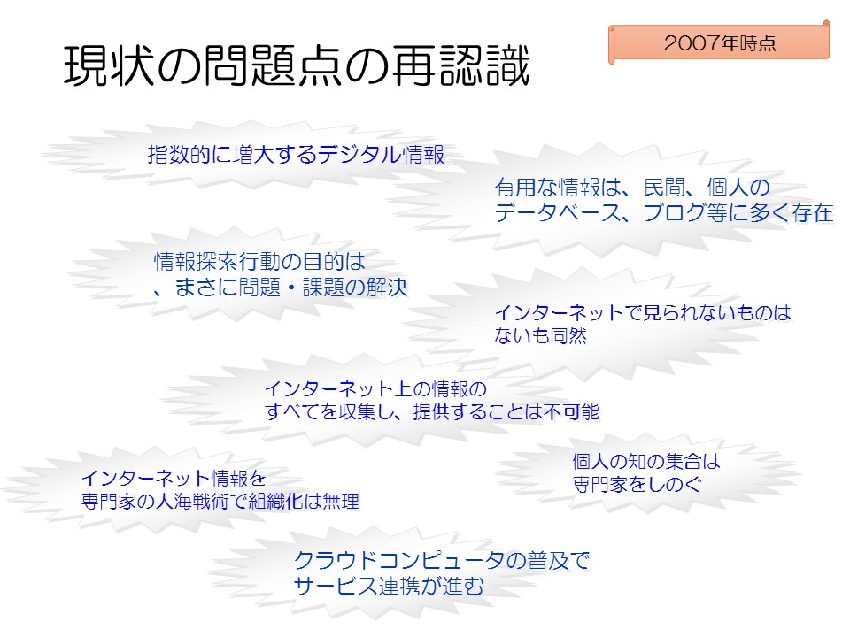
- 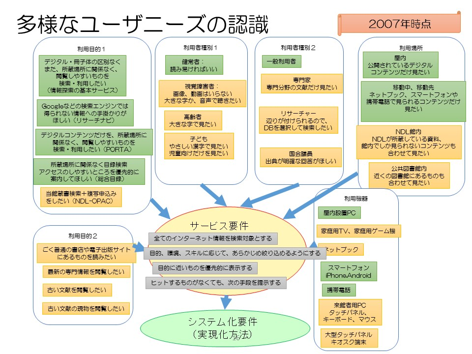
- 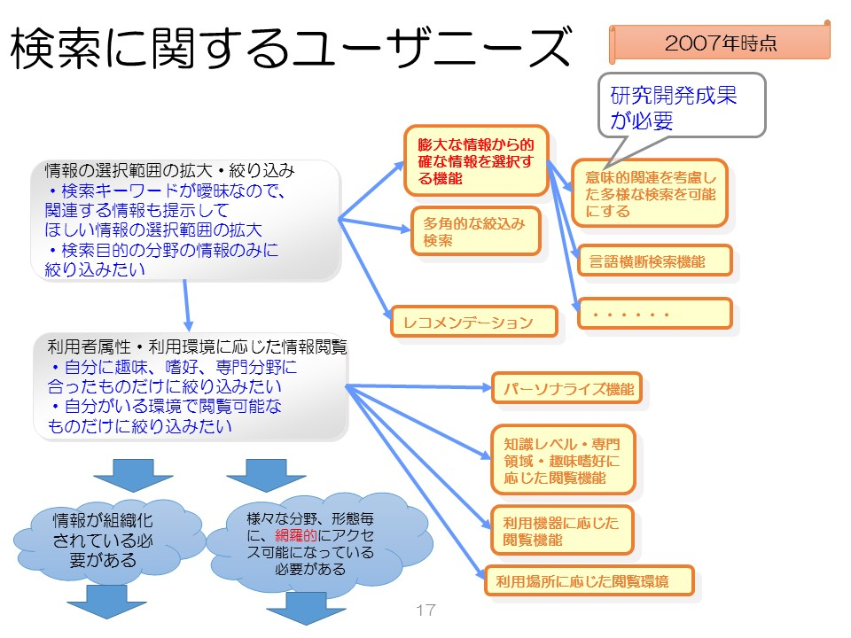
- 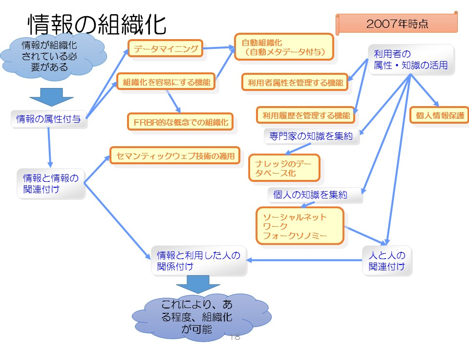
- 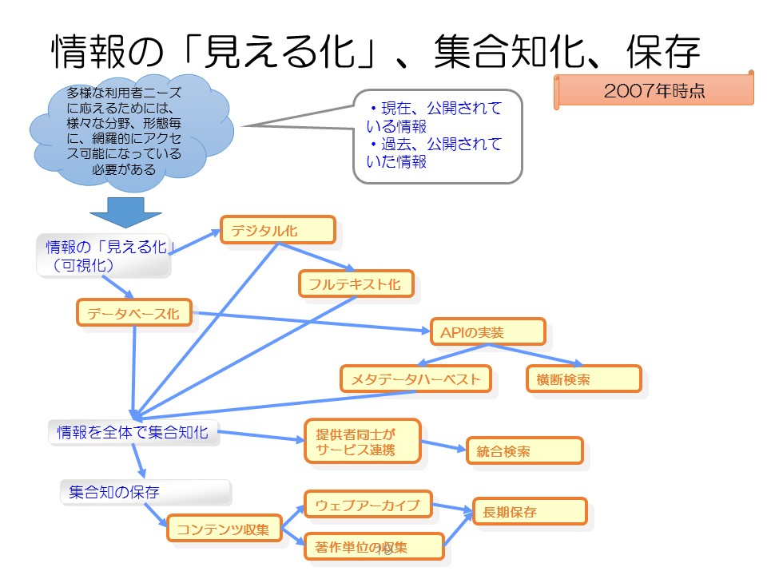
- 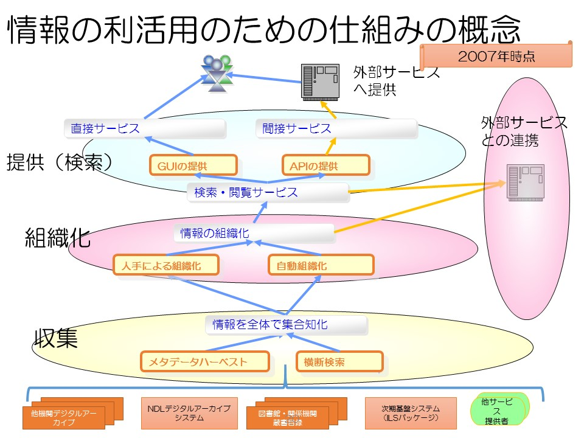
- 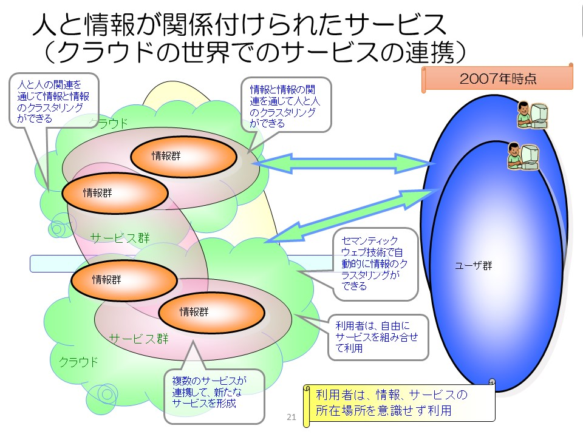
- 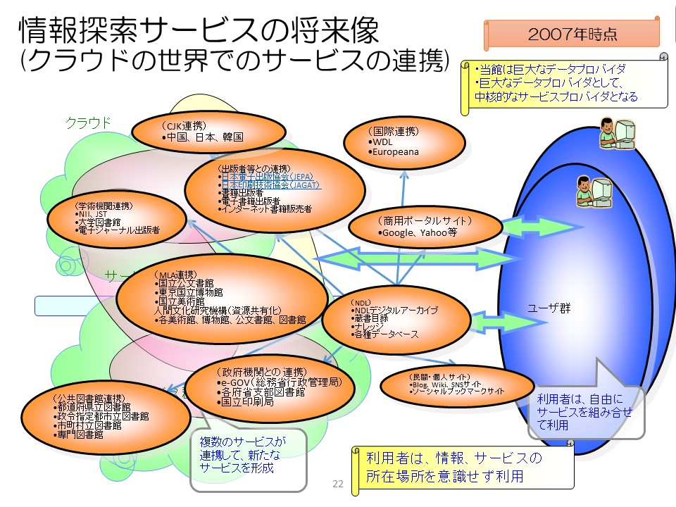
- 情報を全体で集合知化
- コンテンツ交換の方法の１つ（PeerToPeer）対等な関係
- 組織を超えて知識を集約すること、
- 専門家の知識を集約すること、
- 個人の知識を活用すること
- 集合知の永久保存
- 永久保存のために実施すべきことの１つ
- 現在の媒体、ファイルフォーマットは、そのままでは、将来、読めなくなります
- インターネット上の情報は、すべてを１つの組織で保存することは不可能
- 情報の組織化
- FRBRの概念での組織化
- 情報の組織化として
- メタデータは一義的には、コンテンツの作成者が付与するのが望ましい
- CGM(Consumer Generated Media)
- 自動組織化（自動メタデータ付与）
- 情報と情報の関連付け、
- 利用者情報の組織化
- ユーザの趣味、嗜好などを推定でき、同じ検索手段でも、あらかじめ、提示する情報の機械的な絞込みが可能
- 人と人の関係付け、
- 情報と人の関係付け
- ユーザ群と情報群が関係付け
- 情報検索手段（利用方法）の変革
- 情報の関連を活用した検索（情報の選択範囲の拡大・絞込み）
- 利用者属性、利用情報を活用した検索および閲覧（利用者属性・利用環境に応じた情報閲覧）
- NDL-DA、PORTAシステム開発における技術導入の考え方
- サービス構築の姿勢
- 基本的には作らない。OSSの組合せ、サービスのマッシュアップ。
- 技術開発、利用者ニーズに速やかに対応するためには、研究開発成果のタイムリーな実装が必要。
- 研究開発成果や、先進機能を使ってタイムリーにバージョンアップされていくOSSを組み合わせていくことが有効。（図書館用の商用パッケージでは、タイムリーに対応できない。）
- システムはWeb上にあるサービスを組み合わせて、マッシュアップで構築することが効率的。
- 各機関のサービスを活用しあうサービス連携
- Webサービス連携から、コンピュータ資源やサービスを共有しあうクラウドコンピュータの世界へ
- デジタルアーカイブ機能
- 対等な関係での分散デジタルアーカイブを指向
- 当館は国のデジタルアーカイブを構成するデータプロバイダの１つ。日本中のデジタルコンテンツを１つの機関ですべて収集・保存することは不可能。
- 分散デジタルアーカイブが連携して、1つの巨大なデジタルアーカイブとして利用できるようにすることを目指す
- メタデータ交換の統合検索連携は第一歩。次に、コンテンツの相互交換による連携。
- 必要なコンテンツを交換し合う方法として、セキュアなPeerToPeer（P2P）ネットワークでの連携が有望
- ポータル機能
- 一般の利用者にとって、データベースの所在を探すのも含めて、実質的な入り口は、GoogleやYahooのような検索サイト。
- Google、Yahoo等の表層ウェブを中心にした検索エンジンと、検索エンジンからはアクセスが困難な深層ウェブとのワンストップ検索サービスの融合が必要。
- 目的とするコンテンツを直接検索・閲覧できるサービスが求められている。たらいまわし的なナビゲーションは好まれない。
- 利用者層、直接統合検索できるコンテンツのカバレージなど、目的を明確にして、ユーザニーズに対応したポータル機能が必要。
- 構築に向けた主な連携協力
- 産学官の研究機関との連携
- 国際標準、業界標準の積極的な適用
- 政府機関、民間を問わず、国内外の研究機関、研究者等と連携して調査研究
- 各機関の研究成果を組み合わせて機能を実現
- まずは、海外ではIIPC、国内では研究開発を行っているJST、NII、NICT、AIST、IPA等の政府機関、大学の研究室等との連携
- 有用な検索サービスを実施している商用ポータル機関（Google、Yahoo等）との連携
- 産官学の研究開発プロジェクトの成果の活用
- 国のデジタルコレクションの構築に向けた主な連携協力
- 内閣官房
- 美術館、博物館、文書館、図書館連携（MLA連携） （関係機関のサイトへのアクセス、来館利用が促進される形での連携・協力、デジタル情報資源ラウンドテーブルを設置予定）
- 学術情報機関 （学術情報、科学技術情報の統合検索、コンテンツの長期保存、学位論文の保存と提供、NDLと大学図書館との連絡会議の下に学位論文電子化の諸問題に関するWGを設置して検討してきた）
- 公共図書館（各図書館での郷土資料のデジタル化とアーカイブ構築を支援、公共図書館の総合目録ネットワークの便利さをデジタルの世界でも実現）
- 出版者等 （電子書籍作成支援、電子出版用に出版者へ提供、各出版者へのナビゲーション、出版者等のビジネスが拡大できる形での連携・協力）
- 民間デジタルアーカイブ
- 歴史的音盤アーカイブ協議会（HiRAC）
- 商用ポータルサイト （実質的なインターネットの入り口、色々考えられる）
- 政府情報
- 国際協力
- まとめ
- 連携による組織を越えた統合検索
- 次世代は、人と情報が関係付けられたサービスの連携
- 5年程度までの方向性（クラウドコンピュータの世界の普及をイメージして）
- 裏話
- 「トータルな図書館システムの実現」
（2009年）（長尾前館長に提示）- 柱
- 当館インターネットサービスの改善
- 新技術の取り込み
- 共同研究（研究素材・課題の提供、成果の活用）
- 商用サイトのサービスとの差別化と共存
- Googleを含めて、市場に対して影響力のある商用サービス機関との差別化と共存の方向付け
- 関係機関と連携したコンテンツ構築
- 電子納本の促進
- デジタル化推進戦略（全体計画・方針）の策定
- 電子出版物流通センター構想の具体化
- 出版者の電子書籍作成支援
- 出版物の当館によるデジタル化
- 出版者の電子書籍データベース立ち上げ支援
- 当館サービスから各出版者サイトへのナビゲーション
- 媒体の種別、所蔵場所によらないトータルな統合検索・閲覧サービスの構築
- MLA連携、日中韓連携の具体的アクション
- レファレンス協同データベース、PORTA、総合目録の統合利用環境の構築
- 館全体システム
- トータルな図書館サービス
- サービスの概念
- 基本サービス
- 付加価値サービス
- 外部連携
- 紙とデジタルをシームレスに利用できるサービス
電子図書館課と協力して推進 - 関係機関と連携したサービスの提供
公的機関だけでなく、民間企業、商用ポータルも含めて。 - 関係機関と分担による保存
各国の国立図書館、IA社、国内でのアーカイブ機関と連携。
- 情報探索サービス
- 要求要件定義
- 新利用者サービス2009及び書誌サービスの新展開（2009）から、情報探索に係る業務・サービス要件を洗い出し、要件を多角的に分析する。
- 市場動向（外部のユーザ・組織の要望・状況、商用を含めた外部のサービスの動向（トレンド））を分析する。（ニーズ）
- インターネットサービスの5年後程度のロードマップ
- 先進的なサービスを提供するサイトの今後の動向 Amazon、Google、Yahoo、YouTube、Wikipedia、はてな等
- ニーズと技術を総合的に判断して、要件定義書を作成する。
- 作成に当たっては、外部の有識者の参画を求め、外部からの目線での意見を尊重する。
- システム化要件定義
- システムイメージ及びリリース計画案の作成
- 新技術、研究開発成果の適用 国の施策としての実施、研究機関と共同で。
- 段階的なサービスの提供
まず、既存のサービスを順次拡充していく。
並行して、拡張性のある新しいシステムとしてOSS、パッケージを利用して構築を進める。
実証実験のテストベッドとなることも想定 - 民間のサービスとの連携
Amazon、Google、Yahoo、YouTube、Wikipedia、はてな等のサービスの活用 - 調査内容（実装技術）
- 現在適用されている技術
- 普及が見込まれる技術
- 先進技術を駆使したパッケージ、OSSの普及見込み（ロードマップ）
- 技術要素
情報の可視化技術
情報・知識の集合知化技術
（集合知の永久保存技術）
情報の組織化・情報と人の関係づけをする技術
膨大な情報から的確な情報を選択する技術
利用者属性・利用環境に応じた閲覧提供技術
- 次期基盤システム
- 従来型の図書館サービスを継承
- 紙資料の業務システム（収集・組織化・提供（検索）、閲覧複写申込機能）としての役割の継続
- 従来型OPACに慣れ親しんだユーザ向けの検索機能
- 追加機能
- 検索結果から、デジタルコンテンツがある場合のナビゲーション
- データプロバイダとして、他システムから、検索及び複写申込みができるようにするためのWebAPIの追加
- 共通インフラ・標準化
- 世界レベルでの資源の共有を目指すための共通仕様
- 他機関サービスとの連携技術
- クラウドコンピューティングの世界でのWebサービスAPI
- 通信プロトコル
- 書誌（メタデータを含む）記述要素、記述規則
- 管理用、検索用
- デジタルコンテンツ仕様
- 館内システムでの資源の共有
- ハードウェア、ネットワーク資源の共有
- 分散拠点でのディザスタリカバリ対策
- 論点
- 次世代図書館システムで考慮した事項
- 「Project Next-L」の挑戦は参考になるのではないか？
- 世の中の進歩は、図書館よりも確実に早い
- 今の利用者は、新しいサービスに驚かない
- 検索エンジンとは違うインタフェースがかえって驚かれる。
- たらい回しは嫌われる。（ナビゲーションもその一つ）
- ALEPHは、従来型の図書館業務システムのパッケージ→新しいサービスの提供のための機能を期待してはいけない。あくまで、コストダウンのために利用する。
- 新サービスは、「情報探索サービス」の世界でトータルなサービスとして。
- サービスの要求要件定義はサービス部門、システム化要件、システム開発・システム運用は、情報システム課、電子図書館課？
- DAと次期基盤は、ある意味、バックオフィスの業務系システムであるが、紙とデジタルの業務の統合は、いつを目指すか？
- 情報探索サービスの部分は、市販のパッケージでいいのか？
- この部分は、NDLとして図書館界にリーダシップを発揮すべき部分と考える
- OSSに機能を付加して、公共図書館向けに提供したいが、それは可能か？
- 研究開発成果がたくさんあり、それらの成果が順次容易に取り込めるような拡張性が必要だが、「Project Next-L」のようなOSS等は利用できないのか？
- FRBR的な概念の実現方法は？組織化は無理。検索機能でどこまでできるか？
- 目録管理とPORTAと総合目録の合体を早く考えられないか？→紙とデジタルの総合目録を早期に実現（FRBR図の実現形部分）
- 目録サービスの範囲の拡大は？
- 目録サービスとして、紙だけでなく、デジタルも含めたものにするのはいつから？
- 全国書誌の範囲の拡大等
- メタデータ付与の所管は、電図課？収集書誌部？
- 目録検索機能及び外部API等は、レファ協、PORTA、総目のAPI機能と合体して考えたほうがいいのではないか。
- 「情報システムユーザスキル標準」で示されたようなスキルを具備する人材の確保方法
- 体系的にスキルを習得できる場の用意。（研修、OJT）→単に情報システム課を経験するだけではスキルは身に付かない。
- 組織体制の見直し
- 今後の業務量の試算
- 仕様調整、見積もり精査の実施姿勢
- 開発、検収プロセスの見直し
- 「次期基盤システムの開発方針」（2008年）を見直すことになった理由
- 何故この方針が出されたのか？
- 今までの検討が、館全体のシステムとの整合に明確でなかった。
- 今までの検討では、膨大な費用がかかりそうだった。
- 今回の全体イメージ及びスケジュールは24年1月に基盤システムが、パッケージを導入した次期基盤としてリリースすることを前提としたもの。
- 28年度くらいまでこの形で運用することになるが、それでいいか？
- 次期基盤システムの開発方針について
（2009年）- 背景
- 多大な費用が必要であるとの第1次見積りが提示された（平成20年12月19日情報化推進委員会）
- 利用者からみたサービスのあり方をより明確にすべきとの意見が出された
- 「新・利用者サービス2009（仮称）」が2月5日の館議・庶務担当課長会議合同懇談会で提示
- 2月12日の館議において平成21年度の推進事業の一つとして、「トータルな図書館システムの実現」について館長により決定されたことが報告された
- 館全体の将来システムを見通しつつ次期基盤システムの開発方針について、今回とりまとめた
- 現行基盤システムの問題点
- 運用・保守作業や機能拡張に係る経費が大きい
- 機能拡張への対応力が低い
- 要約すると、現行基盤システムの運用コストが高くて、また、改善費用も高いので、改善できない。
- 開発目的
- 運用性、柔軟性の高い次期基盤システムを構築することにより、これらの問題点を解決し、さらに、削減された資源を活用して、社会のニーズの変化に対応した新たな利用者サービスを展開できるようにする
- 作り直して、運用コストを下げて、下げたコストで新しい利用者サービスを構築しようということ。
- 基本方針
- 次期基盤システムは、当館全体システムを構成する次期図書館システムの一機能として検討
- 次世代OPACで構成されるとしてきたが、付加価値サービスを提供する情報探索サービス
- 次期基盤システムは 総合目録システムの要求機能要件も含めて検討する
- 特殊要因等での予算要求を前提とせず 現行システムの運用経費を大幅に下回ることを目指す
- 情報探索サービスについては 図書館ポータル、次世代OPACとして範囲を限定せず、情報探索サービスとして体系的に整理されたサービスの構築を目指す
- サブトピック 8
- 書誌については、利用者の視点に立って今後の方針を明確にし、「新・利用者サービス2009」と並行して検討を進め、新たな情報探索サービスにおいて実現させる
- 要約すると、
- 従来の基盤システムに総合目録管理機能を追加して、パッケージを導入して、業務改善する
- 新たなサービスとして検討している次世代OPACとか図書館ポータルは、紙、デジタルを問わない統合的なサービスとして検討しようということ
- 開発・運用予算の確保
- 現行システムの運用経費の削減
- 次期基盤システムの導入経費の削減
- システム化要件を明確にし、業者見積もりの妥当性を的確に判断する
- 競争原理が働く調達を行う。
- 特定ベンダーしか提案できないRFPにはしない
- 新規開発を極力なくす
- ただ、高いからといって機能を削るのではなく、安くできる方法を考える
- 体制の確保
- 適正な仕様、費用での構築できるように、PJMO支援等の調達により、「情報システムユーザスキル標準」（UISS）（平成18年経済産業省策定）等のスキルを具備する人材を確保する。
- UISSとは
- 最適な業務・システムを、効率的、効果的に構築するためには、組織内に「情報システムユーザスキル標準」（平成18年経済産業省策定）等で示されるスキルをもって実施することが有効であるが、そういうスキルをすでに持っている人材を確保することは困難である。
- 各要求部門とアウトソーシング先との橋渡し。情報システム課から見れば、ユーザは各部局課及びその職員。各部局課から情報システム課へアウトソーシングする形。
- スキルを持った人材を確保することは困難。しかし、スキルを持った人と一緒にOJTで実施することにより、スキルを持つことが可能。PJMO支援や非常勤職員等の登用により、そういうスキルを持った人を参画させることが有効。
- また、やみくもにスキルを身につけることは困難であり、「情報システムユーザースキル標準」等のガイドラインとして、ハイレベル、ミドルレベル、エントリーレベルに見合った業務を行って、ステップアップすることは可能。
- 情報システム部門に限らず、組織において、ISに関わる全ての部署、人材を対象とする。
- 組織力強化のために利用
- システムベンダー企業への発注時に利用
- ISに関わる組織及び人材の役割・キャリアパスの理解のために利用
- 組織の観点：所属メンバーの現状のスキル把握、強化すべきスキルの把握などに活用
- キャリアアップやキャリアチェンジを図るための参照モデルとして活用
- 組織への適用
- IS機能の社内配置状況
- IS機能の個人への割り当て状況
- 業界、業態、企業固有の知識・スキル
- タスク概要
- IS機能をアウトソーシングした場合、発注者側の責務と役割として、受け入れ検査もしくはこれと同等の作業が発生する。
- 契約管理
- 現在のサービスとシステム
- 【2014〜5年】現状と課題と解決策で検討されていること
- 基本問題事項
- 利用者サービス
- • apiの利用者は、guiとは比較にならないくらい多い。
• ndlを意識して利用しない大多数の国民、インターネットユーザーにどんなサービスを提供するか。他の機関のサービスを通じて提供する間接的サービス。
• 実現の想定時期は？実施の順序は？その時以降のサービスとして、世の中のニーズと合致しているか。（デジタル化の進展、電子書籍、電子雑誌の普及⇒オンライン資料の収収集、ナショナルアーカイブ構想）
• 新規軸を出していかないと、予算を含めて資源はジリ貧方向。各業務、会議の効率化による資源の捻出も必要
• 2004年の中期計画2004
• 2009年3月に描いた「次世代図書館サービス」と方向性は一緒
- 資料組織化WARP切出し、雑誌記事索引作成
- • 専門の職員の作成した書誌以外の、外部の専門家、一般市民の集合知である知識・知見を活用するという方向性としては賛成（クラウドソーシング、LODクラウド）
○ どのシステムで実現するかは、要件が決まれば、システム化要件として、電子情報部が中心に考えること
○ まずは、出版前に作成されている、出版社の情報を活用
§ 出版者は、販売促進のために、目次、アブストラクト、あらすじ等を作成している。論文にはキーワードがある
○ 雑誌記事索引だけでなく、著作物を探すために有益な情報、たとえば、ソーシャルタグ、書評、章節項・画像単位のマイクロコンテンツに対する情報付けを含めて、一般の市民も含めて、情報に対する関連付けを行うアイデアをだすアイデアソン、実践してみるハッカソン、一般の人が作成するアプリとかの作成が促進される方向での検討が有効と思う
○ 目次作成に関して
§ 雑誌記事索引というアクセスポイントというより、著作物単位の組織化という考え方
□ 著作物は、あくまで無体物の情報で、雑誌は、紙を媒体として無体の著作物を寄せ集めて、紙の上で具現化したもの□ EJを含め電子雑誌の利用の単位は、著作単位である記事
§ 電子書籍・電子雑誌のなかで、コミックに関しては、すでに、紙のコミックの半分くらいが電子コミックになっているとの統計がある（一般社団法人デジタルコンテンツ協会「デジタルコンテンツ白書2014」）。デジタルで出版されるものは確実に増えている
§ ボーンデジタルは、作成段階で、目次は作られている。EPUB等ではそれがコンテンツに含まれている⇒出版元の情報の活用
○ WARP切出し
§ HPに置かれたデジタル著作物
□ 過渡期として、切出して書誌を付けることを人手でおこなうことが有効にもみえるが、これが5年後まで続くような形であってはいけない。そうならないようにNDLは働きかける活動が必要
§ 今後
□ NDLも、以前はHP上に置いていた。それを、レポジトリとしてのDAに置いて、リンクで見えるようにしている
□ 大学では機関レポジトリ、JAIRO、JAIROクラウドが進んでいる
□ 各機関でDBを作れないなら、「オンライン資料収集のファイル送信」の仕組みで、著作単位に組織化されたコンテンツを収集すればいいだけではないか。
□ 政府機関も、オープンデータ化の一環で、オープンデータの基本である「機械可読な形」（メタデータがあることもその１つ）で公開する方向に動いている
□ 方向はコンテンツのデータベース化。データベースに登録するためには、コンテンツ登録者が必ずメタデータをつけることになる
ホームページ型でなく、カタログサイト型のメリットは、データセット登録やメタデータ登録・検索機能などの充実
□ 過渡期の施策が、その動きを停滞させる形であってはいけない
- オンライン資料収集
- • ダークアーカイブして、公共図書館と同様に、「電子書籍閲覧サービスを受けたら」
○ 公共図書館との共同契約も。誰が負担するかの問題であれば、国・地公体のトータルコストは同じ。NDLだけで物事を考えない。
• オンライン資料には、当館デジタル化資料を二次利用した、電子書籍作成、配信、PODサービスがある。また、その電子書籍、PODは、絶版本ではなくなるので、図書館送信サービスから除外手続きをされるかもしれない。
○ 二次利用、図書館送信サービスも含めて、出版文化の発展のために、出版社とNDLはどんな役割を果たすかのコンセンサスを得なければ、個別の最適解が見つからないのではないか
- 関西館利用者サービス
- • 関西館は、電子図書館、遠隔複写等の遠隔サービスと、書庫
○ 都市部に作らなかったのは、一般の来館サービスに主眼がなかったはず
○ 近隣住民の利用を増やすことは、地元への貢献という意味はあるが、施設としての優先的な施策ではない
○ 貴重な紙の資料は、閲覧させない方向性なのだから、一般利用者が、総合閲覧室で、紙資料の閲覧・複写申込みをすることの需要は多くないはず。（複本のあり方は別途議論されている）
• 研究機関が集まっているところに設置された図書館は、紙資料の閲覧が目的でない
○ NICTもATRも研究者が一堂に会するワークショップや共同研究のときは集まる
○ 大阪、京都には、研究者がたくさんいる
• 関西館のスペースは、遠隔サービス以外も目的として、いつもオンラインで意見交換している専門家、研究者が、知識創造の場として、物理的な空間に一堂に会して、異文化交流・出会い・議論の場。紙ではなくデジタル資料を活用できるように、図書館員が支援する形が必要ではないか
○ また、大学で普及し始めている「ラーニングコモンズ」
§ 同志社のパンフレットによると、「様々なヒト・モノ・コト・情報と出会い、それらを仲間と共に議論し展開していくことで、新しい学びの可能性を生み出していく」
□ 東京にはスペースがないが、関西館にはスペースがたくさんある
○ たとえば、
デジタル文化財の、センター運営基盤の京都の拠点として、「戦略企画、アーカイブ・デジタル化の研究開発、人材育成、デジタル化支援」を行う
§ MANGAの京都の拠点になる
□ 議員の先生に言われたやるとかでなく、自発的に名乗りを上げることが、主体的な組織・施設運営に繋がる
- デジタルアーカイブのポータルの発展形
- 知識インフラの構築を目指して
2010年に、我が国の第4期科学技術基本計画の策定に向けて決定された「科学技術基本政策策定の基本方針」（2010年6月総合科学技術会議基本政策専門調査会決定）で、「文献から研究データまでの学術情報全体を統合して検索・抽出が可能なシステム（「知識インフラ」）の展開を図る」という方向性が提示されました。これを踏まえて、NDLにおいて、2011年に「第三期科学技術情報整備基本計画」を策定し、国の知識インフラの構築の一翼を担うこととしました。「知識インフラ」とは、情報資源を統合して検索、抽出することが可能な基盤で、国内の各機関が保有する情報を意味的に関連づけて知識として集約し、新たな知識の創造を促進し、知識の集積・流通・活用と創造のサイクル構築を目指すものです。
知識インフラ構築の実現形の先行事例として、2013年3月には、「東日本大震災アーカイブ（ひなぎく）」を構築しました。大震災に関連する災害現象そのもの、災害前・災害直後・復興の過程、災害時の対応、他地域・次世代への教訓等のあらゆる記録を後世に残すとともに今後の防災に生かすため、関係府省、各種震災関連情報の保有機関と協力して分担収集・保存し、一元的に検索・閲覧できるようにしたものです。知識インフラ構築に必要なフレームワークと次世代技術を積極的に適用しています。- 2010年に、我が国の第4期科学技術基本計画の策定に向けて決定された「科学技術基本政策策定の基本方針」（2010年6月総合科学技術会議基本政策専門調査会決定）で、「文献から研究データまでの学術情報全体を統合して検索・抽出が可能なシステム（「知識インフラ」）の展開を図る」という方向性が提示されました。これを踏まえて、NDLにおいて、2011年に「第三期科学技術情報整備基本計画」を策定し、国の知識インフラの構築の一翼を担うこととしました。「知識インフラ」とは、情報資源を統合して検索、抽出することが可能な基盤で、国内の各機関が保有する情報を意味的に関連づけて知識として集約し、新たな知識の創造を促進し、知識の集積・流通・活用と創造のサイクル構築を目指すものです。
知識インフラ構築の実現形の先行事例として、2013年3月には、「東日本大震災アーカイブ（ひなぎく）」を構築しました。大震災に関連する災害現象そのもの、災害前・災害直後・復興の過程、災害時の対応、他地域・次世代への教訓等のあらゆる記録を後世に残すとともに今後の防災に生かすため、関係府省、各種震災関連情報の保有機関と協力して分担収集・保存し、一元的に検索・閲覧できるようにしたものです。知識インフラ構築に必要なフレームワークと次世代技術を積極的に適用しています。
- 業務システム・最適化計画2013-2017
- 当館システムに求められる要件
- ① 当館の収集資料に加えて関係機関の収集資料の利活用にも資すること
- ② 効率よく電子資料を保管・閲覧できる電子書庫
- ③ 利用者のニーズに合ったユーザインタフェース
- ④ 当館の情報を活かした高度な検索
- ⑤ 外部システムからのスムーズなデータアクセス
- 館外の動向
- ① デジタルコンテンツの隆盛とデバイスの多様化
- ② データのオープン化
- 要件定義
- 要件定義の準備
- １） 要件定義の対象範囲等の特定
- ２） ＲＦＩの実施
- ３） 事業者へのヒアリング等の実施
- ４） 必要な資料の作成
- 要件定義
- １） 要件定義書の記載内容
- ２） 要件定義書の調整・作成
- 館外の動向
- ① デジタルコンテンツの隆盛とデバイスの多様化
- ② データのオープン化
- 方針と目標
- ① 特性を考慮したシステムの統合
- ② 共通するシステム要素の集約と汎用化
- ③ 継続的な業務・システムの最適化
- ④ 業務を効率化する補助的なツールの活用の推進
- ⑤ 外部委託範囲の見直し
- ⑥ システムハードウェアの最適化
- ⑦ システム運用の効率化
- ⑧ 分散ファイルシステムの活用
- 目指すべきシステムの姿
- ①個別の要件を満たす検索ユーザインタフェース（UI）サブシステム
- ②業務を効率化する身軽な個別業務システム
- ③共通的で柔軟な運用が可能なシステムインフラ
- ④分散ファイルシステムを活用した電子書庫
- ⑤効率良い統合運用
- 取組事項
- ① ハードウェアのリプレースに伴う仮想化・クラウド化
- ② 検索UIサブシステムの構築
- ③ メタデータの集約・標準化・公開
- ④ 補助的なツールの活用体制構築
- ⑤ システム開発・運用プロセスの標準化
- ⑥ 統合運用の活用拡大
- ⑦ IT人材の育成
- 先進的・実験的事項
- ① デジタル化・テキスト化の推進による知識情報サービスの高度化
- ② 検索の高度化とメタデータの自動生成
- ③ 一次情報の多面的利活用
- ④ 電子情報資源の長期保存
- 順守すべき実施規約
- ① 「使命・目標」に従ったサービス・業務の実現への貢献
- ② 利用者の視点に立脚
- ③ オープンな仕様・ソフトウェアの採用
- ④ 既存システム資源の有効活用
- ⑤ 安全性・信頼性の確保
- ⑥ 最適化のためのシステム情報の収集と分析
- ⑦ 十分な開発・連絡体制の構築
- ⑧ 開発から運用・保守への円滑な引継
- ⑨ データの整合性への留意
- ⑩ 最適化計画への準拠
- リニューアル総括からの教訓
- 来館利用者に対して、従来型のOPACでなく、外部サービスも含めて検索しナビゲートできるようにしたことに対して、利便性が落ちたと評価された。（長尾前館長と大滝館長の視点の大きな違い）
- 教訓１ 企画段階（サービス要件定義）
- ①多様な利用者像を認識し、既存の利用者の利便性を損なわないように配慮する。
- ②企画段階で、サービス要件定義について、全館で合意を形成する。
- 教訓２ 業務要件・システム化要件定義段階
- ①トライアルを実施し、フィット・アンド・ギャップ分析の内容によって、サービス要件定義書の見直しを行い関係部局課で合意形成した上で、パッケージを決定する。
- ②サービス要件定義書に基づいて、業務要件定義書、システム化要件定義書をまとめる。
- 教訓３ 業務・システム構築、移行・研修段階
- ①構築段階では、各要件定義書に基づいて構築工程を実施する。
- ②構築の段階から構築内容・進捗を管理する全体SIを導入する。
- ③適宜チェック及び修正を行えるプロセスを確保する。
- ④館内サービスシステムについて一斉切替を行うことはリスクが大きいことから、段階的な機器入替等を実施する方策を検討する。
- ⑤NDL-OPAC等切替対象システムについて、開発版を事前に利用者に試用してもらうことにより、事前広報とシステムの改善に活かすことを検討する。
- ⑥習熟・研修期間を十分確保する。また、段階的な習熟訓練・研修の実施を検討する。
- 教訓４ リニューアル全体管理
- ①全館でサービスの方向性、実施内容の合意を形成することが重要。その上でリスク管理を行う。
- ②総務部門、サービス・業務部門、システム部門が連携して問題に対して対処できる体制の確保
- 教訓５ スキル向上
- ①各工程での実施内容の妥当性を評価できるスキルを職員が持つ。
- ②パッケージ機能の差異を人的コストで埋めることは妥当でないため、手間のかかる作業を自動化できるマクロやスクリプトなどの補助的なツールの活用を推進し、システム部門とサービス・業務部門との協力のもとで適切に維持管理できるようにする。
- 今後の国の情報政策と図書館
- （予測）2020年から数年を見据えて、情報の提供と利用はどうなっているか？
- 今後10年を見据えると、現在の制度的課題、技術的課題はかなり解決されていると思われる。
- 考察事項
- （予測） I CTの技術でどこまで可能になっているか
- 技術的に実現できそうなことは？
- 普及が見込まれる技術
- その技術を活用したサービスの形は？
- （基本構想）その時に国全体で何をしていなければならないか？
- その中で図書館は何をしていなければならないか？何を目標とするか？
- 私の予測
- 出版界
- 出版形態の主体が紙からデジタルへ移行する時期
- 出版物としての流通から、情報としての流通へ。
- 出版社による電子書籍販売サービスのビジネスモデルは成熟しているであろう
- 大半の雑誌は、電子雑誌化
- サブスクリプションサービスが一般化
- 雑誌単位、記事単位
- 少量出版物は、PODに移行しているであろう
- 孤児作品や絶版作品、フェアユースのための法制度が導入
- 容易に電子書籍化ができるようになっているであろう
- 現在のような閲覧を不可にするDRMでなく、電子透かし的なDRMに代わっているだろう
- 国
- 公的資金で作成された出版物は、オープンアクセスになっているであろう？
- NDL
- コンテンツ生成
- 当館所蔵資料のデジタルコンテンツ化率はかなり高くなっているであろう
- （関係者協議内容が見直されて）全文テキスト化も可能になって、フィックス側、リフロー型が１つになった電子書籍化も行えているであろう
- 収集
- 電子書籍・電子雑誌
- 収集の主体はデジタル化コンテンツになっているであろう
- 当館によるオンライン資料（電子書籍・電子雑誌等）の収集は軌道に乗っているであろう
- インターネット情報
- 収集するインターネット情報は、公共機関、NPO、民間に広げている。
- ウェブアーカイブとデジタルアーカイブの情報が関連付けられる技術も相当進展している
- セマンティックウェブ技術や、新しい技術開発が進み、人工知能（AI）も実用レベルになっているであろう
- 組織化
- 物としての組織化から、マイクロコンテンツとしての情報の組織化へ移行？
- 情報自身、情報間の関連付けもかなりの精度で自動化されているであろう
- 保存
- 紙とデジタルでなく、媒体としての長期保存、情報としての利用、情報の長期保存
- 原本性を保証する役割を果たすことが必要である
- 一つの識別子で、バージョンを管理することは現時点においても可能となっている
- 提供
- 登録利用者への特別サービスが考えられる
- 有償で、付加サービスも
- デジタル複写サービス
- 認証も、マイナンバー、Open－ID
- 図書館資料を有償で利用することの結論は10年では出ないだろう
- 公共図書館
- 当館、公共図書館では、商用の電子書籍販売サービスを活用しているであろう。
- 閲覧提供は、有償オンラインとして収集した情報か、電子書籍サイトかは、予想できない
- 当館のデジタル化資料送信サービスもほとんどの図書館で利用されているであろう。
- 海外の図書館も、出版社への支援活動が功を奏していれば、自宅への配信も可能になっているかも知れない）
- 特に出版関係
- デジタル技術によって、絶版本や歴史的価値のある本が復刊すること
- 電子書籍専用リーダー（ハードウェア）の性能向上と普及が進むこと
- 図書館の電子書籍貸し出しサービスが開始すること
- 特定の電子書籍書店が大きな市場シェアを持つようになること
- セルフパブリッシングの市場が拡大すること
- 電子出版に関するスタートアップ企業が上場などにより勢いを増すこと
- 出版社の収益モデルの変化に伴う組織再編が行われること
- 電子書籍書店の事業撤退が増加すること
- 電子透かしのようなソーシャルDRMの利用が広がること
- 電子書籍とプリント版書籍が組み合わされて販売されるようになること
- 電子書籍市場規模が成長が続くこと
- 電子書籍コンテンツがアプリ化していくこと
- 電子書籍が新たな表現力を増し、マルチメディア化していく
- 出版社が販売データの分析をしたり、顧客との関係を強化したりすること
- 電子書籍市場での割引や無料化などの施策が行われること
- 電子教科書のオーサリングや配信のソリューションが増えること
- プリントオンデマンドの市場が拡大すること
- 日本のコンテンツを海外で流通させるプラットホームや企業ができること
- 著者や編集者にとって、出版に必要とされるスキルや能力が変化すること
- デジタルとプリントを統合する編集・制作環境が普及すること
- 出版までのハードルが下がることにより出版物の品質が変化すること
- 外の電子書籍事業者に対しても、消費税が課されるようになること
- 電子教科書の技術が標準化されること
- 新著作権法の施行にともなって発生するこれまでとは異なること
- 既存の出版社とインターネット企業に経営統合や事業提携が進むこと
- 出版社が情報通信技術やソリューションへの投資をすること
- 電子書籍市場が国際化し、それに出版社が対応すること
- 書籍の月額定額制購読サービスが登場することや普及すること
- 出版社や著者がSNSなどを使いこなすようになること
- 政府の施策と同一歩調を取る意義
- 何のために？
- 緊縮財政の折、「私たちの使命・目標2012-2016」及び「戦略的目標」の達成に必要な資源（特に外部委託費）確保が困難な状況
- 業務システム最適化で示された機能強化
- 多様なニーズへの対応を容易にする検索UIサブシステムの構築費用
- デジタルアーカイブと東日本大震災アーカイブのストレージ及び保存システムの統合費用
- 館内サービス、図書館送信サービスでのコンテンツ提供環境の改善費用
- 東日本大震災アーカイブの運用費用
- 保存と利活用のためのデジタル化と組織化
- NDL資料のデジタル化費用
- 収集コンテンツのディザスタリカバリ対策費用
- メタデータの作成費用
- インターネット情報、オンライン資料の収集拡大費用
- 何をする？
- 国のアーカイブ構築関連の各分野の様々な施策の資源を活用する
- NDLのデジタルアーカイブ、ポータルサービス、デジタル化の実績が、高く評価されており、NDLとの連携を明示するものが多々ある。
- 各分野の施策を、NDLの戦略的目標に掲げた方向性、業務システム最適化の実現形に近づけることにより、各施策の中でNDLに対する期待に応える
- どのように？
- 各分野の施策の目標をサービス要件として、国としてのアーカイブを構築する立場から業務要件、システム化要件を示し、具体的なサービスの構築・運用を調整する
- 結果
- NDLおよび各施策のどれかで補正予算が確保されることを期待
- 26年度補正、27年度予算で見送られても、28年度以降の予算確保の芽が出せれば。。
- 波及効果
- NDLが政府全体の施策の中で先導的な役割を果たすことにより、図書館界全体の発展に寄与する
- 国の情報政策（ナショナルアーカイブの構築を目指して）
- 国全体の活動の方向性
- 我が国では、「知的財産政策ビジョン」（2013年6月7日知的財産戦略本部）等により、文化資産のデジタルアーカイブ化を推進する政策も含めて、今後10年を見据えた知的財産関連の政府の取り組みとしての目標が掲げられました。政策としては、従来の事業モデルの「改善」だけでなく、事業モデルそのものを創造・転換するイノベーションの創出、日本の伝統や文化に根ざした魅力あるコンテンツ・製品などの発掘・創造を目指すとともに、実現に向けて、ビッグデータの収集・蓄積・分析による多様な付加価値の創造に資する研究開発、オープンデータ化、権利処理の円滑化、人材の育成・確保等の取り組みが示されています。
- アーカイブ関連の方向性
- 「知的財産政策ビジョン」に基づく国の施策の中で、NDLに直接関連する計画として、デジタル画像の電子書籍化と利活用の促進に関する構想、デジタル文化資産の保存・活用の基盤の整備に関する構想、学術情報の公開と共有の拡充に関する計画、大規模災害の記録と記憶の保存などのアーカイブの構築等が検討されました。
一方、個々の施策の目的は異なっていても、対象とする文化資産は相互に関連するものであり、知識インフラを目指した仕組みとして、国全体で文化資産の価値を高め、新たな文化や情報を生み出す社会基盤として「恒久保存・継承・公開・活用」が可能な、出版領域を含む文化資産のナショナルアーカイブとなることが望まれます。
-
- 2015年
- 東京文化資源会議（2015年4月正式発足）
- 東京文化資源区構想
- ものづくりとアート：知識が出会う新たな場（場所、機会、電子空間）の創造
- 民官産学を横断した交流・創造体験による地域創造人材の養成
- 地域の伝統的・歴史的知識資源を蓄積するアーカイブの構築と活用
- 域内建造物等歴史・文化資源の保全と再活用
- 公開アーバンラボの設置による、アート×産業×コミュニティを可能にするインキュベーション拠点づくり
- それらの前提となる域内文化資源の洗い出し・見える化
- 第1回東京文化資源区シンポジウム）特別報告「京都における検討状況」（長尾先生）（2016年5月21日）
- 2020年東京オリンピック・パラリンピックに向けての日本文化の発信（2014年2月オリンピックと文化懇談会）提言内容
- 有形文化財の鑑賞とともに無形文化財を体験し理解させる
- 京都の自然を楽しませる
- 京都の現在のユニークな文化、マンガ、アニメなどを発信する、学習させる
- 情報技術を駆使して京都の魅力を紹介する情報データベースと映像アーカイブスなどを2018年までに作り、京都の魅力を世界に伝える
- 京都府・市の検討の柱
- 京都の文化地域観光
- 京都の無形文化財の見学・体験学習
- 学生の日本文化教育
- 安心・安全な環境ができるための情報システムの構築
- この機会に推進すべきインフラ整備
- ・・・・
- 神社、仏閣、観光地、その他が作っている案内情報を集め、データベース化して、オープンな利用に供する
- デジタルアーカイブズと文化資源センターの設立が必要
- 関西の文化資源のアーカイブズの構築
- 文化資源の保存・修復とデジタル化のセンサーを作る
- このセンターを関西の中心である関西文化学研都市の「けいはんなオープンイノベーションセンター」に置く
- 国で検討されている「国立デジタル文化情報保存センター」と連携する
- MANGA マンガ・アニメ・ゲームに関する議員連盟（2015年2月〜）
- メディアアート，アニメーション，マンガ，ゲーム，映画等，複製技術や先端技術等を用いた総合的な芸術。
- 国立メディア芸術総合センター（仮称）
- 展示・公開スペース（常設展・企画展・貸出し展示に柔軟に対応できる展示室，シンポジウム等にも使用可能な上映ホール等）
- 交流スペース（クリエイター等が分野を超えて交流できる場，レストラン，ミュージアムショップ等）
- 調査研究・開発，情報収集・提供及び教育普及・人材育成スペース（研究室，研修室，インターネットの利用や関係図書の閲覧ができるライブラリー等）
- 工房スペース，収蔵スペース等
- 「アーカイブサミット2015」（2015年1月26日）
- アーカイブ立国宣言
- 提言1：国立デジタルアーカイブセンターの設立
- 提言2：デジタルアーカイブを支える人材の育成
- 提言3：文化資源デジタルアーカイブのオープンデータ化
- 提言4：抜本的な孤児作品対策
- 「文化芸術の振興に関する基本的な方針（第4次基本方針）」[答申案]（2015年3月23日）
- 対象期間を、2020年度までのおおむね６年間（平成27年度～平成32年度）
- 我が国が目指す「文化芸術立国」の姿
- ✔あらゆる人々が全国様々な場で創作活動への参加、鑑賞体験ができる機会の提供
- 子供から高齢者まで，あらゆる人々が我が国の様々な場で，創作活動へ参加，鑑賞体験できる機会等を，国や地方公共団体はもとより，NPO，企業等様々な民間主体が提供している。
- ✔ 2020年東京大会を契機とする文化プログラムの全国展開
- 全国の地方公共団体，多くの文化芸術団体，文化施設，芸術家等の関係者により，世界に誇る日本各地の文化力を生かしながら，2020年東京大会を契機とする文化プログラムの全国展開等がなされている
- ✔被災地からは復興の姿を、地域の文化芸術の魅力と一体となり国内外へ発信
- 日本全国津々浦々から，世界中に各地の文化芸術の魅力が発信されている。 東日本大震災の被災地からは，力強く復興している姿を，地域の文化芸術の魅力と一体となって，国内外へ発信している。
- ✔文化芸術関係の新たな雇用や産業が現在よりも大幅に創出
- 2020年東京大会を契機とする文化プログラムの全国展開等に伴い，国内外の多くの人々が，それらに生き生きと参画しているとともに，文化芸術に従事する者が安心して，希望を持ちながら働いている。そして，文化芸術関係の新たな雇用や，産業が現在よりも大幅に創出されている。
- 第３ 文化芸術振興に関する基本的施策
- １ 文化芸術各分野の振興
- （１）芸術の振興
- （２）メディア芸術の振興
- （２）メディア芸術の振興
- （４）芸能の振興
- （５）生活文化，国民娯楽及び出版物等の普及
- （６）文化財等の保存及び活用
- ２ 地域における文化芸術振興
- ３ 国際交流等の推進
- ４ 芸術家等の養成及び確保等
- ５ 国語の正しい理解
- 「文字・活字文化振興法」（平成17 年法律第91 号）に基づき，図書館や学校等において，国民が豊かな文字・活字文化の恵沢を享受できるよう，環境の整備を図る
- ６ 日本語教育の普及及び充実
- ７ 著作権等の保護及び利用
- ８ 国民の文化芸術活動の充実
- （１）国民の鑑賞等の機会の充実
- （２）高齢者，障害者等の文化芸術活動の充実
- （３）青少年の文化芸術活動の充実
- （４）学校教育における文化芸術活動の充実
- ９ 国民の文化芸術活動の充実
- （１）劇場，音楽堂等の活性化
- （２）美術館，博物館，図書館等の充実
- 図書館が，資料や情報等の継続的な収集，調査研究への支援や資料の利用相談，時事情報の提供等の機能を充実させることにより，地域を支える情報拠点となるよう，先進事例の収集・情報提供や図書館の充実方策を提示するなどの支援を行う。
- 地域や住民にとって役に立つ，魅力ある図書館づくりの核となる司書等の資質向上を図るため，研修等の充実を図る。
- 各地域に所在する貴重な文化芸術資源の計画的・戦略的な保存・活用を図るため，博物館・図書館・公文書館（ＭＬＡ）等の連携の促進に努める。
- 人口過少地域における博物館や図書館等の活動の活性化を図るため，情報通信技術の活用により，遠隔地間の連携による研修や遠隔講座等の実証研究を行う。
- （３）地域における文化芸術活動の場の充実
- （３）地域における文化芸術活動の場の充実
- １０ その他の基盤の整備等
- （１）情報通信技術の活用の推進
- （２）地方公共団体及び民間の団体等への情報提供等
- 国内外の文化芸術に関する各種の情報や資料の収集・保存（アーカイブの構築）及び活用方法について検討を行い，国立国会図書館をはじめとする関係機関と連携し，国と民間，国と地方公共団体との役割分担を図りつつ，国民に提供する。
- （３）民間の支援活動の活性化等
- （４）関係機関等の連携等
- （５）顕彰
- （６）政策形成への民意の反映等
- 重点戦略４：国内外の文化的多様性や相互理解の促進
- 貴重な各種文化芸術資源を継承し，次代の文化芸術創造の基盤となる知的イ化ンフラを構築するため，映画，舞台芸術，アニメ，マンガ，ゲーム，デザイン，写真，建築，文化財等の文化資産及びこれらの関連資料等の収集・保存及びデジタルアーカイブ化等を，国立国会図書館等の関係機関と連携しつつ促進する。
- 2014年
- デジタル文化資産推進議員連盟主催「勉強会」（2014年10月15日〜）
- サブトピック 1
- 「世界における文化情報戦略と日本の現状一国家戦略としての文化情報政策推進に向けて―」
- 「デジタル文化資産振興法」立法化に向けた法整備
- デジタルアーカイブ振興法（提案）
①アーカイブ振興基本計画(2020年、2000万点)
②全国のデジタルアーカイブのネットワーク化と統一
ゲートウェイ化⇒ナショナルアーカイブ
③デジタル化ラボ、字幕化ラボの設置
④各国アーカイブとの相互接続
⇒アジアの文化・技術・経済交流のハブに
⑤公的資金で制作・収集された情報資産のデジタル
公開を義務化・利用ルールの公開化
⑥デジタルアーキビストの育成と、関連技術開発
⑦孤児作品や絶版作品のデジタル活用促進
- 大規模災害情報アーカイブス構想（内閣防災の動き）（2014年）
- 大規模災害に関する情報（記録）を後世に残すとともに、調査、研究、対策検討に活用できるようにする
- 「ひなぎく」のシステムをベースとして、対象とする災害を拡大し、記録に残すシステムを恒久化する
- 科学技術イノベーション総合戦略2014（2014年6月24日閣議決定）
- 科学技術イノベーション立国を目指して
- イノベーション創出環境の改革(p.2)
- 大学や産業界といった個別の枠組みを超えてオールジャパンの視点から人・資金・仕組みの各面で全体最適化を実現する
- 基本的方向性
- 政策課題解決に向けた3つの戦略的視点（スマート化、システム化、グローバル化）
- ＜視点1＞スマート化「目指すは各産業の知識産業化」（p.6）
- ITで情報をつなぐだけでなく、情報を蓄積し活用することにより、単なる効率化・省力化・生産性向上のみでなく、産業自体を知識産業化
- 科学技術イノベーションが取り組むべき課題
- 府省連携施策の先導
- 「大括り化」した府省連携施策についても、研究開発課題のみでなく、規制改革、国際標準化戦略、知財戦略等を含む「プログラム化」された連携が徹底されるよう、一層その連携強化・進化させる（p.9）
- 地域資源を活用した新産業の育成（p.33）
- ユーザー価値探索のための大規模データの収集・解析等に関する研究開発（各府省）
- 東日本大震災からの早期の復興再生
- 迅速かつ的確な避難行動をとるための備えと情報提供（2018年実用化）（p.42）
- 政策課題解決への視点「社会活動へ貢献するための知の創造」（p.45）
- 人の知識や物質情報等、多種多様なデータベースを統合し、組み合わせて解析することで新しいモノ・概念を作り出す
- 科学技術イノベーションに適した環境創出
- 組織の「強み」や地域の特性を生かしたイノベーションハブの形成（p.64）
- イノベーションに向けて知識・技術、アイデアやノウハウを持った担い手が集う「場」や、これら担い手をバーチャルに結ぶネットワークの結節点となる拠点
- 国際標準化・知的財産戦略の強化（p.70）
- 知的財産戦略本部や関係府省と協力し、国際標準化・知的財産に係る取組に関する施策の誘導、効果の把握、施策の改善を推進
- 総合科学技術イノベーション会議の司令塔機能の発揮
- 過去の成功モデルから脱却し、新たな価値の創造に向けた挑戦を続け、持続的なイノベーションの創出や最適な研究環境作りに取り組む
- SINETの持続的整備に向けて（2014年5月9日日本学術会議情報学委員会提言）
- 我が国の学術情報基盤の在り方について
- SINETの持続的整備に向けて
- 提言の内容
- 学術情報基盤の持続的な運営経費の確保
- 世界最高水準の国内ネットワークの実現
- 国際ネットワークの強化
- クラウド基盤の整備
- 超高速ネットワークの特徴を最大限に活かしたクラウド基盤の整備をその利活用も含めて実施する
- セキュリティ機能の確保
- 学術情報の活用基盤の高度化
- 学術情報は、今後急激に増大し多様化する。学術情報の検索・活用基盤を高度なITの研究開発と連動して構築する
- 今後の学術情報基盤整備の必要性（P.13）
- 国内ネットワークの強化
- 各機関の経費負担を抑えつつ高速化に対応
- フローティングトピック
- 国際ネットワークの強化
- クラウドの利活用の促進
- JSTにおいてビッグデータ統合利活用のための次世代基盤技術に関する研究領域が発足
- セキュリティの強化
- 利用者認証連携の促進
- 学術情報の公開と共有の拡充（p.16）
- 高度な研究成果の発信手段として、動画像、音声情報、発表資料、更には研究データなどの関連情報をも対象とした公開・共有の仕組みが求められる。
- 多様で不均質なコンテンツを管理するためのメタデータの整備を進める
- 大容量のデータを効率よく収集するためにアカデミッククラウドの有効活用を図る
- 膨大なコンテンツ群の中から適切なデータを検索・発見するサービスを整備する
- 様々なコンテンツを関連付けて、利用者がもとめる情報をパッケージとして提供できるようなシステムが必要
- 教育のビッグデータ基盤の提供と活用を研究活動に展開し、機関を横断した情報共有を可能にするシステムも
- ⇒文献以外の関連情報を容易に入手し利活用が可能となることで研究活動がさらに高度化する
- 学術研究の大型プロジェクトの推進に関する基本構想ロードマップの策定（パブコメ中）（2014年7月科学技術・学術審議会 学術分科会 研究環境基盤部会）
- （新規10事業のうちの１つ）
- 新しいステージに向けた学術情報ネットワーク
（SINET）532億円（H28-H32）- 全学術分野にとって重要な国家的インフラ整備計画
- 大量の研究データを有効に利用して幅広い科学分野の研究を推進するための基盤
- 研究設備とその整備を可能とするためのネットワーク技術の研究
- 一分野や研究組織の視点にとどまらず国として取り組むべき政策
- 日本語の歴史的典籍の国際共同研究ネットワーク構築計画 88億円（H25-H35）
- 経済財政運営と改革の基本方針2014（2014年6月24日閣議決定）
- （スポーツ・文化芸術の振興） （p.8）
- また、文化芸術立国を目指し、地方公共団体や民間団体等、文化芸術の振興に取り組む様々な主体との適切な連携の下、観光等他の分野との協働や産業振興等の視点も踏まえつつ、「日本遺産（Japan Heritage）」など魅力ある日本文化の発信、子どもの文化芸術体験機会の確保、国立文化施設の機能強化、文化芸術の担い手の育成、文化財の保存・活用・継承等に取り組む。
- 文化関係資料のアーカイブに関する有識者会議（2014年6月3日～）
- 「第4次基本方針」（案）の策定
- 文化政策部会にて検討中
- 文化審議会の総会に上半期の議論を中間報告
- 「文化関係資料のアーカイブに関する中間とりまとめ」（案）（2014年7月31日文化関係資料のアーカイブに関する有識者会議）
- 我が国の文化関係資料のアーカイブに関する現状、課題等を踏まえ、中長期的な視点も含めた文化関係資料のアーカイブの取組の総合的な推進方策を検討
- 文化遺産オンライン、メディア芸術アーカイブ事業（マンガ・アニメ・ゲーム） 、デザイン分野の今後の展開に関して方策を検討。
- 骨子
- 個別分野の文化関係資料のアーカイブの推進
- 文化財をはじめ、放送脚本・台本、写真フィルム、音楽資料など
- メディア芸術、デザイン等のモデル分野では、「拠点」を設置
- デザイン分野の中核施設となる「国立デザインミュージアム（仮称）」を設立し、デザインに関わる諸施設とネットワークを形成
- 様々な分野のアーカイブの横断的な利活用を推進するための方策
- 組織、分野を超えた「文化ナショナルアーカイブ」を整備
- 様々な分野のアーカイブについて共通のプラットフォームを提供し、分野横断的に検索を可能にするシステム
- システム基盤の共通化、メタデータの標準化・簡素化等を図り、デジタル情報の流通性を高めていく
- 「見るだけのアーカイブ」から「使い、創り、繋がり、伝えるアーカイブ」への転換
- 出版物等のデジタル資料に関するアーカイブを整備している国立国会図書館をはじめ、関係機関のアーカイブとの有機的・効率的な連携を図ることが必要
- 「文化遺産オンライン」を基に構築
- 文化財のほか、音楽、写真、映画、漫画、アニメーション、ゲーム、デザイン等の多様な分野に拡大
- 文化関係資料のアーカイブに関わる人材育成、普及啓発等
- アーカイブに所蔵された資料に関する知識と読解力を有し、またデジタル情報技術の知識等も備えた高度な専門的人材
- 引き続き議論が必要な事項
- ・メディア芸術やデザイン等のモデル分野における「拠点」指定事業に係る制度設計、運用等
- ・「文化ナショナルアーカイブ」の構築方法、運営体制等
- ・国立国会図書館等の関係機関のアーカイブとの連携等
- ・アーカイブに関わる人材育成のための具体策
- ・優れたコレクションに係る認定制度等
- ・「国立デザインミュージアム」の将来構想等
- ・アーカイブの構築における著作権の取扱等
- 参加しての感想
- 目的は、文化庁の27年度通常予算要求の根拠
- 分野横断といっても、文化庁の所掌範囲を超えていない
- デジタル文化財資産推進議員連盟での方向性を認識しているが、恒久的保存を含めた補正予算（？）が見通せていないため、NDLとの分担で組み立てられない
- 各アーカイブについて共通プラットフォームの必要性は明記されているので、その部分をNDLが担う形になる
- 知的財産推進計画2014（2014年6月20日知的財産戦略本部決定）
- 第３. デジタル・ネットワーク社会に対応した環境整備
- １．デジタル・ネットワークの発達に対応した法制度等の基盤整備（p.39）
- （新しい産業の創出環境の形成に向けた制度等の構築・整備） （文部科学省、経済産業省）
- （コンテンツ提供のプラットフォーム構築） （経済産業省、総務省、文部科学省）
- （電子書籍の本格的な普及促進） （文部科学省・経済産業省）
- （公共データの二次利用の促進・ビッグデータビジネスの振興等） （内閣官房、総務省、文部科学省、経済産業省）
- ２．アーカイブの利活用促進に向けた整備の加速化（p.43）
- （アーカイブの戦略的利活用の推進） （文部科学省、経済産業省）
- アーカイブを通じた日本の文化情報の海外への発信の強化の取組
- 多言語化やユーザーコミュニティと連動したポータルサイトの整備などを促進
- （各種アーカイブの充実）
- 文化創造や新たな産業の基盤となる知的インフラを構築するため、映画、音楽、アニメ、マンガ、ゲーム、デザイン、写真、書籍、文化財等の文化資産及びこれらの関連資料等のデジタルアーカイブ化等を、国立国会図書館等の関係機関と連携しつつ促進する。（短期・中期）（文部科学省）
- 我が国のアーカイブ関連施策の推進において、出版物等の分野で国立国会図書館が果たしてきた中核的な役割に鑑み、国立国会図書館による各種資料の収集の充実、デジタルアーカイブ化及び適切な利活用の促進等が、関係府省と連携しつつ、引き続き行なわれることを期待する。
- （アーカイブの利活用促進のための環境整備等）（総務省、文部科学省、経済産業省）
- （アーカイブの利活用促進のための著作権制度の見直し）（文部科学省）
- （メディア芸術分野等における取組の加速化） （文部科学省）
- （アーカイブに関する基盤技術の開発等）（総務省、文部科学省、経済産業省）
- （アーカイブ関連人財の育成等） （文部科学省、総務省）
- 知的財産戦略調査会の提言とりまとめ（2014年5月27日自由民主党知的財産戦略調査会）
- アーカイブの利活用促進に向けた整備の加速化（p.8）
- 目標：
- コンテンツのアーカイブ化を進め、文化、地域情報の海外発信を積極的に展開する。
- 現状：
- 書籍、映画、放送番組、音楽、アニメ、漫画、ゲーム、写真など9の文化資産及びこれらの関連資料などのアーカイブ化が遅れている。これらのコンテンツのアーカイブ化を促進することは、新たな産業や文化創造の基盤となる知的インフラ構築のために必要不可欠である。
- 施策：
- アーカイブの利活用を促進するため、必要な資金や人材の確保、アーカイブシステムを支える基盤技術の開発・関連法制度の整備等の措置を積極的に講じる。
- アーカイブに関するタスクフォース報告書（2014年4月11日知的財産戦略本部検証・評価・企画委員会（第7回））
- 基本的な考え方
- 公的アーカイブは情報社会における社会インフラとしての役割を期待。
- アーカイブの利活用促進のため、情報が届きやすく（見つけやすく）、利活用がしやすくすることが必要である。
- 利活用を図るべき分野を特定するなど戦略的な利活用の活性化を図るべきである。
- アーカイブの構築・運営に係る各機関の体制の強化が望まれる。
- メディア芸術のアーカイブについての充実に向けた取組が必要である。
- 連携強化のための横断的取組
- 分野横断的検索システム
- 目的別利用促進の取組
- 分野別ポータルサイト
- 利用者とアーカイブをつなぐ人材の育成
- 権利処理の円滑化（一元化等）
- 各アーカイブ機関に求められる取組
- 連携を目指したメタデータの採用
- 外部ソフトウエア向けインターフェイスの公開や共通化（APIの開放など）
- 二次的な利用の手続の円滑化
- 利活用のビジネスモデルの開発
- アーカイブ促進のための基盤の整備
- アーカイブ機関における体制の充実
- アーカイブを担う人材の育成
- 長期保存等の基盤技術の開発
- 孤児著作物のデジタル化ルールの整備などアーカイブに係る著作権制度改善
- 2012〜2013年
- 知的財産推進計画2012（2012年5月29日知的財産戦略本部）
- Ⅱ 国際競争力強化に資する２つの知的財産総合戦略
戦略２：日本を元気にするコンテンツ総合戦略- 電子書籍の本格 的な市場形成
- 電子書籍の流通促進と出版 物に係る権利侵害への対応 を図るため、「出版者への権 利付与」に関し、電子書籍市 場に与える影響や法制面に おける課題について検証・検 討し、必要な措置を実施す る。(短期）
- オープン型電子出版環境を 実現するため、電子書籍交 換フォーマットの標準化や国 内外での普及促進を図る。 また、閲覧フォーマットとして 日本語への拡張仕様を採用 したＥＰＵＢ３.０の我が国へ の普及促進を進める。(短 期・中期）
- 株式会社出版デジタル機構 の創設を始め、ボーンデジタ ルを含む電子書籍市場の基 盤形成の進展を踏まえ、民 間事業者による協同の取組 に対する支援を通じて、著作 物のデジタル化やコンテンツ 流通の一層の促進を図る。 (短期・中期）
- デジタル・ネットワーク社会に おける出版物の利活用の更 なる推進に向けて、２０１０年 ６月の総務省、文部科学省 及び経済産業省による３省 共同懇談会報告後の成果や その後の国内外の動向を踏 まえた新たな課題と工程を 整理・検討する。(短期） また、上記の整理・検討結果 を踏まえて、必要な措置を実 施する。（中期）
- コンテンツのアー カイブ化とその活 用促進
- 国立国会図書館のデジタル 化資料について、公立図書 館などへの配信のための著 作権制度上の措置を行うとと もに、家庭などへの配信に 向けた著作権処理の促進に 当たり、デジタル化資料の管 理・流通において課題となる 事項の整理などを行うため の事業を実施し、所要の措 置を講ずる。(短期）
- 散逸、劣化の危険性の高い 作品の保存に資するよう、 ゲーム、マンガを始めとする メディア芸術作品の所在情 報データベースを整備すると ともに、デジタル・アーカイブ 化を推進する。(短期・中期）
- デジタル・アーカイブの一元 的な活用を促進するため、 アーカイブに関する博物館、 図書館及び公文書館の連携 の取組を進めるとともに、東 日本大震災のデジタル・デー タを一元的に検索・利用でき るポータルサイトを構築す る。(短期）
- デジタル文化資産推進議員連盟（文化資産議連）（2013年10月〜）
- 日本の文化情報戦略基盤「国立デジタル文化資産振興センター（仮称）」設立構想についての検討委員会報告（2014年5月23日）
- センター主管組織（設立推進体制）
- 産官学が合同で連携する推進体制（文化庁と国立国会図書館を含む）をスタートアップし2020年東京五輪を契機とした「文化立国」のための国家戦略を立案
- 恒久保存基盤整備
- 多様な文化資源のデジタル化とデータ蓄積および各種デジタルアーカイブ相互連携基盤整備への早期着手が急務
- デジタルコンテンツを最も大量に取り扱う業務実績を有し、今後も書籍分野の文化資源の大規模デジタル化および段階的なウェブ情報の制度的収集を計画する国立国会図書館が、予算面・人員面の強化をはじめとする条件整備等の措置を前提として、この役割を担うことが望ましい
- デジタル文化資産の「活用」
- 国内外に文化情報を発信する基盤（ポータル）構築・運用
- 集積したデジタル文化情報から二次的情報として新たなデジタル文化資産（コンテンツ）を創造
- 電子書籍と出版文化の振興に関する議員連盟（電書議連）（2012年〜）
- 印刷文化・電子文化の基盤整備に関する勉強会（中川勉強会2012年2月～）で「ナショナル・アーカイブと権利情報に関するビジョン」を提言
- 出版物の権利登録制度と書誌情報等を利用した著作物の特定のしくみ
- 平成26年著作権法改正における参議院での附帯決議（2014年4月）
- ナショナル・アーカイブの構築に向けて、国立国会図書館を始めとする関係機関と連携・協力しつつ、調査・研究を行うなど取組を推進
- 「出版社の権利のあり方に関する提言（中山提言）」（2013年4月4日第7回「印刷文化・電子文化の基盤整備に関する勉強会（中川勉強会））
- 電子行政オープンデータ戦略
- ○電子行政オープンデータ戦略の概要（抜粋）61
- Ⅰ．基本的方向性
- ＜基本原則＞
- － 政府自ら積極的に公共データを公開すること
- － 機械判読可能な形式で公開すること
- － 営利目的、非営利目的を問わず活用を促進すること
- － 取組可能な公共データから速やかに公開等の具体的な取組に着手し、成果を確実に蓄積していくこと
- Ⅱ．具体的な施策
- １．公共データ活用の推進
- ①公共データ活用ニーズの把握
- ②データ提供方法等に係る課題の整理、検討
- ③民間サービスの開発
- ２．公共データ活用のための環境整備
- ①公共データ活用のために必要なルール等の整備
- 各府省におけるデータ公開時の著作権の取扱い、利用条件、機械からのアクセスルール、利用者と提供者の責任分担の在り方、機微情報の取扱いの在り方等について、利用者の利便性と権利者の権利の保護に十分配意しつつ、公共データ活用のために必要なルール等を整備する。
- ②データカタログの整備
- ③データ形式・構造等の標準化の推進等
- ④提供機関支援等についての検討
- 世界最先端IT国家創造宣言（高度情報通信ネットワーク社会推進戦略本部）（2013年6月14日閣議決定）
- オープンデータ・ビッグデータの活用の推進(p.6)
- 公共データの民間開放（オープンデータ）の推進
- ビッグデータ利活用による新事業・新サービス創出の促進
- 国・地方を通じた行政情報システムの改革（p.18）
- モバイル端末の利活用等を通じて、情報のデジタル化（ペーパーレス化）の推進と生産性向上
- ワーク・ライフ・バランスや災害時等の業務継続性に配慮
- 2021 年度を目途に原則全ての政府情報システムをクラウド化し、拠点分散を図りつつ、災害や情報セキュリティに強い行政基盤を構築
- 国民全体の IT リテラシーの向上（p.21）
- 情報モラルや情報セキュリティに関する知識を含め、国民全体の IT リテラシーの向上
- 国際的にも通用・リードする実践的な高度な IT 人材の育成（p.21）
- 高度なIT人材の育成が必要。実践の中で技術を習得。
- IT人材のスキルを共通尺度で明確化するスキル標準を、ITの技術変化等を踏まえて適切に整備・活用
- 研究開発の推進・研究開発成果との連携（p.23）
- 研究成果を、迅速かつ的確に IT 戦略と連携させる
- 電子行政オープンデータ推進のためのロードマップ（2013年6月14日高度情報通信ネットワーク社会推進戦略本部決定）
- 二次利用を促進する利用ルールの整備（p.2）
- 機械判読に適したデータ形式での公開の拡大(p.3)
- データカタログ（ポータルサイト）の整備(p.４)
- 公開データの拡大(p.5)
- 普及・啓発、評価(p.6)
- 知的財産政策ビジョン（2013年6月7日知的財産戦略本部）
- 今後10年を見据えた取組
- はじめに
- 従来の事業モデルの「改善」だけでなく、事業モデルそのものを創造・転換する「イノベーション」を競争力の源泉に
- オープン化された知的活動環境を活用し、世界中で創造された価値を取り込んで事業に繋げていくことが重要
- ③デジタル・ネットワーク社会に対応した環境整備
- 利用の都度クラウド上のコンテンツにアクセスする形態
- クリエーターが作成するコンテンツのみならず、ユーザーが作成するものや、教育コンテンツ、更には公共セクターが保有する公共データ、ビッグデータ
- 活用される場面も、教育・医療・電子商取引にまで多岐にわたるなど、従来の文芸やエンターテインメントに止まらない広がりや変容
- 検討にあたっては関連産業全体を見通した視点が不可欠
- 権利者と利用者の利害対立の構造を超えた柔軟な制度設計により、コンテンツの活用と再生産につながるサイクル
- ④コンテンツを中心としたソフトパワーの強化
- 知的財産としてのマンガ、アニメ、ゲームといったコンテンツに止まらず、我が国独自の文化としてのファッション、食、伝統芸能・工芸、観光などまで含めて
- 第１．産業競争力強化のためのグローバル知財システムの構築
- ３．グローバル知財人財の育成・確保（p.35）
- 第２．中小・ベンチャー企業の知財マネジメント強化支援
- 第３．デジタル・ネットワーク社会に対応した環境整備（p.50）
- 非営利目的での利用のみならず産業利用も含めたコンテンツ利用の促進
- クリエイティブ・コモンズ・ライセンスといったパブリックライセンスの普及（文科省）
- ビジネスや教育を含む公共サービスにおける利用促進のための統一的なルールなどの基盤整備（内閣官房）
- 魅力的なコンテンツを通じて日本のプレゼンスの向上に大きく寄与するコンテンツ産業に対して、資源配分の重点化と政策資源の充実を図る。（内閣官房）⇒デジタル化
- ３．コンテンツ産業の市場拡大に向けた環境醸成
- （１）新しい産業の創出環境の形成に向けた制度整備（p.54）
- クラウドサービスやメディア変換サービスといった新たな産業の創出や拡大を促進。（文部科学省）
- （２）クリエーターへの適切な対価還元に向けた制度整備
- コンテンツの再生産につながるサイクルを生み出すための仕組みを構築する。（文部科学省、経済産業省）
- （３）新しい産業の創出・拡大に向けたコンテンツの権利処理の円滑化
- コンテンツにＩＤを付与し、権利処理に係る情報を集約してクラウドなどによりネットワーク上で参照可能とするデータベースの整備とコンテンツ利用に係る対価の徴収・分配システムの整備を促進する。（総務省、文部科学省）
- （５）電子書籍の普及促進(p.60)
- 海外の巨大プラットフォーム事業者などに対する交渉力向上
- 個人の作品や専門書を含む多種多様な電子書籍コンテンツ数の拡大
- オープン型電子出版環境を実現するため、電子書籍交換フォーマットの標準化や国内外への普及促進
- （６）プラットフォームの形成の推進
- 多様なコンテンツを提供するプラットフォーム支援を通じてコンテンツがプラットフォームをリードするエコシステムの実現の促進を支援する。（総務省、経済産業省）
- （７）ビッグデータビジネスの振興
- 大量に生成されるユーザー情報、映像・音声、センサー情報といった、価値ある知的財産を生み出すビッグデータを経営資源として捉え、データの収集・蓄積・分析による多様な付加価値の創造に資する研究開発などに取り組む。（総務省、文部科学省、経済産業省）
- ４．デジタル・ネットワーク環境促進の基盤整備(p.64)
- （１）文化資産のデジタル・アーカイブ化の促進
- コンテンツを利用するためのハードの保存や文化資産としてのデジタル・アーカイブ化及びクラウド上に存在する新しいタイプのコンテンツの記録方法についても検討が必要
- 文化資産及びこれらの関連資料などのデジタル・アーカイブ化を促進するとともに、各アーカイブ間の連携を実現するための環境整備及び海外発信の強化について検討し、必要な措置を講じる。（内閣官房、総務省、文部科学省、経済産業省）
- 第４．コンテンツを中心としたソフトパワーの強化(p.68)
- １．コンテンツ産業を巡る生態系変化への対応
- コンテンツ関連施策に対して重点的に資源配分するとともに、政府としての総合的な推進体制の在り方について検討し、必要な措置を講じる。(内閣官房
- ２．日本の伝統や文化に根ざした魅力あるコンテンツ・製品などの発掘・創造
- （１）ターゲット国・地域で売るためのコンテンツ・製品の制作などに係る支援
- （２）世界のコンテンツの中心となる人財・開発拠点の整備
- （３）地域ブランドの確立
- （４）日本の高度な技術力を生かしたコンテンツ制作の促進
- ３．日本ブランドのグローバルな発信（p.74）
- ４．戦略的な海外展開の推進
- ５．国内外から人を日本に呼び込むインバウンドの推進
- ６．模倣品・海賊版対策の強化
- ７．コンテンツ人財の育成
- （１）クリエーターの裾野の拡大
- （２）若手クリエーターの育成
- （３）グローバル人財の育成
- （４）コンテンツ制作現場の環境の改善
- 2008〜2010年
- 「科学技術基本政策策定の基本方針」（2010年6月総合科学技術会議基本政策専門調査会決定）
- 「文献から研究データまでの学術情報全体を統合して検索・抽出が可能なシステム（「知識インフラ」）の展開を図る」
- 「知識インフラ」とは、情報資源を統合して検索、抽出することが可能な基盤で、国内の各機関が保有する情報を意味的に関連づけて知識として集約し、新たな知識の創造を促進し、知識の集積・流通・活用と創造のサイクル構築を目指すもの
- 知財計画2009（2009年6月24日知的財産戦略本部）
- 内外の書籍情報等のデジタル化の動向を踏まえ、国立国会図書館において、中期計画に基づきデジタルアーカイブ化が進められ、２００９年度には、入手困難な図書、雑誌、古典籍資料、学位論文等約９０万冊のデジタルアーカイブ化やシステムの機能拡張が円滑に行われるよう連携を強化する。（内閣官房）
- 国立国会図書館における文化的・歴史的価値のある音源のデジタルアーカイブ化が円滑に行われるよう連携するとともに、音楽資料のアーカイブ化に向けた調査研究を実施する。また、写真のアーカイブ化に向けた取組を進める。（内閣官房、文部科学省）
- 重点計画2008（2008年8月20日IT戦略本部）
- 「デジタル文明開化プロジェクト」の推進（総務省及び関係省庁）
- 「ICT 成長力強化プラン」33に基づき、国立国会図書館、国立公文書館、他府省庁、地方公共団体、図書館・博物館・美術館、大学等との連携を図り、産学官を挙げてデジタル化を推進、日本中の知的財産を総デジタル化してつなぐ
- 「デジタル文明開化プロジェクト」を実施する。
- http://www.kantei.go.jp/jp/singi/it2/juuten2008/pubcom.pdf
- 知財計画2008（2008年6月18日知的財産戦略本部）
- デジタル化やインターネット情報資源等を収集保存し、一般ユーザーの利用に供する取組みの促進。
- このため、権利者の経済的利益や出版ビジネスとの関係を考慮
- NDL蔵書のデジタル化の推進に必要な法的措置を2008年度中に講ずる
- 国立国会図書館と他の図書館等との連携や図書館等利用者への資料提供の在り方については、関係者間の協議を促進し。（113/157ページ）
- http://www.ipr.go.jp/sokuhou/2008keikaku.pdf
- 国立国会図書館のデジタルアーカイブ化と図書館資料の利用を進める
- 「デジタルアーカイブの推進に向けた申入れ」(2008年3月12日自民党デジタルアーカイブ小委員会
- 2004年年6月の「国立デジタルアーカイブ構想」の提言に沿って、わが国のデジタルアーカイブの総合ポータルとなるPORTAが開設された。
- 国立国会図書館のウェブアーカイブの本格実施のための法制度の実現
- 全国図書館のデジタルアーカイブの統合化
- 国立公文書館と国立国会図書館が協力
- 世界最先端のデジタルアーカイブ技術への対応
- 2004〜2005年
- IT 政策パッケージ-2005（2005年2 月24 日）
- ― 世界最先端のIT 国家の実現に向けて ―
- （４）政府のデジタルコンテンツのアーカイブ化の推進（内閣官房及び全府省）
- 国立国会図書館におけるネットワーク系電子出版物の収集やデジタルアーカイブの統合ポータルサイトの構築等の取り組みを活用し、国等の有するデジタルコンテンツのアーカイブ化を一層強化するため、デジタルアーカイブの推進に関する関係省庁連絡会議において、政府等のデジタルアーカイブ構築・運用に関する基本方針を2005 年中に策定する。
- e-Japan 重点計画ー2004（2004年6月15日）
- ア）政府コンテンツのデジタルアーカイブ構築と一般利用の拡大（内閣官房及び全府省）
- 国立国会図書館における政府刊行物アーカイブ（文書や記録を電子的に集積し保管する書庫）構築及び同図書館のウェブページ・アーカイブを活用した政府各機関ホームページの長期的保存により、国等の有するコンテンツの利用機会の拡大と保存を図るため、同図書館も参加した連絡会議を設置し、アーカイブの構築や公開に関するルールの明確化など、同図書館への協力体制を2004 年度中に確立する。また、同連絡会議の場において、国立国会図書館で検討しているアーカイブの統合ポータルサイトとの連携のあり方についても検討する。
- e-Japan 戦略Ⅱ加速化パッケージ（2004年2月6日）
- 「e-Japan 戦略Ⅱ」（2003 年７月、ＩＴ戦略本部決定）を加速させ、「2005 年までに世界最先端のＩＴ国家になる」との目標を達成する
- （５）政府コンテンツのデジタルアーカイブ構築と一般利用の拡大
- 国立国会図書館における政府刊行物アーカイブ（文書や記録を電子的に集積し保管する書庫）構築及び同図書館のウェブページ・アーカイブを活用した政府各機関ホームページの長期的保存により、国等の有するコンテンツの利用機会の拡大と保存を図るため、同図書館も参加した連絡会議を設置し、アーカイブの構築や公開に関するルールの明確化など、同図書館への協力体制を2004 年度中に確立する。（内閣官房及び全府省）
- そのような状況において、どんなサービスを展開すべきか
- 【2015～2024】 本格的なデジタル情報の普及期、サービスの変革期
- 説明
- 次のシステムリニューアルが予定される2020年から展開されるサービスの構築にあたっては、今後10年の社会の要請を踏まえて、情報技術の実用化動向を想定した図書館サービスの姿と、その実現に向けて実施すべき事項を明確にする必要があります。
分野を越えた知識インフラの実現形として、あらゆる記録を情報として集約し、相互に関連づけて知識化し、将来にわたって利用を保障するとともに、「社会・経済的な価値を創出」できる「新たな知識の創造と還流」の仕組みを構築することを想定しています。
- サブトピック 2
- 文化資産のナショナルアーカイブの構築と運用
- 図１
- 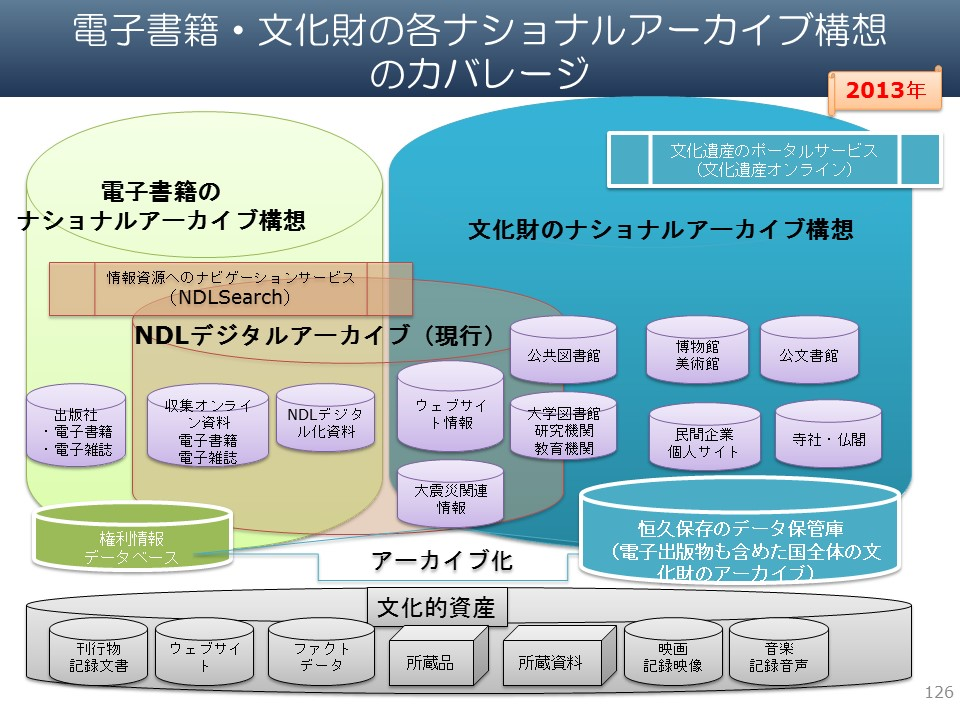
- 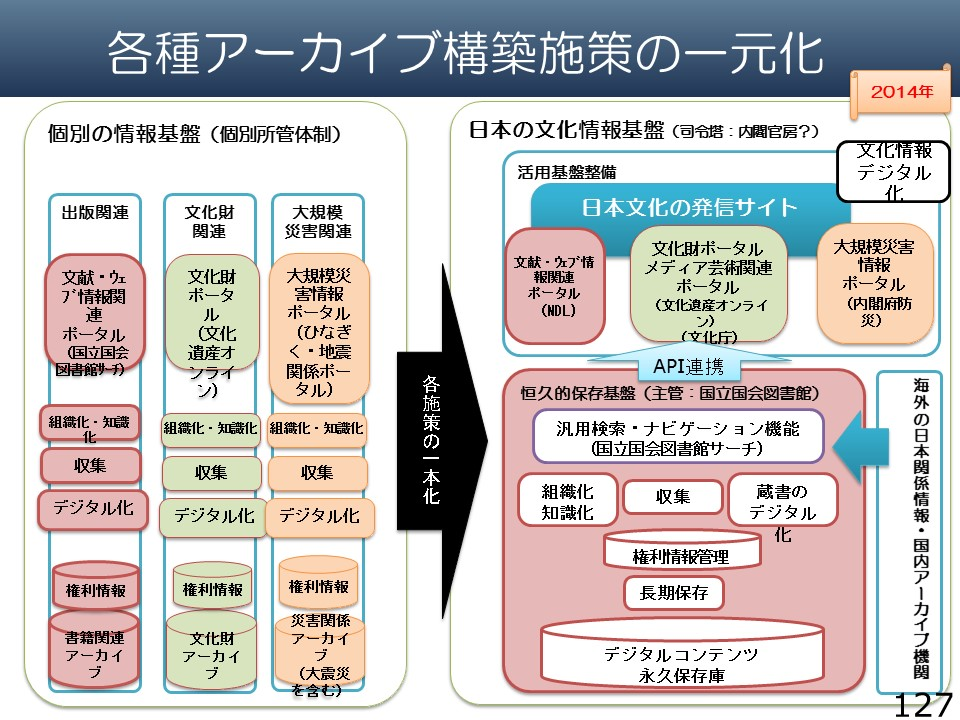
- 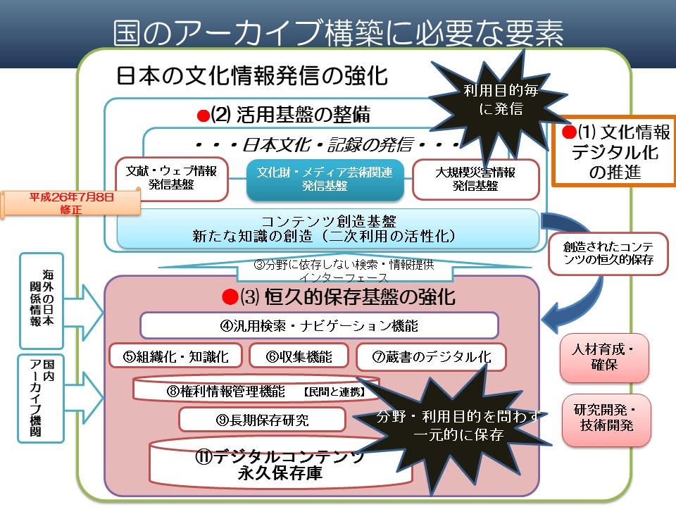
- 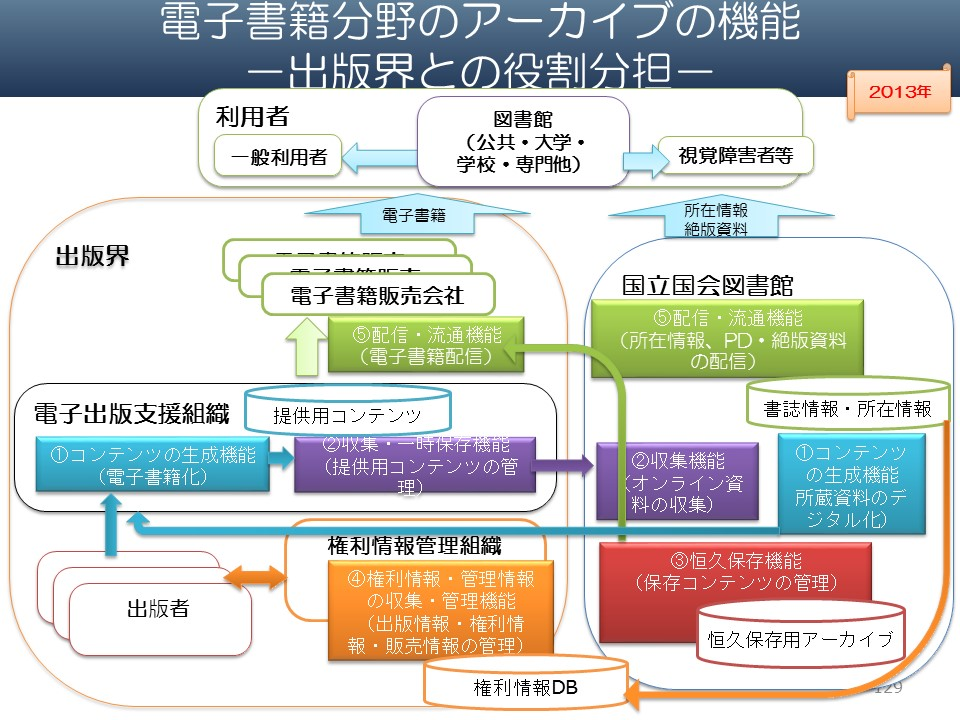
- 図２
- 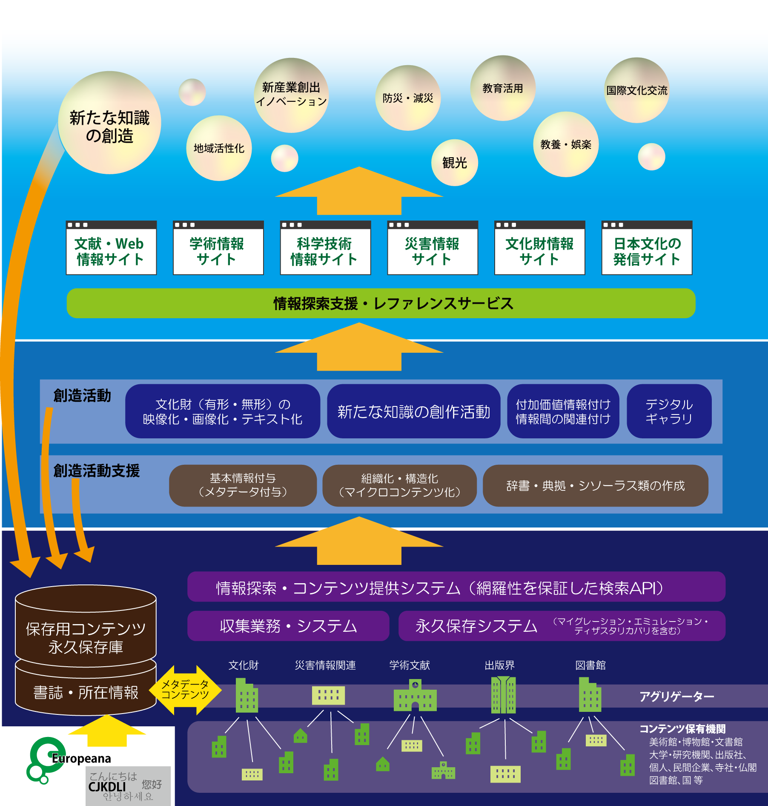
- 説明
- 「資料・情報を文化資産として収集・保存する」ということは、図書館が対象としてきた、従来からの出版物に相当する情報の範囲だけではなく、美術館、博物館、文書館等が保有する無形・有形の文化財をデジタル化した情報を含め、インターネット上で流通している著作物全てを文化資産としてアーカイブすることです。
文化資産のナショナルアーカイブの構築と運用にあたっては、制度的な課題解決のために、アーカイブ基本法の法制化、推進体制作りなどが議論されています。また、具体的なサービスシステムの仕組みとして、技術的課題のための研究開発が進んでいます。
そのような状況を踏まえて、私見として、国のデジタル文化資産のアーカイブに必要なサービスシステムのフレームワークと主な役割を想定すると、次のとおりです。
- 必要な機能の想定
- 恒久的保存基盤、コンテンツ創造基盤、情報発信基盤、運用基盤
- 恒久的保存基盤
- 図
- 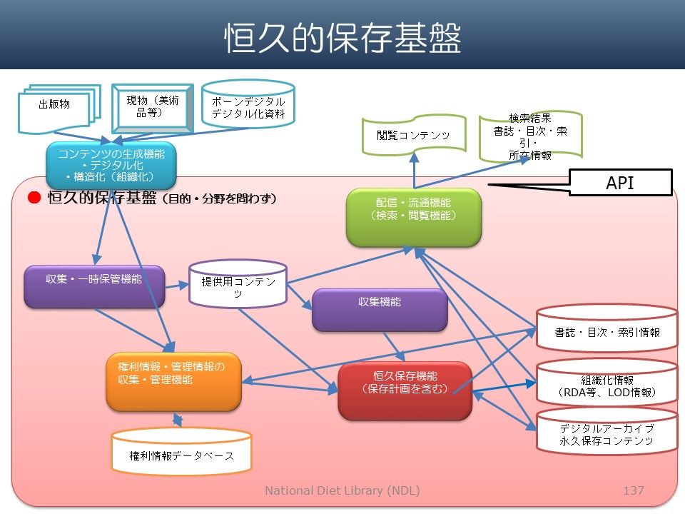
- 説明
- １つの機関にすべてを集約するのではなく、各分野のアーカイブを集約する拠点が中核となって分散アーカイブを構築し、各機関の情報を相互に持ち合って、将来にわたって利用を保障する仕組みです。
その分散アーカイブを集合して、あたかも１つのアーカイブとして見えるようにし、個々の情報同士を意味的に関連づけて、情報間のネットワークを構築することを想定します。
このようにネットワーク化された情報に対して、本文の全文検索、あいまい検索、シソーラス検索などを組み合わせた検索で情報を取り出すだけでなく、取り出された情報から芋づる式に関連する情報を取り出せるようにします。
 恒久的保存基盤での考慮点（骨子）（2012年）
恒久的保存基盤での考慮点（骨子）（2012年）- 収集の観点
- 説明
- 4.1 「インターネット資料」の許諾に基づく収集
- ウェブサイトでは日々刻々と新しい情報が発信され，同時に消されていく．時に，機関・組織の改廃・合併により，サイトそのものが消失する．消されていく情報には，後世に残すべき文化的資産も多く含まれ，印刷出版物の形態を取っていないいわゆるボーンデジタルのものもある．NDLでは，2002年から，各機関の協力のもと，個別の許諾に基づいて，ウェブサイトを収集し，時間軸で再現できるように保存している．
- 4.2 公的機関の「インターネット資料」の制度的収集
- 2009年7月に国立国会図書館法と著作権法が改正され，国，地方公共団体，国立大学等の公的機関が発信するインターネット資料について，個別著作権者の許諾なく収集できるようになった． この法改正に基づき，NDLは，2010年4月から，公的機関のウェブサイトの網羅的な収集を開始した．公的機関の協力により，順調に収集が行われている．なお，国公立大学の機関リポジトリ等は，早期に消失されることなく保存・提供が保証されていると看做されるので，当面は制度的収集対象とはせは行わず，国立国会図書館サーチで，資料の所在場所にナビゲートして，閲覧利用を保証している．
- 4.3 民間の「オンライン資料」の制度的収集
- 電子書籍，電子雑誌など従来の図書，雑誌に相当しネットワーク上を流通する電子情報を「オンライン資料」と定義している．2012年6月に，国立国会図書館法と著作権法が改正され，オンライン資料の収集が許諾なしにできるようになった．この法律は，2013年71月に施行される．しかしながら，有償で提供されているオンライン資料に関しては，条件の整備等，時間を要するため，当分の間，無償で提供され，閲覧制限機能が実装されていないものを収集することとし，2013年7月からの収集に向けて，運用の検討準備を行っている．これにより，無償の電子書籍，電子雑誌は，ネットワーク上から消えていっても，将来に亘って利用が可能になる．
- 今までの収集の経緯
- 「インターネット資料」の許諾に基づく収集
- 公的機関の「インターネット資料」の制度的収集
- 民間の「オンライン資料」の制度的収集
- 無償
- 有償
- 保存の観点
- 説明
- 5.1所蔵資料のデジタル化
- NDLが収集保存している印刷出版物は，経年劣化が進むとともに，閲覧・複写提供により劣化が加速される．原本保存のために，2009年に著作権法が改正され，著作権者の許諾を得ないで所蔵資料をデジタル化することが認められた． 2009年度補正予算で，NDL所蔵資料のデジタル化経費として約127億円が計上され，大規模にデジタル化を実施した．このデジタル化で，NDLでは、約150億円NDLで、和図書約90万冊（1968年以前刊行分），和雑誌約114万冊（2000年受入分まで），博士論文約14万冊（1991年度～2000年度受入分）等、所蔵資料の1/4程度はをデジタル化できたが，残りもしたが、引き続きデジタル化を進めていく必要がある．．しかしながら，国の予算が厳しい状況において，今後も継続的に大量のデジタル化を行うための予算確保には課題がある目途は立っていない．
- 公共図書館への限定送信
- こちらが３つ目のエポック、先の第１８０回国会で成立した、改正著作権法です。 平成２１年改正で新設された、３１条２項の後ろに、さらに第３項を新規に追加するものです。 読み上げますと、 「国立国会図書館は、絶版等資料に係る著作物について、図書館等において公衆に提示することを目的とする場合には、前項の規定により記録媒体に記録された当該著作物の複製物を用いて自動公衆送信を行うことができる。この場合において、当該図書館等においては、その営利を目的としない事業として、当該図書館等の利用者の求めに応じ、その調査研究の用に供するために、自動公衆送信される当該著作物の一部分の複製物を作成し、当該複製物を一人につき一部提供することができる。」 （著作権法第31条第3項の新設） となっており、平成２５年１月の施行となっております。
- この改正のポイントは３つあります。まず、対象機関が著作権法第３１条でいう「図書館等」に限定されていること、それから、対象資料が「絶版等資料」に限定されていること、さらに、利用方法は、各図書館での閲覧、複写であることです。
- 送信対象機関の限定
- 著作権法第31条第1項の適用がある図書館等施設 公共図書館 大学図書館、高等専門学校、防衛大学校・海上保安大学校等の図書館 議会図書室、国公立美術館・博物館、国公立調査研究機関等 文化庁長官指定：商工会議所、経団連、科学技術振興機構、国際交流基金等
- 送信対象資料の限定
- 「絶版その他これに準ずる理由により一般に入手することが困難な図書館資料」（著作権法第31条第1項第3号） ＝市場に流通在庫がなく、商業的に電子配信されていない等、一般的に図書館等において購入が困難な出版物 資料種別：図書、雑誌、博士論文 →在庫情報DBを活用し送信対象資料を限定
- 5.2文化的資産の保存
- NDLが収集したパッケージ系電子出版物，インターネット資料，もしくはデジタル化した電子情報も，国の知識・文化の基盤となる資料・情報であり，データを失うことはあってはならない．
- 電子書庫としてのストレージは，東日本大震災アーカイブのためのものも含めると， 現在においても2PB（ペタバイト）の容量となる．今後，更に増加する電子情報の利用を保証するためには，大きく2つの観点がある．一つは，物理的に読めなくならないように保存（物理保存）すること，もう一つは，ファイルの内容が読めなくならないように保存（論理保存）することでに留意する必要がある．
- 物理保存について，現時点において半永久的に保存できる記録媒体は実用化されていないので，膨大なデータを物理的に読めるようにしていく仕組みの確立が課題である．現在， GlusterFSというシステムの適用を試行している．これは，寿命が5～10年で数TB（テラバイト）程度の容量の磁気ディスクを備えたPCを並列に配置したスケーラブル拡張容易な大容量分散ファイルシステムで，順次容量の大きな磁気ディスクに置き換えことで，少しずつ媒体変換を進め，かつ，必要な容量を確保できる仕組みである．また，このシステムにより，大規模災害に備えたディザスタ・リカバリー対策として，複数の分散したセンターで同期する仕組みの実装も想定している．近い将来には，クラウドサービスを活用し、複数の民間クラウドサービスを組み合わせて，相互に同期させることで災害時も含めたデータの保存を図ることも想定する．
- 論理保存については、ITの発展とともに，様々な国際標準，業界標準のフォーマット仕様を適用した電子情報が存在するが，将来に亘って読めるようにすることは大きな課題である．
- この問題は，保存の使命を持つNDLだけでは解決が不可能である．新しい媒体，フォーマット仕様を開発してきた技術者・研究者の方々，国際標準・業界標準を策定してきた機関，その仕様を適用したアプリケーションやコンテンツを開発，販売してきた企業などの協力が不可欠である．，様々な関係者がに対して，現在の利用者のみならず，文化的資産として後世においても利用できるようにするためにされることを想定して，仕様の共通化，マイグレーション等へのに協力を働き掛けていきたいして取り組んでいただきたい．
- 資料保存、デジタルコンテンツの保存の取組み
- 資料保存
- 原資料の保全のためにデジタル化し、閲覧・複写はデジタルコンテンツを
- 資料デジタル化作業
- デジタルコンテンツの保存
- 種別
- パッケージ系電子出版物
- CD、DVD、BluRay、その他媒体
- デジタル化資料
- 提供用画像
- 保存用画像
- インターネット資料
- ウェブサイト
- インターネット上の著作物
- 要素
- コンテンツ、メタデータ、メディア（媒体、キャリア）
- 技術
- ファイルフォーマット、ファイルシステム、ストレージ、OS、ハードウェア
- 劣化／旧式化に対応する戦略・計画、技術動向の監視
- 運用
- ディザスタリカバリ
- 利用の保障
- 記録媒体が破損していないこと
- マイグレーション
- 再生できる環境としての
OS、再生ソフト、ハードがあること- エミュレーション
- 長期保存・利用に適した記録
- 記録媒体、フォーマット仕様
- メタデータ仕様
- 長期利用を保障するためのシステム
- OAISに準拠したシステム
- 長期利用を保障するための施策・制度
- OAIS参照モデルの各機能要件
- 受入
- 保存用ストレージ
- データ管理
- 管理・運営
- 保存計画
- アクセス
- システム
- デジタル化
- ウェブアーカイブ
- 差分収集・直接閲覧システム
- 海外の動向（海外の取組）
- 保存全般
- NDIIPP
- DPC
- DuraCloud
- LCのPreservation Week
- コスト研究プロジェクト
- 長期保存のための評価ツール
- DRAMBORA
- 保存技術への期待
- 長期保存用媒体
- 半永久に読める媒体
- 現在の媒体
- 光ディスク20～30年、ハードディスク5年、フラッシュメモリー10年程度
 より大容量で、長期間監視不要な記録媒体が必要
より大容量で、長期間監視不要な記録媒体が必要- スケーラビリティの確保
- 必要に応じて追加できるストレージ
- フォーマット仕様の長期保証
再生技術情報の管理- 国際標準、業界標準として普及した媒体、フォーマットは業界としてマイグレーションを保障すること
- フォーマットレジストリ
- フォーマット識別ツール
- ビックデータを扱うデータベースシステム
- 並列分散処理を用いた高速処理
- GlusterFS
- Hadoop
- ICT技術によって、過去、現在の電子資料を、後世に伝えていくための研究を活性化してほしい
- 注目している技術
- 長期保存のクラウドサービス
- DuraCloud
- 東日本大震災アーカイブの構築
- 基本的な方針に沿った施策
- 新たな視点
- ビックデータの活用
- Twitterでのリアルタイムな情報
- カーナビなどでの通行記録
- 組織化の観点
- 説明
- 6.1 組織化の意義
- 組織化とは，利用者が迅速，的確かつ容易に検索できるように，メタデータ（書誌データを含む）を付与して整理することである．
- 一つの著作物が，単行本として出版され，のちに文庫本となり，また様々な形態の電子書籍として，派生して流通しているが．体系的に整理されたメタデータが付与されていると，利用者属性（知識レベル，嗜好等），利用環境（PC，モバイル，アクセス場所等）を考慮して，コンテンツを的確に選択できるようにすることが容易になる．
- 外形的な情報によるメタデータのみならず，セマンティックウェブ技術等を駆使して本文テキスト等からの組織化も行う技術（例えばセマンティックウェブ技術等）を駆使することによりえると，より利便性の高い検索サービスが実現できる．
- 6.2 組織化の連携協力
- 図書・雑誌の出版者，博物館，文書館，図書館等のいわゆるMLA機関，その他著作物を提供する全ての機関が，語彙の違いを吸収できる共通のメタデータ記述規則を適用し，意味的に関連付けられることが重要である．関係機関で協力してメタデータの相互交換の仕組みを構築する必要がある．
- また，爆発的に増加する電子情報には、従来の印刷刊行物のように人海戦術的な精緻なメタデータの付与は困難である．自動的にメタデータを付与する技術，本文情報も含めて組織化する技術等，大量のデータを構造化・意味的情報を取り出す技術（例えばデータマイニング技術等）するための研究開発とその成果の実用化が期待されている．
- ビックデータの扱い
- 増え続ける巨大容量の非定型データ
- ウェブページ、ウェブ上の著作物
- ファクトデータ
- 機械が作りだすデータ
- ログ解析技術
- ビックデータ活用によるロングテール情報の活用の促進
- 価値の創造
- オープンガバメント
- 政府が保有するデータの公開
- Linked Open Data(LOD)
- ウェブ技術を利用して公開しているデータをつなげる仕組み
ウェブ空間を巨大なデータベースとして利用できるようにする
- 信頼の基盤
- 図書館の専門家による書誌作成の限界
- 出版情報の活用
- JPOの近刊情報
- ユーザ作成情報の活用
- ユーザによる主題書誌作成、典拠情報の更新
- ソーシャルタギング
- Wikipediaの活用
- LOD
- 業務・業態を越えたアーカイブのコンテンツの関連付け
- 提供の観点
- 説明
- 分散アーカイブの一元的な提供
- NDLサーチでは，メタデータの交換用の共通的な通信規約を実装したデジタルアーカイブとのメタデータ連携による統合検索を進めてきたが、今後は、複数の分散アーカイブで保存している電子情報そのものの交換のため通信規約の共通化も必要である．また、様々な分野で多種多様な電子情報を扱うアーカイブが多くなることを想定し，膨大な電子情報の内容で有機的に連携して、効率的、効果的に活用するための連携技術の普及も期待している．
- 当館保有のデジタル化コンテンツの利用
（利活用の促進）- 基本は、紙資料と同様に、館内閲覧、印刷は可能
- 第三者の権利を侵害しないコンテンツは、非排他的に二次利用を許諾する
- 二次利用によるビジネスを支援
- 視覚障害者向けのデジタルコンテンツ配信
- DAISY化（全文テキスト読上げ）
- 連携の観点
- 説明
- NDLは，関係機関との連携により、国としての資料・情報を収集・組織化しを、より大きなビッグデータとして利活用できることを目指していく．
- 今後、様々な業種・業態で情報を発信者している機関同士，それらの情報を発信している機関と情報の利用者同士，また、膨大な情報を高度に処理・活用するための研究開発・技術開発を行っている組織同士を繋ぐ役割を果たしたいと考えている．
- 繋ぐに当たっては， 関係機関間の利害調整ではなく，未来志向でより創造性を持って，資料・情報の権利保持者の権利を尊重し、将来的な利活用の拡大を目指して，共存共栄で協力・分担して進めることが大切である．
- サービスのマッシュアップ
- 保存と提供の網羅性の確保
- 書誌作成、デジタル化作業の重複排除
- マーケット拡大
- コンテンツに触れる機会の拡大
- 利用者ニーズに即した一次情報へのナビゲーション
- 迅速、低廉、、、
- アーカイブシステムの構築に関する技術移転による構築コストの削減と、商用との共通仕様の適用による利便性の確保
- 出版社との連携
- 説明
- 電子書籍は，印刷出版物の延長にあるものであり、文化的資産の１つの形態である．
- 現在，電子書籍出版は，ビジネスとして立ち上がろうとしている．NDLは，電子書籍によって読者人口が増えて，出版全体の市場が拡大し，出版ビジネスが加速されるように支援するとともに，電子書籍をの将来に亘るって利用を保証することが役割と考える．そのためにも，民間の市場経済活動を阻害することなく，市場拡大のために，出版界と下記のような様々な連携協力を検討しているが今後の課題である．
- ・NDLデジタル化コンテンツの二次利用の促進
- 国のオープンガバナンスの方向性に沿って，NDL保有の資産で，第三者の権利を侵害しないものは，積極的に二次利用を促進させたい．電子書籍出版社に，画像データをとして提供し，二次利用によって，電子書籍を作成してビジネスが行えるように支援することも想定する
- ・電子書籍サイト等，商用サイトへの案内の強化
- NDLサーチは，紙・デジタル，有償・無償，商用サイト・公的機関等に関わらず，ロングテールで容易に資料の存在を確認することを目的としている．利用者が最も迅速に入手し閲覧可能な入手先へ利用者をナビゲートすることが目的である．NDLは今後利用者の資料の有力な入手手段となる電子書籍サイト等への案内を強化することを想定している．
- ・電子書籍ビジネスのプラットフォーム整備への協力
- NDLが構築しているデジタルアーカイブ機能とポータル機能は，スケーラブルな書籍データベース及び配信サービスシステムであり，検索及び閲覧のAPIを公開している．今後ソフトウェア資産もオープンプラットフォームとして公開することにより，他の公的機関サイト，商用サイトでも適用もしくは連携が容易になる．
- ・電子書籍フォーマットの共通化
- 現在の電子書籍フォーマットは多種多様であり，かつ，電子出版サイト毎にビューアが異なる状態である．これは，電子書籍の流通の拡大，NDL等による長期保存の観点からみると障害になっている．電子書籍フォーマットの国際標準，業界標準の策定を支援して，共通フォーマットの普及を促進させたい．
- ・電子書籍に対する永続的識別子の付与
- 出版に先立って販売促進のために作られた出版前情報，出版情報は，NDLで蔵書として管理するための書誌情報には活用されておらず，また関連付けもされていない．出版情報はONIXで，書誌情報はMARCで，電子情報はDCベースでというように，書誌的事項の記述規則も共通化されず，再利用もされていないため，検索時に同一のものと認識することも困難な状態になっている．
- 著者が作品を作成した時点で，永続的識別子を付与し，販売のために作成された出版情報と，図書館での書誌情報をリンクさせる形で相互連携できるようにしていきたい．また，実際に永続的識別子を付与する手段として，JaLCを活用したDOI付与も想定している．
- ・公共図書館での利用環境の共通化
- 今後，電子書籍が，公共図書館等でも電子書籍サイトからそれぞれのビューアを利用する形で提供されることが予想される．NDLからの提供は，別の著作権保護方式で別のビューアを利用する形では，利用者にとって利便性が悪い．電子書籍サイトとNDLとで，共通の著作権保護機能とビューアで提供できるように，公共図書館での電子書籍閲覧環境，コンテンツ配信システムの共通化を図っていくことが，市場の拡大に繋がると考える．
- ・著作権管理センターの構築・運用の協力
- 今後、NDLでの資料のデジタル化状況，出版社でまだ電子書籍化されていない資料の著作権状況など，出版界とNDLで協力して，著作権管理データベースを構築すべきと考える．
- 当館の役割
- 知的情報資源の利活用の促進
- 有用な情報資源の存在を広め、資料、文献等の読者層を拡大する
- 知的情報資源の将来に亘っての利用を保障
- 資料、文献以外の多種多様な情報資源、データを分担して保存
- マーケットの拡大
- 電子書籍ビジネスのプラットフォーム整備に協力。
（データベース構築、配信サービス構築）
それを以て、市場の拡大を図る- 民間の市場経済活動を阻害することのないように
- EPUB等の電子書籍の共通仕様化の支援
- EPUBのISO化に協力
（固定レイアウト＋リフロー）
- 電子書籍に対する永続的識別子の付与環境整備の支援
- JaLCの活用
- 著作権保護機能の選定及び実装の協力
- 公共図書館での電子書籍利用環境の構築の協力
- コンテンツ配信システムの共同構築
- 閲覧環境の共通化
- 著作権管理センターの構築・運用の協力
- 既デジタル化資料リスト
- 入手困難な資料リスト
- デジタル化候補資料の著作権状況
- デジタル化資料の印税分配管理
- NDLSearchでの商用サイトへの案内の強化
- 利用者が最も迅速に入手し閲覧可能なサイトへナビゲート
紙・デジタル、有償・無償、商用サイト・図書館等に関わらず、利用者が入手先を選択できるように
 当館保有のデジタル化コンテンツを
当館保有のデジタル化コンテンツを
電子書籍の素材データとして提供- 第三者の権利を侵害しないコンテンツは、非排他的に二次利用を許諾する
- 二次利用によるビジネスを支援
- 公共図書館への配信
- 目的
- ロングテールでの利用者の利便性確保
- 検討
- 当館デジタル化コンテンツで市場での入手困難な資料の提供と、商用電子書籍サービスの利用環境（端末、ビューア、DRM仕様）の共通化ができないか
- EPUB等での配信時のDRM仕様
- デジタル化候補資料・入手困難な資料の調査
- 目的
- 情報収集、維持の効率化
- 検討
- 出版デジタル機構で行うデジタル化候補資料台帳および文化庁等で行う著作物の権利管理DBの共同構築はできないか
- 出版前情報、出版情報の活用
- 目的
- 読書市場の拡大による販売促進
- 図書館での書誌データの作成の効率化
- 検討
- 出版前情報の継続的利用の可能性
- 出版前情報のIDの永続的識別子化
- ONIXとMARC及びDCとの相互連携
- 記述規則の共通化
- 情報のフィードバック
- 学術関係との連携
- 電子情報資源の確保
- メタデータのオープン化と相互運用性の確保
- 統合的な発見環境とシステム基盤の整備
- 新たな取り組み
- 8.1 東日本大震災アーカイブ
- 東日本大震災アーカイブは，大震災に関連する，災害現象そのもの、災害前・災害直後・復興の過程，災害時の対応，他地域・次世代への教訓等を記録として網羅的に収集し，後世に残すものである．大震災の記録は，従来からの収集対象である印刷刊行物に留まらず，ビラ類、写真，動画，音声はもとより観測記録等、多種多様である．また，記録を保有している機関も様々であり，早期に収集保存に着手しなければ，散逸の恐れがある．記録を保有もしくは集約している関係府省、博物館・美術館、図書館、文書館、企業及び先行して震災アーカイブを構築・運営している組織と協力して、分担網羅的な収集し一元的なアクセスを保証したいと保存を進めたい．
- 大震災アーカイブポータルに関しては，既存のデジタルアーカイブシステムをベースに，分散アーカイブを構築し，また，統合的に利用できるポータルを構築している．また，見せ方も記録の日時，場所も意識した閲覧機能の実装を目指している．
- 8.2 知の共有化に向けた連携
- 国の第4期科学技術基本計画で示された「知識インフラ」は，知の共有化を目指す分野を問わないモデルであり，2012年1月にリニューアルしたサービス・システムの延長線上にあるものである．
- 東日本大震災アーカイブは，コンテンツ，システムともに，分野を特定した「知識インフラ」の実現形であり，既存のサービスをベースに，必要な機能を実装する．このアプローチは，国の施策としての「ビッグデータの利活用」「知の共有化」に繋がる．
- コンテンツ創造基盤
- 図
- 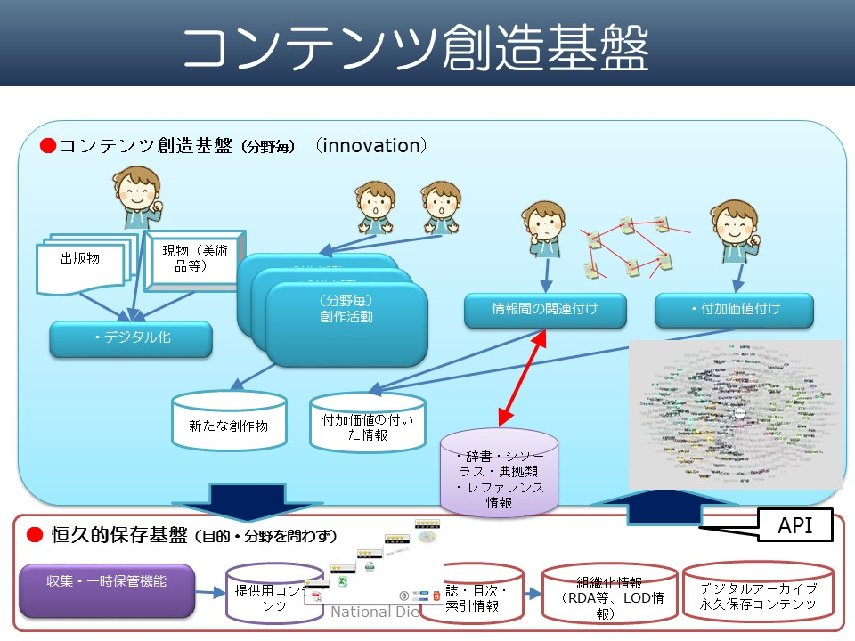
- 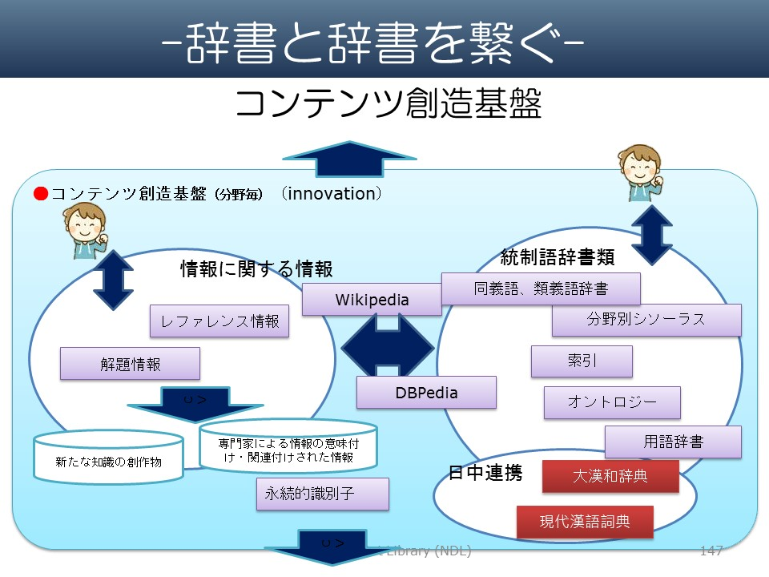
- 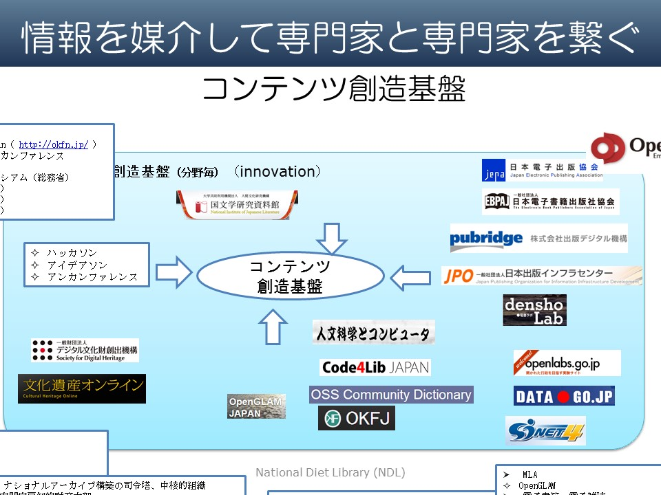
- 説明
- 創造活動を支援する基盤です。情報全体の基本情報としてのメタデータを付与する活動、記事、章節項、文節等の単位で組織化・構造化する活動、情報間を意味的に関連づけるための基本情報としての用語辞書、典拠、シソーラス辞書等を作成する活動を想定します。
関連づけて利用できる情報の幅が広がるため、より高度な創造性が期待できます。
また、歴史的な文化財や現代文化を映像化、画像化、テキスト化する活動、構造化された情報に解題情報等を付与する活動、情報間を意味的に関連づける活動、テーマを設定してデジタルギャラリを構築する活動等が含まれます。
ここで生成された情報は、新たな知識として恒久的保存基盤に蓄積されていきます。
- 役割
- 専門家による情報の意味付け・関連付け
- 新たな知識の創作活動
- 調査・研究活動
- 研究開発・技術開発
- 文献デジタルギャラリ・レファレンスDB・各種刊行物
- ウェブサイト（WayBack）
- 情報発信基盤
- 図
- 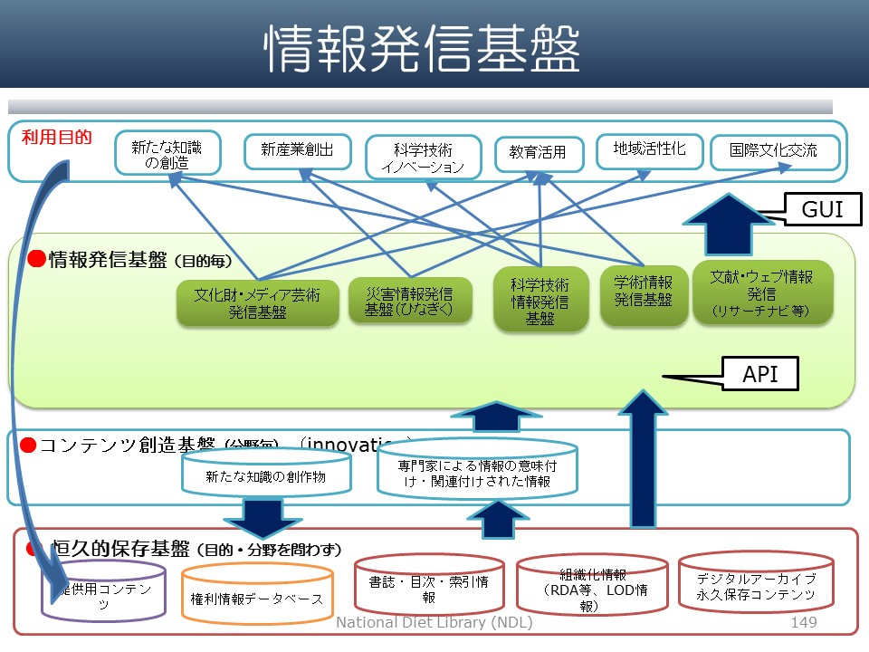
- 説明
- 様々な利用者ごとの目的に応じて、恒久的保存基盤に格納された一次情報、コンテンツ創造基盤で創出された二次的情報を有機的に組み合わせて、利用できるようにする基盤です。
網羅的な情報から、利用目的に応じてあらかじめ適切に絞り込み、利用者の属性、スキル、利用場所に応じて、様々な画面インターフェースを用意して、利用者が必要とする情報、参考となる関連する情報を容易に得られるようにするものです。レファレンスサービスによる情報探索支援、オンラインレファレンスなども含まれます。
- 目的別発信
- 新たな知識の創造
- 新産業創出
- 科学技術イノベーション
- 教育活用
- 地域活性化
- 国際文化交流
- 日本の文化の発信
- おもてなしの精神、
- 和を尊ぶ平和の思想、
- 人と環境に優しい最先端技術、
- 大震災から立ち上がる不屈の精神、
- 長寿を誇る健康社会、
- バリアフリーの行き届いた都市のあるべき姿、
- そして我々が大切にするマナーや礼節など
- 運用基盤
- 説明
- ナショナルアーカイブ事業の推進のために、関係府省の協力のもと、中核的な役割を担う組織を設置して、全体の戦略企画、デジタル情報の保存や利活用のための研究開発、アーカイブに所蔵された資料に関する知識とIT技術の知識等も備えた高度な専門的人材の育成、孤児著作物の権利処理、絶版作品も含めた権利情報DBの構築促進等のための方策を導き出し、解決を図っていく必要があります。
- 知識インフラの構築を目指して
- 図
- 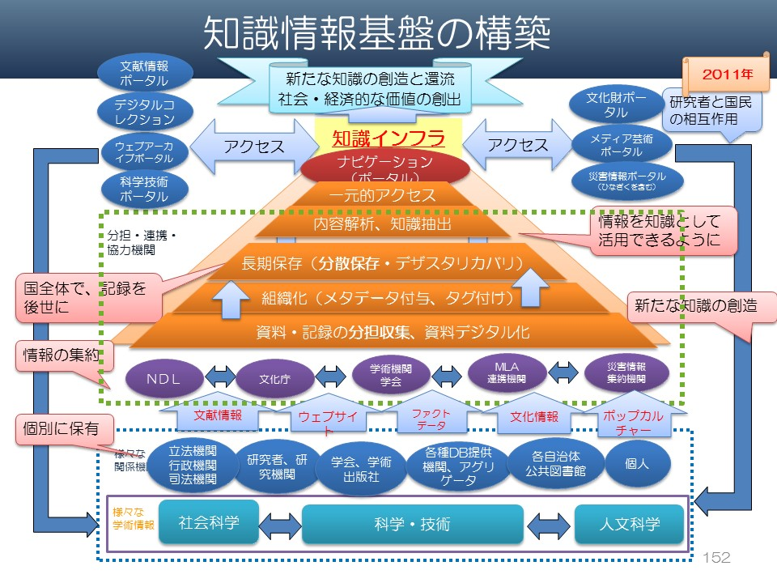
- 知識インフラの実現形としてのナショナルアーカイブ
- ナショナルアーカイブで何をできるようにするか
- 情報を探し出す作業の効率化・質の向上
- 網羅的な情報から、利用者の属性、スキル、利用場所に応じた的確な情報を絞り込んで提示
- 対話及びあいまいな条件による本文情報への的確なナビゲーション
- 情報を探し出せるようにするための作業の効率化・質の向上
- 主題分類単位の検索で網羅性を確保
- 専門家、図書館員等のノウハウの形式知化・DB化
- 可能な限り自動化
- メタデータ付与、組織化、構造化、本文情報間の関連付け
- 新たな知識創造のコミュニティを構築
- 人と情報の関係、情報と情報の関係をリンクさせ、人と人を関連付け
- ナショナルアーカイブで何が変わるか
- 新しい発想により、様々なイノベーションが期待できる
- 有用な情報が網羅的に関連付けられて利用可能になることにより、今までは困難であった新しいサービスやビジネスが生み出される可能性がある
- 国民による創造的な活動の促進
- 情報を探すための工数を、創造的な活動に時間に振り向けることができる
- 利用可能な限られた情報に基づいた研究が、網羅性の高い情報が利用可能になることにより、より高度な研究へシフト
- 情報に紐づいた人同士のコミュニティにより創造活動が活性化する
- 実現に向けたアプローチ
- デジタル文化資産推進議員連盟主催「勉強会」（2015年10月15日〜）
- サブトピック 1
- 「世界における文化情報戦略と日本の現状一国家戦略としての文化情報政策推進に向けて―」
- 「デジタル文化資産振興法」立法化に向けた法整備
- デジタルアーカイブ振興法（提案）
①アーカイブ振興基本計画(2020年、2000万点)
②全国のデジタルアーカイブのネットワーク化と統一
ゲートウェイ化⇒ナショナルアーカイブ
③デジタル化ラボ、字幕化ラボの設置
④各国アーカイブとの相互接続
⇒アジアの文化・技術・経済交流のハブに
⑤公的資金で制作・収集された情報資産のデジタル
公開を義務化・利用ルールの公開化
⑥デジタルアーキビストの育成と、関連技術開発
⑦孤児作品や絶版作品のデジタル活用促進
- 「アーカイブサミット2015」（2015年1月26日）
- アーカイブ立国宣言
- 特別報告「京都における検討状況」（長尾先生）
（2016年5月21日第1回東京文化資源区シンポジウム）- 2020年東京オリンピック・パラリンピックに向けての日本文化の発信（2014年2月オリンピックと文化懇談会）提言内容
- 有形文化財の鑑賞とともに無形文化財を体験し理解させる
- 京都の自然を楽しませる
- 京都の現在のユニークな文化、マンガ、アニメなどを発信する、学習させる
- 情報技術を駆使して京都の魅力を紹介する情報データベースと映像アーカイブスなどを2018年までに作り、京都の魅力を世界に伝える
- 京都府・市の検討の柱
- 京都の文化地域観光
- 京都の無形文化財の見学・体験学習
- 学生の日本文化教育
- 安心・安全な環境ができるための情報システムの構築
- この機会に推進すべきインフラ整備
- ・・・・
- 神社、仏閣、観光地、その他が作っている案内情報を集め、データベース化して、オープンな利用に供する
- デジタルアーカイブズと文化資源センターの設立が必要
- 関西の文化資源のアーカイブズの構築
- 文化資源の保存・修復とデジタル化のセンサーを作る
- このセンターを関西の中心である関西文化学研都市の「けいはんなオープンイノベーションセンター」に置く
- 国で検討されている「国立デジタル文化情報保存センター」と連携する
- 東京文化資源区構想
- ものづくりとアート：知識が出会う新たな場（場所、機会、電子空間）の創造
- 民官産学を横断した交流・創造体験による地域創造人材の養成
- 地域の伝統的・歴史的知識資源を蓄積するアーカイブの構築と活用
- 域内建造物等歴史・文化資源の保全と再活用
- 公開アーバンラボの設置による、アート×産業×コミュニティを可能にするインキュベーション拠点づくり
- それらの前提となる域内文化資源の洗い出し・見える化
- 現状認識と、今後の図書館の活動の方向性
- 2020年を目途に実現を目指すサービスイメージ
- ナショナルアーカイブ構築の推進役
- ナショナルアーカイブを構成する分散アーカイブの中核的な機関
- あらゆる情報へのアクセスを保証する中核的なハブ
- 統合的オンラインサービス（アクセス場所毎に最適化）
- 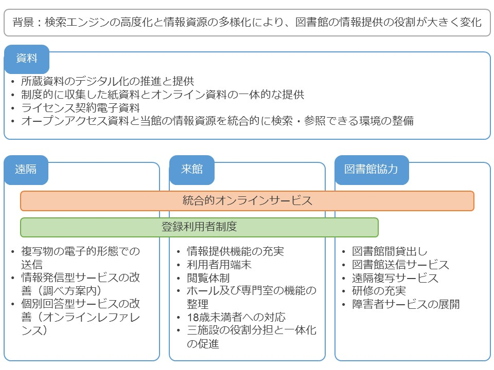
- 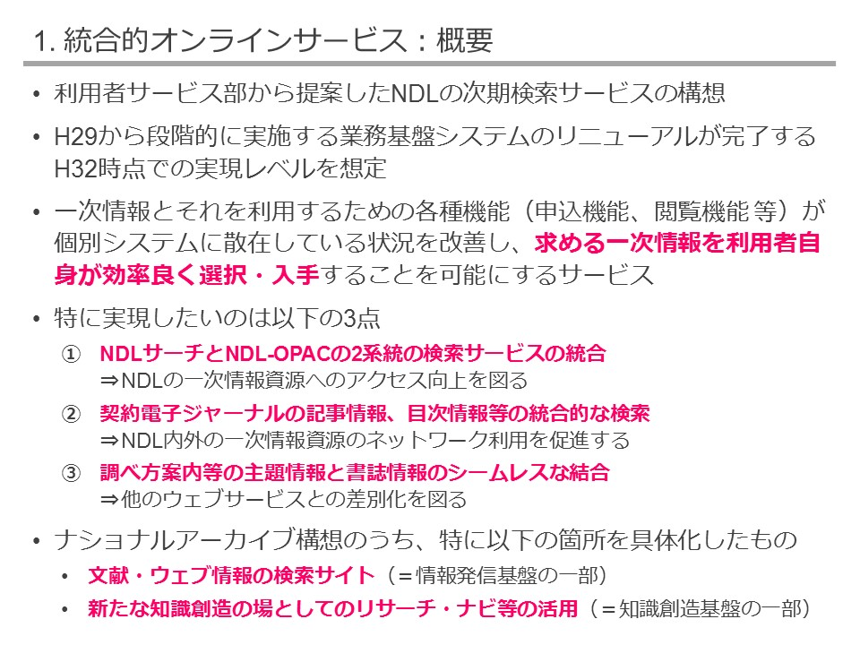
- 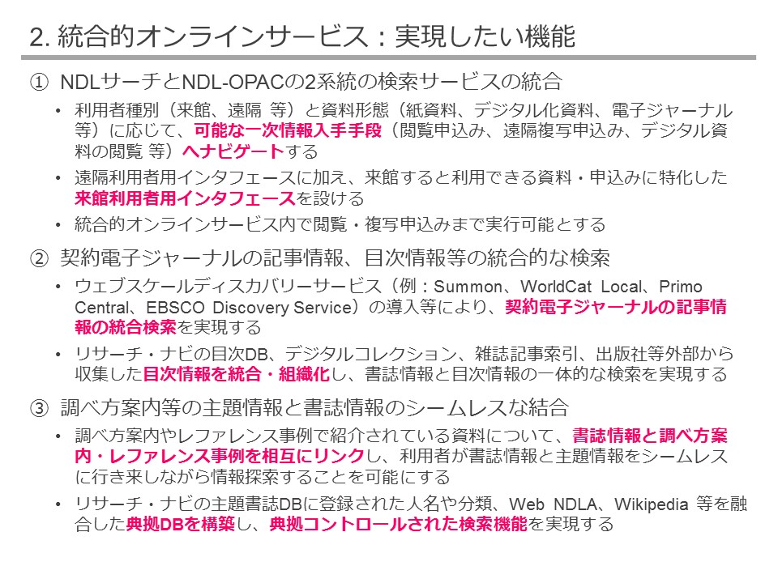
- 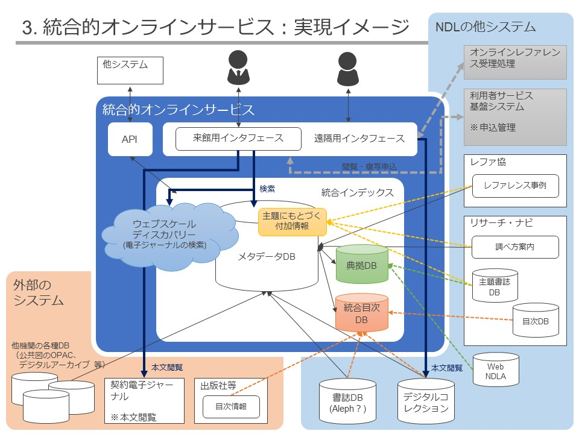
- 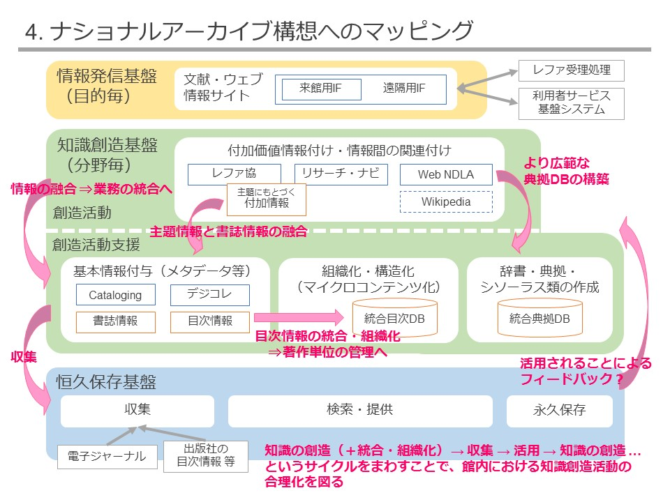
- 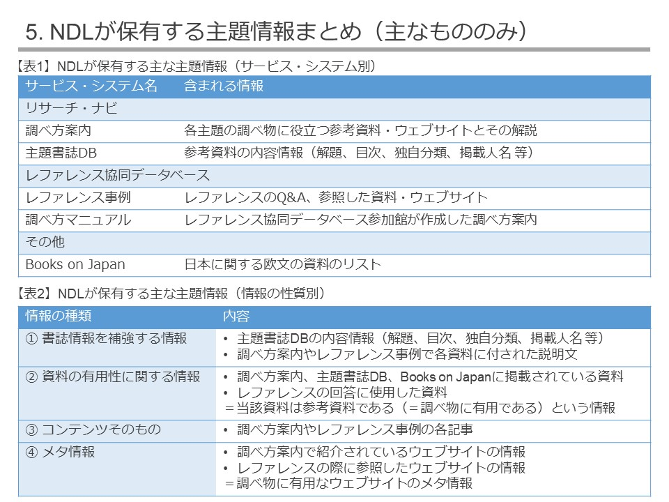
- 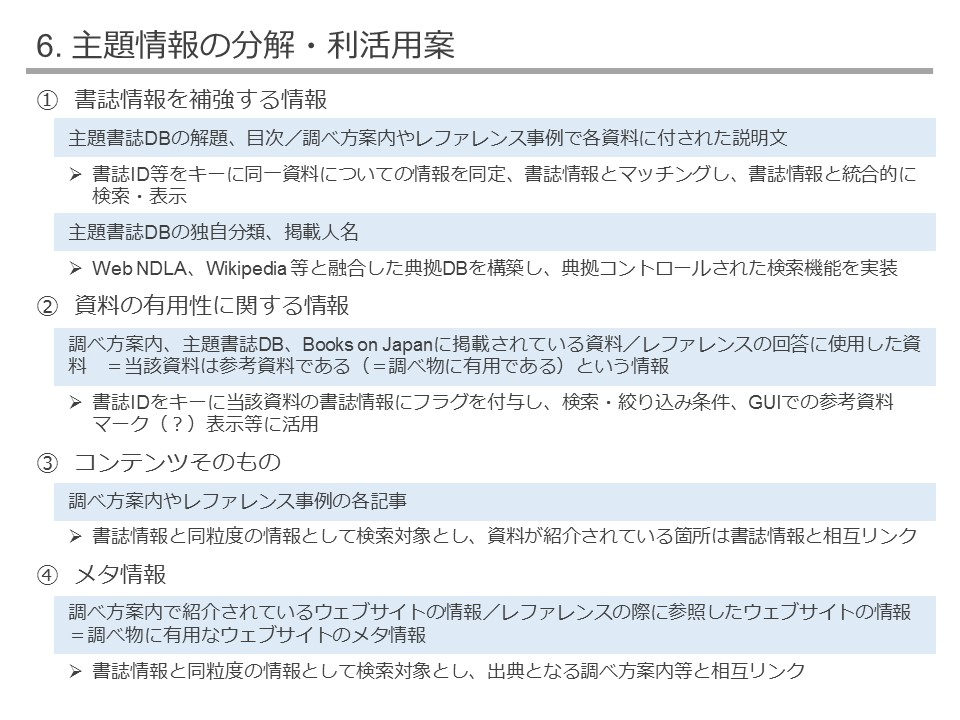
- 知識創造のための場の提供
- イメージ図
- 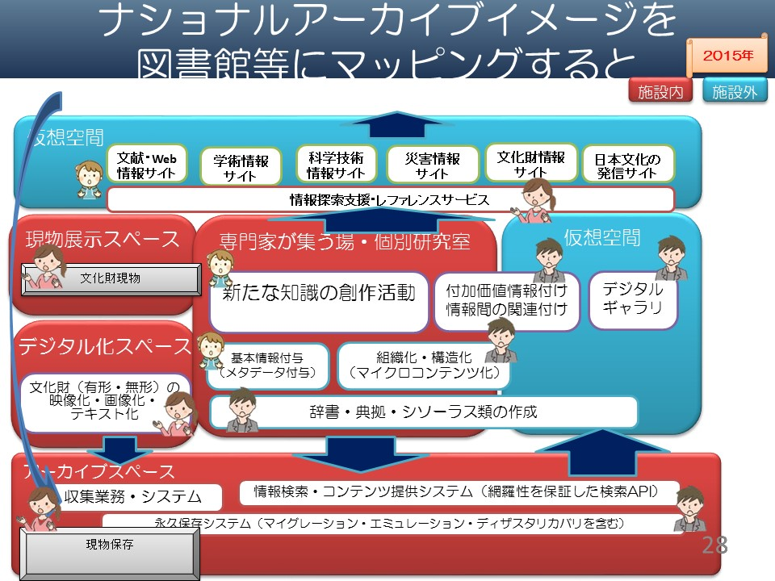
- 壁のない図書館
- 図書館の枠を越えて、文献情報の枠を越えて、
- 所蔵場所、媒体の形態を問わず、情報の網羅性・完全性を確保
- いつでも、だれでも、どこにいても、閲覧可
- 商用と無償の電子書籍が一体になった電子図書館サービス
- 知識創造の場
- 物理的空間で集う場
- 異文化交流・出会い・議論の場
- 出版者（著作者）と読者を繋ぐ場
- グループによる学習ができる公共の場
- 協調学習のリーダーとなりうる専門知識を持った人材の配置が必要
- 仮想空間での共同作業の場
- クラウドソーシングの場の提供
- 情報（発信）提供の場
- 文献の提供から、あらゆる情報の提供へ
- 知識探索・閲覧サービス（利用者の目的、レベル、利用環境に応じてきめ細かく）
- 情報探索支援から、課題回答そのものへのナビゲーション
- 仮想空間
- あらゆる情報を探索（検索・閲覧）
- あらゆる情報の閲覧
- テーマにより企画されたデジタルギャラリ
- デジタル化されていない資料の遠隔複写申込み
- オンラインレファレンス
- 物理的空間
- 博物館的展示スペース（現物を閲覧・鑑賞する場）
- 外部公開できないデジタル情報の閲覧・複写申込み
- 恒久的保存設備
- 拠点に分散したアーカイブで構成
- ディザスタリカバリ―
- あらゆる情報資源の集約と意味的関連付け
- 分散した組織が保有する情報を、情報内の記述個所が意味的に関連付けられた知識データベースを構築
- 説明
- NDLは、2012年に策定した「私たちの使命・目標2012-2016」の中で、「印刷出版物にとどまらず、電子的に流通する情報を含め、様々な資料・情報を文化的資産として収集し、保存します。」としています。
NDLは、唯一の国立図書館として、国内出版物の納本制度、公的機関のインターネット資料（ウェブサイト情報）の制度収集、民間のオンライン資料（電子書籍・電子雑誌に相当する情報）の制度収集、保存のためのデジタル化等、法律により「権限」が与えられ、確実な収集・保存・提供の実施の「責任と義務」を負っており、その責任と義務は、可能な範囲で行えばいいということではありません。しかし、物としての紙媒体の出版物については、公共図書館が保有する地域資料、美術館、博物館、文書館が保有する典籍資料をはじめとして、全てを収集できているわけではなく、また、電子書籍・電子雑誌に相当する情報は、セルフパブリッシングも含めて指数関数的に増加しており、ウェブサイト全体を丸ごとアーカイブするインターネット資料収集事業（WARP）においても、もはや全てを１つの組織で収集・保存すること自体が不可能です。
NDLが主体的にアーカイブするとともに他の機関の情報を併せて利活用できるようにしてきた範囲は、ヒト・モノ・カネの資源の制約により「選択的」にならざるを得ませんでしたが、国全体で、文化資産のアーカイブの網羅性を確保できるようにするためには、アーカイブの共通基盤の仕様等を提示し、他の機関に対して、その適用と分担の「協力」を求めることが重要です。
その概念は、パイロット電子図書館プロジェクトに始まって、「電子図書館中期計画2004」に基づいて進めてきたアーカイブ構築の考え方そのものです。「ひなぎく」で進めてきたあらゆる記録・記憶を保存する役割の発展系として、ナショナルアーカイブを推進することが、国民の期待に応える活動であり、NDLの使命・目標を達成することとなると思われます。
- 未来の図書館実現の進捗状況と今後のアクション（0.5）
- 目指すべきとされたこと
- 進捗状況
- 実現に向けた今後のアクション
- リンクドオープンデータ化
- レジメ
- 媒体から抜け出して、知識要素として分解
- 識別子の付与
- 活用したい情報
- 出版情報
- 実例、アイデアソン、ハッカソン、関係機関の動き
- 大向先生
 図書館における情報システム
図書館における情報システム- 図書館システム，情報システムの意義
- 効率的に目的地に着いて、目的地で仕事を成し遂げる
- 図書館サービスも情報処理サービスの一つ。図書館サービスも社会の情報処理サービスに後れを取らないように。できれば、情報探索行動の中で最も有用なサービスの１つであってほしい。
- サブトピック
- 利用者と司書のコラボ
- サブトピック
- 利用者の目的に応じて
- サブトピック
- NDLだけではだめ、政府情報、郷土資料、論文、民間情報、個人サイト情報、、、
- サブトピック
- 参考図書、SNS情報、、
- サブトピック
- 調べ方案内情報（調べ方も一定の手順がある）
- サブトピック
- 司書の助言
- サブトピック
- 図書館情報システム
- サブトピック
- 図書・雑誌、電子書籍・電子雑誌、デジタル化文化財、、、
- ウェブ情報、観測データ
- サブトピック
- 著作物単位書誌、全文インデックス
- サブトピック
- 本文構造化、情報間の関連付け
- サブトピック
- 書誌DB、デジタルアーカイブ、
ナレッジDB
- サブトピック
- 最適解を提示する情報探索システム
人の判断により再検索するシステム
- 可能な限り網羅的な情報を収集し、その情報を活用して、目的を達成することを支援
- 図書館は、新たな知識を創造するための手段の提供
- 新たな知識を創造することが目的
- 情報探索は手段
- 情報探索システムは、情報の活用を支援
- 人は、情報活用に時間をかけず、目的とする創造活動に専念できるように
- 図書館サービスにおける情報システムの役割
- 業務種別
- 情報収集
- 情報分析
- 付加価値情報付け
- 保存
- 提供
- 知識創造活動
- システムの役割
- 定型的な業務
- 大量のデータ収集・分析・蓄積
- 最適な解を提供する業務
- 経営判断の分析情報を提示する業務
- 人の役割
- システムを使って業務運用
- 利用者と一緒に課題解決
- システムで予測できない事象への判断（アルゴリズムが明確でない勘によるもの）
- 自分のスキルでなく、足りない部分は、積極的に他サービス、他者と協働で
- 創造力を駆使した創作活動
- 他者と協働し、新しい価値を創造
- ナレッジデータベース化
- 知識、ノウハウ等の暗黙知を形式知化
- システム構築・運用
- 業務・サービスを実現するシステム開発（業務知識が必要）
- 人とシステムの協業
- 人の調べ方、ノウハウ等の暗黙知を活用した収集・組織化・付加価値付け
- ノウハウ等の暗黙知の形式知化
- 調べ方をプログラムロジックに変換してプログラミング
- プログラムを組み合わせてシステム化
- システムを利用して、人が有用な情報を選別
- 選別された情報を活用して、創作活動
- コンピュータには決して代替できない創造力とコミュニケーション力
- サブトピック
- 図書館サービスにおける情報処理技術と、他の情報関連の情報処理技術との違いは？
- 有用な情報提供機関として、図書館はOne of Them
- 情報活用技術は、図書館外のほうが進んでいる
- 図書館としてのコアコンピタンスは？
- 考察
- 情報探索行動
- 情報探索を支援する図書館情報学の専門家の役割は？
- 知識創造活動
- 新たな知識の創造そのものの活動に、情報システムは何ができるか
- 創造活動を行う人工知能
- 電子情報部の発足
- NDLでは、以上のような次世代に向けた電子情報に関する事業を効率的、効果的に実施するために、2011年10月に電子情報部を設置した。
- 設立趣旨は、NDL全体の電子情報、情報システムの企画立案が効率的に行えるようにして、統合的に情報システム基盤の構築・運用を図る。分散して行っていたシステム関連業務を一元的に行い、現行システム・サービスを効率的に再構築・運用する。将来的な展望を持って、トータルな図書館システムを実現し、図書館の枠を超えて利用者サービスを向上させる。
- 2012月1月の業務・システムのリニューアルの次の目標は、知識インフラの構築であり、国立図書館として、知識情報資源のアーカイブ基盤の構築やデジタルコンテンツの利用促進等の情報流通基盤の整備を推進し、次世代の図書館サービスを提供することである。
- これらの実現に向けて、先進サービス動向、技術を把握してサービス要件、システム化要件を取りまとめ、構築・運用するために高いマネジメント能力を持った人材育成・確保を進める。それに伴い、外部の有識者の実践的な助言・提案をいただくために、有識者が集まれる場として、前掲のNDLラボの運営を想定している。そこでのテーマは多岐にわたる。たとえば、技術要素では、パターンマッチング、パターン認識、マルチメディア技術、画像、映像処理技術、クラスタリング、キーワード抽出、シソーラス、テキストマイニング、関連性検出、文章解析、対話システム、情報圧縮・要約技術、情報分析技術、機械翻訳技術等がある。
- 従来からの開発プロセス
- システム企画
- ◆ソフトウェアライフサ
- ◆システム化計画イクル
- ◆要件定義
- ◆調達
- 業務プロセスとモデル化
- ◆業務プロセス
- ◆モデル化の手法
- システム開発手法
- ◆システム開発手法
- ウォーターフォールモデル
- プロトタイプモデル：
- スパイラルモデル
- テスト手法
- ◆テストの目的・工程
- ◆各テスト工程とテスト手法
- ITサービスマネジメント・プロジェクトマネジメント
- ◆ITIL（Information Technology Infrastructure Library）
- ◆SLA（Service Level Agreement）
- ◆プロジェクトの定義
- ◆プロジェクトマネジメント
- 要件定義の必要性と人材育成（IT研修内容）
- 6.1.要件定義の必要性
- 6.2.最適化計画の考え方
- 基本の計画
「科学技術基本政策策定の基本方針」として、平成22年6月総合科学技術会議基本政策専門調査会で、国の第4期科学技術基本計画（23年8月閣議決定）に知識インフラ関連の言及を入れてもらうために作られたイメージ図。（当時の科経の本吉課長） - 当館の電子図書館中期計画2004、科審での知識インフラの構築、使命・目標で示される当館のデジタル関連の事業の目指すものは大きく変わっていない
- これの実現を目指すサービスの実現のために業務・システムを組み立てているところ
- この概念は、大きな枠組みの中では、当館は情報を集約して提供する組織のOneOfThem。しかしながら、大量の資料を保有しているが故に、分散保存、ポータルとして、中核的な役割を果たすことが求められている。
- 6.3. 情報化のプロセスと考慮点
（サービス構築の流れに沿って）（流れ図参照）- 1.1. 情報化のプロセスと考慮点（サービス構築の流れに沿って）（流れ図参照）
- 電子情報部を設置する時に、各部局との役割分担を共有するために作成したもの。特にサービス要件定義の担当と、成果物の名称を示した。最適化計画本体にも記述されている。
- (1) 「私たちの使命・目標」、年度活動計画
- l あるべき姿の検討、サービスの理念、活動の方向性、サービスの項目と概念、スケジュール感
- (2) 基本計画書、サービス実施計画書
- l 使命・目標の達成のアプローチとして、サービスの提供の方向性、具体的なサービス、システムのイメージの想定
- Ø 何をしたいか？（サービス部門）
- Ø 何ができるか？（システム部門）
- l カバレージとして、フロントエンドは利用者へのサービス、バックオフィスも職員へのサービス
- (3) サービス要件定義書
- l サービスは、業務とシステムで構築
- l 業務とシステムで連携・分担して、フロントエンドサービス、バックオフィス業務として何ができるようにするかを明確にする。
- l 主たるサービス要件より、サービスの実現当たって例外的に行うべき要件の明示が重要（後述）
- (4) システム構築
- 資料招請（RFI）
- 要求要件書を実現するために
- 利用可能な製品および技術資料
- 実現の方法論
- l システム化要件定義書
- Ø 業務・機能要件定義、非機能要件定義
- Ø 開発プロジェクト標準、技術標準適用指針、技術標準適用ガイドラインに沿って
- 意見招請（RFC）
- 調達仕様書原案提示
- 概算見積書受領
- l 調達仕様書（RFP）
- Ø 価格競争の場合は、実施すべき事項を明確に提示し、実施内容が業者によってブレないようにして、安い方を落札。
- Ø 仕様が明確に提示できない場合は、実施内容、方式を提案させる形での総合評価での競争にし、必須項目でも、優れた実施内容、将来への拡張性の配慮の内容には大きく加点する。
- 調達の中立性
- 定型業務は必須項目
- 定型業務は例外処理を含めて明確に
- 先進サービスは加点項目
- 方法論を規程せず、提案に任せる
- 将来への考慮
- どのように将来性を担保するか具体的に明示させる
- l 見積もり依頼書
- Ø 予算、実施内容を決定するに当たって重要な書類
- Ø 必要スキル、工数が算定できるレベルの仕様書の提示が必要
- 調達
- 提案書受領
- ヒアリング
- 評価
- 応札
- 業者決定
- l 契約書
- Ø 総合評価での契約書に添付される仕様書は、提案書相当。
- Ø 提案書の内容をベースに検査仕様書を作成し、成果物の検収は、提案書の内容が実現しているかを検査する
- l システム設計書
- Ø 開発担当者に向けた資料。
- ² サービス要件に従ってシステムで実現することが明確になっている調達仕様書通り作られていれば、ユーザ部門は読む必要がない。
- Ø 調達仕様書、提案書通り、設計がなされないで、開発を行うと大きな手戻りが発生する
- 開発
- l システム運用手順書（マニュアル）
- Ø 開発時に、ほとんどゼロ知識でもできるレベルを求める
- (5) システム運用
- (6) 業務構築
- l 業務要件定義書
- l 業務手順書（マニュアル）
- (7) 業務運用
- (8) 制度構築（制度に関しても同様）
- l 制度設計
- 6.5.要件定義の重要性と考慮点
- (1)重要性は、ソフトウェア開発に限らない
- 組織間、部局課係間、担当者間での曖昧な内容での指示は、作業スキル、必要工数の算定で大きな齟齬が発生し、安全を見込むと大きな見積もりとなり、また、過小評価すると、後で大きな工数を要する。
- (2)サービス要件の定義は、基本計画書の行間を埋めるもの
- 使命・目標は概念であり、基本方針・基本計画書は、利害調整で玉虫色になっていることが多い。
- 合意形成のために、意識的に、サービスの実施内容が曖昧になっている
- 概念・方向性は認識できるが具体的なサービスの実施内容が判断できない
- 基本方針、基本計画の策定において検討したメモ、カットされた記述が重要。それがベースとなって、明確な要件となる。
- (3)開発に大きな工数が掛かるのは、例外処理の規模と将来への拡張性への配慮（例外要件の網羅性の確保）
- 例外的なサービスは条件と実施内容を明確に提示
- 例外的なサービスの内容が明確でないと、認識の齟齬により次工程でもめる
- (4)サービス要件定義段階での合意形成が最も重要
- 後工程でシステムの根幹に関わる変更は不可能
- (5)業務、システムの構築は、論理的に明確なサービスの要件がなければ構築できない
- 曖昧なまま、業務構築、システム開発を行った場合、過大な見積もり、大きな手戻りが発生する
- 齟齬の顕在化が後工程になればなるほど、工数が大きくなる
- サービス部門とシステム部門で暗黙知でなく、形式知化した形で合意しておく必要がある⇒サービス要件定義書
- サービスの実施内容があいまいなまま、業務構築、システム開発を行った場合
- システム化要件定義書が曖昧になる
開発規模感が掴めない - 調達仕様書が曖昧になる
開発者は安全を見込み、見積もり額が大幅に大きくなる
開発工程で手戻りが発生する
納品されて検収する際に、必ずもめる
仕様書は担当者のスキルレベルに依存しないように明確に - やるべきことを明確に（曖昧性の排除）
論理的な思考で、条件と内容を明確に。曖昧な文章表現ではなく、箇条書きで、判断要素は断定的な記述に
- (6)業務とシステムでの分担は明確に
- システムでできないことの許容
経営資源、適用可能な技術の面から、システムで実現可能な範囲が小さく、業務で行わなければならないことの負荷を許容できるかは大きな要件 - 業務とシステムの分担は図式化して共有
ユースケース図（人とシステムの役割）
- (7)情報（データ）と機能の流れは明確に
- 機能情報関連図（DFD図：情報と機能の流れ（サブシステムレベル））、実体関連図（ER図）等で
- (8)サービス要件は、開発過程、検証中に、なんらかの変更があることを前提とする
- 事前に変更の可能性がある部分は明示が必要。
- 変更による後工程への影響を極力小さくするためにも、早期発見が必要。
- ⇒開発前に要件が明確にならない部分は、プロトタイピング手法が有効
- (9)サービス要件定義には、全体最適化の観点でシステムサイドからの助言が必要
- サービス部門が主体となってサービス要件定義書を策定するが、サービス要件にサービスの方法、手順が示されていても、それに捉われず、目的を確認して、全体最適化の観点で、より最適な方法がある場合は、システム構築の立場から、助言する
- 6.6.各工程での成果物の妥当性評価
- (10)全ての工程での仕様書について
- サービス要件定義書、システム化要件定義書、調達仕様書、開発段階での仕様書、作業指示書等、全ての工程で、作業依頼書として、人から人へ伝えていくもの。成果物は、次のステップの作業依頼書となる。依頼書が曖昧であれば、成果物のレベル、内容もぶれる。
- 打合せ等で、意見でなく質問が出されるのは、ドキュメントが曖昧だから。全てが妥当な内容であるか評価が必要。
- (11)曖昧性・不確実性の排除
- 「仕様素案」、「基本設計書」、「概要設計書」、「詳細設計書」、、、
- プロセスと成果物の具体化度を明確にしないで、成果物名のみの提示は齟齬が生じる
- 企画提案以外で、「柔軟に対応できること」「原則として～する」「～する場合もある。」はNG
- 図表を駆使することも明確化に繋がる
- (12)読むべき人が理解できるか？
- その仕様書をインプットとして、暗黙知なしで、難易度の認識、実施内容、妥当な工数見積もりできるかを評価
- (13)将来のコストを削減するか、当面のコストを削減するか？も重要な観点
- コストが高くても将来性、柔軟性のある方法
- コストが安いが、当面の課題は解決できるか。
- 6.7.参考見積書の評価
- 曖昧な仕様書では安全係数が大きくなり、高額な見積もりになる
- 業者の高額な参考見積もりを鵜呑みにして安易な要件緩和やスペックダウンはしない
- 提案もしくは指示した実施方法が明確な場合は、具体的な作業と要する工数を評価する
- 評価に当たっては、ある程度の実地の経験は必要
- 競争入札になれば、適正な価格に近づく。随意契約の場合は、妥当と思われるまで調整する必要がある
- 「人件費単価が高いから見積もりが高くなる」という評価は正しくない。
- スキルの高い人が担当するので単価が高いなら、工数は少なくなるはず。
- 6.9.まとめ
- 情報システムの今後の役割
- 今までは、人海戦術的業務の効率化の手段
- 情報システムは、今までは、人海戦術的な業務を情報システムに置き換えることによって、図書館サービスの高度化、業務・サービスの運営の効率化・コスト削減のための手段として活用してきました。政府における「電子政府構築計画」も同様です。
- 今までは、図書館としての人海戦術的サービスをシステムに置き換えることによる業務・サービスの運営の効率化・コスト削減のための手段
- 組織経営戦略の迅速化とサービスの向上を目指して
- 図書館における情報システムは、業務・システムの効率化に留まらず、今後は、社会環境変化への対応および業務プロセス改革を迅速に行い、社会的な存立意義を維持向上できるようにするために、経営戦略とIT戦略を密に連携・融合させ、最大限の効果を発揮させる業務・サービスを構築することが重要です。
- 電子情報の特性を生かしたサービスの構築
- 今後は、電子情報の特性（共有・連携のしやすさ、検索の高度化、情報移動の容易さ等々）を生かしたデジタル情報時代の電子図書館サービスの構築を目指す
- 今後適用すべき技術・ツールは
- 変化への対応の迅速化
- 業務実施状況の迅速な数値化、可視化により、経営の強化、業務の最適化、変化への対応を速やかに行えるようにする
- 民間企業で積極的に導入されている組織の持つ様々な資源(人材、資金、設備、資材、情報など)を統合的に管理・配分し、業務の効率化や経営の全体最適を目指す手法を支援するツール（ERP）
- ビジネスプロセスを可視化しプロセスの分析、業務改善検討、モニタリングを行うことを通じて、継続的にビジネスプロセスの改革を推進するマネジメントツール（BPM：Business Process Management）の導入など
- 今後適用すべき手法・ツールは
- 企業の持つ様々な資源(人材、資金、設備、資材、情報など)を統合的に管理・配分し、業務の効率化や経営の全体最適を目指す手法を支援するツール（ERP）
- ビジネスプロセスを可視化し、プロセスの分析、業務改善検討、モニタリングを行うことを通じて、継続的にビジネスプロセスの改革を推進するマネジメントツール（BPM：Business Process Management）
- 業務実施状況の数値化、可視化により、経営の強化、業務の最適化、変化への迅速な対応を可能にする
- BPRやシステム構築を行うため、誰でも理解できる図表を段階的に作成可能で、構想初期段階から全体設計ができる（合意形成プロセスの効率化、手戻りの回避）
構
- サービスシステムとして、知識インフラとしてのデジタルアーカイブの構築、デジタルコンテンツの生成を行うための先進技術の適用
- 人とシステムの役割分担
- 政府のガイドライン、iコンピテンシ・ディクショナリを活用したアーカイブ機関の人材育成
- 政府情報システムの整備及び管理 に関する標準ガイドライン
- 見直し
- 政府における業務システム最適化のガイドラインの見直し
- 新たなガイドライン
- 政府情報システムの整備及び管理 に関する標準ガイドライン
（2014年12月3日 各府省情報化統括責任者（CIO）連絡会議決定） - iコンピテンシ・ディクショナリ
- 新時代のビジネスモデルに求められるタスクやスキル、役割分担例
- （2015年夏 情報処理振興機構 正式版公開予定）
- （業務・システム最適化の見直し）
政府情報システムの整備及び管理に関する標準ガイドラインの目的- 見直しの背景
- 過去の取組の経緯もあってIT投資の目的が情報システムのコスト削減に傾注する傾向（行政手続のオンライン化ではそもそも手段であるべきIT投資が目的化するような状況）にあり、
- 本来重視すべき国民の利便性向上や行政運営の効率化への波及効果が目に見える形で現れず、これに伴い、利用者視点での取組や業務の見直しが不十分な状況
- 国民の利便性向上
- 既存のサービスの利便性の向上
- 利便性の高い新たなサービスの提供
- 行政運営の効率化
- 事務処理経費の削減が目的化している
- システム開発も経費として扱われ、X年でXX％削減と目標設定されている。
本来は、先行投資であり、システム開発を効率化させて、浮いた予算で新たなサービスをシステム化するもの。
-
- 世界最先端ＩＴ国家創造宣言（平成25年６月閣議決定、平成26年６月改定）に基づき、情報システム調達 やプロジェクト管理に関する共通ルール等を定める「政府情報システムの整備及び管理に関する標準ガ イドライン」を新たに策定
- 平成 23(2011)年８月の「電子行政推進に関する基本方針」（ＩＴ戦略本部1決定）
- ①行政サービスの利便性の 向上とは、
- インターネット上でのワンストップ行政サービス等オンライン申請等による国 民・利用者の利便性向上であり、
- ②行政運営の効率化とは、
- 単に既存業務をそのままシス テム化するのではなく、システム化を前提に業務プロセスそのものの見直しを行い業務改 革（ＢＰＲ：Business Process Re-engineering（ビジネスプロセス・リエンジニアリング）） を進め、
- 各府省の共通業務に関するシステムの統合・集約化やＩＴ投資の適化、費用対 効果の大化を実現するものであり、
- ③行政運営の透明性の向上は、
- インターネット上で の情報公開及び提供により、国民の行政に対する信頼向上に資するとともに、
- 国民による 政策の検証、さらにはパブリックコメント等に代表される政策決定過程への参加を可能と するものである。
- 人材の育成・確保の留意点
- 例えば、プロジェクトの核となる職員が、プロジェクトのライフサイクルの適切な節目までそのポストに留まるように、人事ローテーションの工夫
- 単に情報システムに関する専門的・技術的な知識・能力だけでなく、業務分析、業務の見直しの企画立案、プロジェクト管理等の能力の取得が重要
- 各人が不足する技能や経験をそれぞれで補い合いながら、個別の職務に当たらせるような工夫が必要
- 国際的な情報共有や情報セキュリティ等の連携による対応の重要性が増している分野については、国際的な対応が可能な人材の育成・確保も視野に
- 業務の実施には、情報システムを活用してデータの作成や活用ができることが不可欠であることや、近年情報セキュリティについて様々な問題が生じている現状からすれば、
情報システムに携わる職員に限らず、一般職員のＩＴリテラシーの向上にも努めることが重要
- サービスの基本計画から実施までの流れ
- 業務の見直し
- プロジェクト計画書等の確認
- 分析等
- １） 業務分析
- 2) 関係者分析
- 3) 実績分析
- 4) 環境分析
- 5) 関連調査
- 業務の見直し内容の検討
- １） 主要課題の整理
- 2) 具体的な業務の見直し内容
- 3) 期待される効果
- 業務要件の定義
- 業務実施手順
- 管理すべき指標
- 情報システム化の範囲
- 情報セキュリティ
- 要件定義作業
- 要件定義の準備
- １） 要件定義の対象範囲等の特定
- ２） ＲＦＩの実施
- ○ 業務要件を実現するために必要な情報システムの機能（以下「機能要件」という。）の案の実現性、
- ○ 実現方法、
- ○ 情報システムが備えるべき機能要件以外の情報システム要件（以下「非機能要件」という。）、
- ○ それらの要件を実現するために必要な経費の見込み、
- ○ 明らかにすべきと考える要件定義事項又は開発方式（スクラッチ開発、ソフトウェア製品の活用、政府共通プラットフォームを含むクラウドコンピューティングサービスの活用等）、
- ○ 開発手法（ウォータフォール型、反復型等）等、
- ○ 事業者に具体的に求めたい内容
- ３） 事業者へのヒアリング等の実施
- ４） 必要な資料の作成
- 要件定義
- 要件定義書の記載内容
- 業務要件
- 機能要件
- 機能、画面、帳票、情報・データ、外部インタフェース
- 非機能要件
- ユーザビリティ・アクセシビリティ、システム方式、規模、性能、信頼性、拡張性、上位互換、中立性、継続性、情報セキュリティ、稼働環境、テスト、以降、引き継ぎ、教育、運用、保守等
- 要件定義書の調整・作成
- プロジェクト計画書への反映
- 調達の計画
- 履行可能性、ライフサイクルコスト、技術的妥当性等を考慮の上、競争性が確保されコストが低減されるよう合理的な調達単位を検討する
- 基本単位
- ①調査研究又は要件定義作成支援
- ② プロジェクト管理支援
- ③ 設計・開発
- （設計・開発の内容が細分化できる場合であっても、
- 必ずしも調達単位を分割する必要はない。）
- ④ ハードウェアの賃貸借又は買取り
- ⑤ ソフトウェア製品の賃貸借又は買取り
- ⑥ 回線
- ⑦ アプリケーションプログラムの保守
- ⑧ ハードウェアの保守
- ⑨ ソフトウェア製品の保守
- ⑩ 運用
- ⑪ 運用サポート業務
- ⑫ 業務運用支援
- ⑬ 施設の賃貸借
- ⑭ 施設の整備等
- ⑮ システム監査（情報セキュリティ監査を含む。）
- 調達仕様書の記載内容
- ア 調達案件の概要に関する事項
- イ 調達案件及び関連調達案件の調達単位、調達の方式等に関する事項
- ウ 作業の実施内容に関する事項
- エ 満たすべき要件に関する事項
- オ 作業の実施体制・方法に関する事項
- カ 作業の実施に当たっての遵守事項
- キ 成果物の取扱いに関する事項
- ク 入札参加資格に関する事項（入札参加要件、入札制限）
- ケ 再委託に関する事項
- コ その他の特記事項
- サ 附属文書
- 調達
- 要件定義書（案）、調達仕様書（案）の作成
- RFI
- 調達仕様書確定
- RFP・公告
- 審査
- 入開札
- 契約
- 検収
- 設計・開発実施要領の内容
- ア コミュニケーション管理
- イ 体制管理
- ウ 工程管理
- エ 品質管理
- オ リスク管理
- カ 課題管理
- キ システム構成管理
- ク 変更管理
- ケ 情報セキュリティ対策
- 設計・開発
- 設計・開発実施計画書等の作成
- 設計・開発工程に入る前の要件定義の内容の調整・確定
- 設計
- １） 要件定義の内容との整合性確認
- ２） 関係機関、情報システムの利用者等との調整
- ３） 移行計画書の案の作成
- ４） 中長期運用・保守作業計画の案の作成
- ５） 運用計画及び保守作業計画の案の作成
- ６） 運用体制等
- 開発・テスト
- １） テスト計画書の作成
- ２） 単体テスト
- ３） 結合テスト・総合テスト
- ４） テスト手順・データの再利用対策
- 受入テストの実施
- １） 受入テストのテスト計画書の作成
- ２） 受入テスト
- 情報システムの本番移行
- 引き継ぎ
- 検査・納品管理
- iコンピテンシ・ディレクトリ
-
- 2012年3月に公開された「共通キャリア・スキルフレームワーク（第一版・追補版）」（以下、CCSF（追補版））の発展形
- ITプロフェッショナルの育成に取り組む企業が、それぞれのニーズや目的に合わせてITスキル標準（以下、ITSS）、情報システムユーザースキル標準（以下、UISS）および組込み技術者スキル標準（以下、ETSS）（以下、3つのスキル標準を総称してスキル標準と表記）を柔軟に組み合わせて活用できるように
- タスク、人材、スキルを軸に整理・体系化したものである。
- これにより、スキル標準ごとの構造の違いを意識せず、企業が自社に必要なタスク、スキルを参照して、「ビジネス目標達成に貢献する人材の育成」を実現できるようになった。
- このテンプレートを利活用する企業が悩むことなくあるべき姿と人材育成の仕組みを構築できることを目標として策定された
- 具体的なスキルやスキルと仕事の関係を明らかに
- スキルに直結した教育を提供できるような仕組み
- 教育内容とスキル向上が具体的に結びつくだけでなく、獲得したスキルが企業でどういった仕事に役立つかというところまで見通せる
- IT産業を目指す学生やIT技術者などの個人を含め、ITを利活用する様々な組織・個人が共通して参照する人材育成のディクショナリ―（テンプレート）として利活用されていくことを期待
- 概要
- タスクディクショナリ
- タスクディクショナリを参照し、自社・自組織のビジネスモデル、経営戦略や事業計画、および現状の業務に基づいて取捨選択することで、あるべき自社・自組織タスク（以下、自タスク）を定める
- タスクディクショナリのコンテンツは、CCSF（追補版）の「タスクモデル」をベースに、次に示すプロセス体系を参照して整理・統合し、広く利活用が可能なものになっている
- 共通フレーム2013（SLCP2013）、ITIL V3、COBIT 5、CRISP-DM
- スキルディクショナリ
- IT技術者個人は、スキルディクショナリからスキル項目を選択して、現状把握やスキル向上目標を明らかにする
- タスクディクショナリとの連係情報を利用して、そのスキルが、どのタスクの遂行に有効なのかを判断する
- スキル標準やCCSF（追補版）の知識体系を始め、表2.1-1に示す様々な知識体系（BOK）を参考に、IT関連業務の遂行に必要なスキル・知識を集約し、幅広いものとなっている
- タスク
- 構成【3つのレームワーク】
- ITを活用したビジネスのライフサイクル（戦略、企画、開発、利活用、評価・改善）の「計画・実行」を担うタスク群
- タスクを効率的、効果的に遂行するために「管理・統制」するタスク群
- 他のタスクの実施を「推進・支援」するタスク群
- タスクディクショナリ
- 戦略
- 事業戦略把握・策定支援
- IT製品・サービス戦略策定
- 企画
- IT戦略策定・実行推進
- システム企画立案
- 開発
- システム要件定義・方式設計
- プロジェクトマネジメント
- 運用設計
- 移行設計
- 基盤システム構築
- アプリケーションシステム開発
- Webサイト開発
- システムテスト
- 移行・導入
- ソフトウェア保守
- ハードウェア・ソフトウェア製品導入
- 利活用
- サービスマネジメント
- サービスデスク
- IT運用コントロール
- システム運用管理
- Webサイト運用管理
- 評価・改善
- システム評価・改善
- IT戦略評価・改善
- IT製品・サービス戦略評価・改善
- 事業戦略評価・改善支援
- 管理・統制
- システム監査
- 資産管理・評価
- 事業継続マネジメント
- 情報セキュリティマネジメント
- 品質マネジメント
- コンプライアンス
- 人的資源管理
- 内部統制状況モニタリング
- 推進・支援
- 再利用
- 調達・委託
- 標準の策定・維持・管理
- 新ビジネス・新技術の調査・分析と技術支援
- 業務
- データサイエンス
- タスクプロフィール（5分類）
- 現在用意されているタスクプロフィール
（モデル）- ビジネスタイプ別
- 自社向け情報システム開発・保守・運用、ソフトウェア製品開発、システム運用サービスなど、組織の立場（ユーザ、ベンダ）や業態によって必要となるタスク。
- 開発対象別
- アプリケーションシステム、基盤システム、組込みソフトウェアなど、開発、構築、保守、運用の対象物の種類によって必要となるタスク。
- 開発手法別
- ウォーターフォール、アジャイルなどの開発の手法や手段の種類によって必要となるタスク。
- 新ビジネス別
- クラウドビジネス、データサイエンス、セキュリティなどの新しいビジネスや業務を担う人材に必要となるタスク。
- 役割別
- 自社・自組織の役割を定める際の参考情報として利用可能なタスクセットの例示。自社・自組織のビジネス・業務を踏まえた上で、役割別タスクプロフィールを参考に、必要なタスクを取捨選択することができる。
- 構成（5分類）
- ビジネスタイプ別
- 自社向け情報システム開発・保守・運用
- システム受託開発
- ソフトウェア製品開発
- 組込みソフトウェア開発
- Webサイト構築・運用
- 顧客のWebサイトの構築および運用を担う企業に関連するタスク
- システム運用サービス（運用業務受託）
- システム運用サービス（データセンタ運営）
- ITコンサルティング
- ITコンサルティング（戦略、企画）を担う企業に関連するタスク
- 開発対象別
- アプリケーションシステム
- 基盤システム
- ソフトウェア製品
- 組込みソフトウェア
- Webサイト
- 開発手法別
- ウォーターフォール
- アジャイル
- パッケージ利用
- 新ビジネス別
- クラウドビジネス
- クラウドビジネスクリエイト
- クラウドビジネスアーキテクト
- クラウドアーキテクト
- データサイエンス
- ビジネスアナリスト
- データ解析スペシャリスト
- データ活用システムエンジニア
- 情報セキュリティ関連業務
- "コンサルタント
- （情報リスクマネジメント）"
- "ITアーキテクト
- （セキュリティアーキテクチャ）"
- "セキュリティアドミニストレータ
- （情報セキュリティアドミニストレータ）"
- "セキュリティアドミニストレータ
- （ISセキュリティアドミニストレータ）"
- "セキュリティアドミニストレータ
- （インシデントハンドラ）"
- セキュリティマネージャ（組込みセキュリティ）
- ITスペシャリスト（セキュリティ）
- プログラムマネジメント
- プログラムマネージャ
- 役割別
- 戦略的職務
経営者レベル
- ITストラテジプランニング
- 企業の経営戦略と整合したIT戦略・計画の策定と評価およびITガバナンスの推進を行う。
- ビジネスリレーションシップマネジメント
- 事業部門の事業戦略と整合したIT戦略・計画の策定と評価を行う。
- テクニカルマネジメント
- 企業全体のIT戦略・計画と整合したテクニカルアーキテクチャの統括と全体最適化を行う。
- ビジネスストラテジプランニング
- 企業全体のIT戦略に基づき、各事業部門の企画担当、IT化担当と協業した事業部門のIT戦略・計画の策定、並びにその評価を行う。
- 情報ストラテジプランニング
- 企業が保有する様々な情報・データを収集・統合して分析し、経営戦略・事業戦略立案のインプットとなるインサイト（洞察、見識）を導き出す。
- 企画・開発・運用職務
- ビジネスアナリシス
- プロジェクトマネジメント
- ITアーキテクチャデザイン
- アプリケーションデザイン
- テクニカルエンジニアリング
- ITサービスマネジメント
- Webプロデュース
- 特定職務
- プログラムマネジメント
- セキュリティマネジメント
- DR/BCP
- リスクマネジメント
- システム監査
- 人材開発
- アウトソース統括
- 中小規模ビジネス推進
サービス現場責任者レベル
- ストラテジックプランナ
- "企業や部門の戦略策定、予算管理、事業企画を実施する。
- 市場開拓や事業戦略等の総合的な経営戦略をリードし、企業の発展に寄与する"
- ビジネスプロデューサ
- "顧客ニーズや技術動向を踏まえてシステムやサービスを企画し、提案、導入まで責任を持つ。
- 自身が市場開拓のセールスとして、また顧客との接点となるプロジェクトマネージャとして、プロジェクトを遂行するための一連の業務を執り行う。"
- プロジェクトディレクタ
- "プロジェクトの立上げ、計画策定、遂行を統括し、契約上の納入物に責任を持つ。
- プロジェクトに関する総合的なマネジメントを行い、戦略的な業務展開をリードする。"
- システムコンサルタント
- "顧客のビジネス上の課題をITを活用して解決するための助言・提案を行う。
- 顧客の経営戦略を推進するために、顧客業務を分析して経営上の課題を見つけ出し、解決に向けて最適なシステム導入の具体的なプランを立てた上で、総合的なソリューションを提案する。"
- ITアーキテクト
- "ビジネス上の問題解決や新手法開発のために、システム全体を俯瞰したアーキテクチャを設計する。
- 顧客の要求を満たすアーキテクチャデザインを行い、システムの設計、開発において技術面で総合的にリードする。"
- ITマイスタ（ネットワーク）
- ネットワーク技術に習熟し、システム設計、導入およびテストを実施する。
- ITマイスタ（データベース）
- データベース技術に習熟し、システム設計、導入およびテストを実施する。
- ITマイスタ（セキュリティ）
- セキュリティ技術に習熟し、システム設計、導入およびテストを実施する。
- ITマイスタ（プラットフォーム）
- OS・ミドルウェア・運用技術に習熟し、システム設計、導入およびテストを実施する。
- ITマイスタ（アプリケーション）
- プログラミング・ソフトウェアエンジニアリングに習熟し、システム設計、導入およびテストを実施する。
- ソリューションセールス
- パッケージソフトやソリューションに関する知識を持ち、顧客の経営状況や業界動向、課題やニーズを把握した上で、システム導入を提案する。
- システムコンシェルジュ
- ハードウェア、ソフトウェア、パッケージソフト、ソリューションの運用・保守において、顧客の立場に立ったサービスの提供に努め、顧客満足を得る。
- スキル
- 情報処理技術者試験をはじめとする各種資格試験、および学校関係や教育事業者のカリキュラムと容易に結びつけることができ、具体的で実践的な育成活動を計画・実施することができる。
- 構成（4つのカテゴリ）
- メソドロジ
- ITビジネス活動の様々な局面で発揮される手法、方法などで、発揮される対象領域が広く、汎用性、応用性が高いスキルカテゴリ
- テクノロジ
- ITビジネス活動の様々な局面で発揮されるIT関連技法などで、対象領域が特定されるものが多いスキルカテゴリ
- 関連知識
- ITビジネス活動の様々な局面で活用される、メソドロジ、テクノロジ以外の関連業務知識
- ITニューマンスキル
- ITビジネス活動の様々な局面で活用される、メソドロジ、テクノロジ以外の関連業務知識
- スキル一覧
- メソドロジ
- 戦略
- （戦略） 市場機会の評価と選定
- ビジネス環境分析手法
- 業界動向把握の手法
- 経営管理システム
- 経営戦略手法
- 最新技術動向把握の手法
- 市場調査手法
- ビジネス戦略と目標・評価
- 業界動向把握の手法
- 経営管理システム
- 経営戦略手法
- 最新技術動向把握の手法
- 市場調査手法
- （戦略） マーケティング
- （戦略） 製品・サービス戦略
- （戦略） 販売戦略
- （戦略） 製品・サービス開発戦略
- （戦略） システム戦略立案手法
- （戦略） コンサルティング手法
- （戦略） 業務動向把握手法
- 企画
- （企画） システム企画立案手法
- （企画） 要求分析手法
- （企画） 非機能要件設定手法
- 実践
- （実装） アーキテクチャ設計手法
- （実装） ソフトウェアエンジニアリング手法
- （実装） カスタマーサービス手法
- （実装） 業務パッケージ活用手法
- （実装） データマイニング手法
- （実装） 見積り手法
- （実装） プロジェクトマネジメント手法
- 利活用
- （利活用） サービスマネジメント
- （利活用） サービスの設計・移行
- （利活用） サービスマネジメントプロセス
- （利活用） サービスの運用
- 支援活動
- （支援活動） 品質マネジメント手法
- （支援活動） リスクマネジメント手法
- （支援活動） ITガバナンス
- （支援活動） 資産管理手法
- （支援活動） ファシリティマネジメント手法
- （支援活動） 事業継続計画
- （支援活動） システム監査手法
- （支援活動） 標準化・再利用手法
- （支援活動） 人材育成・教育・研修
- テクノロジ
- システム
- 基礎
- （システム） ソフトウェアの基礎技術
- （システム） Webシステムの基礎技術
- （システム） データベースの基礎技術
- （システム） プラットフォームの基礎技術
- （システム） ハードウェアの基礎技術
- （システム） ネットワークの基礎技術
- 構築
- （システム） データベースの構築技術
- （システム） プラットフォームの構築技術
- （システム） ハードウェアの構築技術
- （システム） ネットワークの構築技術
- 利用
- （システム） ソフトウェアの利用技術
- （システム） Webシステムの利用技術
- （システム） データベースの利用技術
- （システム） プラットフォームの利用技術
- （システム） ハードウェアの利用技術
- （システム） ネットワークの利用技術
- 開発
- （開発） システムアーキテクティング技術
- （開発） システム開発管理技術
- 保守・運用
- （保守・運用） ITサービスマネジメント業務管理技術
- （保守・運用） ITサービスオペレーション技術
- （保守・運用） システム保守・運用・評価
- （保守・運用） 障害修理技術
- （保守・運用） 施工実務技術
- （保守・運用） ファシリティ設計技術
- （保守・運用） サポートセンター基盤技術
- 非機能要件
- （非機能要件） 非機能要件（可用性、性能・拡張性）
- （非機能要件） セキュリティの基礎技術
- （非機能要件） セキュリティの構築技術
- （非機能要件） セキュリティの利用技術
- 共通技術
- （共通技術） IT基礎
- （共通技術） ナレッジマネジメント技術
- 関連知識
- ビジネスインダストリ
- 企業活動
- 法規・基準・標準
- ITヒューマンスキル
- 実行・実践力
- 効果を上げるために、実行・実践環境や状況を適切に捉える力
- 俯瞰力
- 深耕力
- 効果的継続の実行と新しい取り組みや新領域へ挑戦する力
- 革新力
- 継続力
- 創造力
- 状況を認知して問題を発見し、見極め、解決案を策定する「価値の創造・問題解決」を着実に遂行する力
- 問題発見力
- 問題分析力
- 仮説設定力
- 複雑な状況や問題に対して、論理的思考により概念の形成、判断の構築、命題設定を行う力
- 論理思考力
- 概念化力
- コミュニケーション力
- 情報の獲得や更なる情報の要求や内容の確認、他者への情報提供、他者に影響を与えたり、協働への引導する力
- 自分の考えを伝える力
- 相手の考え方を理解する力
- 共感を呼ぶ力
- 職種一覧
- スキル標準やCCSF（追補版）で定義されている職種・専門分野、人材像、人材モデルを、スキルディクショナリのスキルと組み合わせ、職種として定義し一覧にしたものである。個人が目標とするIT技術者に必要なスキルを特定する場合などの参考情報として用意されている。
- タスクとスキルの関係
- スキルの評価
- 情報処理試験制度
- iコンピテンシディレクトリの活用
- 情報セキュリティ強化対応スキル指標
- タスクプロフィール×タスク対応表
- 説明
- "「タスクプロフィール」は、情報セキュリティにかかわる自社のタスクを決定するために利用でき、タスク一覧からタスクを取捨選択する際のヒントとなります。
- 「情報セキュリティ関連業務」のタスクプロフィールとして、下記の7種類を例示しています。"
- コンサルタント（情報リスクマネジメント）
- ITアーキテクト（セキュリティアーキテクチャ）
- セキュリティアドミニストレータ（情報セキュリティアドミニストレータ）
- セキュリティアドミニストレータ（ISセキュリティアドミニストレータ）
- セキュリティアドミニストレータ（インシデントハンドラ）
- セキュリティマネージャ（組込みセキュリティ）
- ITスペシャリスト（セキュリティ）
- 職種・専門分野一覧
- ITスペシャリスト
- セキュリティ
- コンサルタント
- 情報リスクマネジメント
- ITアーキテクト
- セキュリティアーキテクチャ
- セキュリティアドミニストレータ
- 情報セキュリティアドミニストレータ
- ISセキュリティアドミニストレータ
- インシデントハンドラ
- セキュリティマネージャ
- 組込みセキュリティ
- 職種×タスク×スキル表の７種類
- ITスペシャリストセキュリティ
- 情報リスクマネジメント
- セキュリティアーキテクチャ
- 情報セキュリティアドミニストレータ
- ISセキュリティアドミニストレータ
- インシデントハンドラ
- 組込みセキュリティ
- 今後
融合人材 スキル指標：IT融合人材が実施するタスクやスキル、知識項目、役割の定義
- 図書館の今のタスク、業務課題と必要なスキル
（政府の新しい標準ガイドライン、iコンピテンシーに当てはめると）- コンピュータの基礎知識
IT パスポート試験の出題範囲1) を更に詳細化し，知識の幅と深さを体系的に整理・明確化
した「シラバス」（情報処理技術者試験における知識の細目）を策定しましたので，公表しま
す。
本シラバスが，試験の合格を目指す受験者の方々にとっての学習指針として，また，企業・- カテゴリ
- 大分類
- 中分類
- ◆ストラテジ系◆
- 大分類1：企業と法務
- 企業活動や経営管理に関する基本的な考え方を理解する。
- 中分類1：企業活動
- 1.経営・組織論
- 経営理念（企業理念），株主総会，決算，社会的責任(CSR：CorporateSocialResponsibility)，ディスクロージャ，監査，グリーンIT
- OJT，Off-JT，CDP（CareerDevelopmentProgram），コーポレートブランド，ステークホルダ，ワークライフバランス，メンタルヘルス
- 経営目標，財務・資産・人事・情報管理，PDCA（plan：計画，do：実行，check：評価，act：改善），BCP（BusinessContinuityPlan：事業継続計画），BCM（BusinessContinuityManagement：事業継続管理），MBO（ManagementbyObjectives：目標による管理）
- 階層型組織，事業部制，機能別組織，職能別組織，マトリックス組織，プロジェクト組織，カンパニ制，持株会社，最高経営責任者（CEO：ChiefExecutiveOfficer)，最高情報責任者(CIO：ChiefInformationOfficer)
- 2.OR・IE
- パレート図，ABC分析，PERT（アローダイアグラム），クリティカルパス分析，散布図，レーダチャート，管理図，ヒストグラム，回帰分析
- 特性要因図（フィッシュボーンチャート），シミュレーション，在庫管理，与信管理，発注方式
- ブレーンストーミング，デシジョンツリー，親和図法
- 3.会計・財務
- 利益，粗利益，営業利益，損益分岐点，原価，変動費，固定費，販売量，変動費率
- 貸借対照表，キャッシュフロー計算書，資産（純資産，流動資産，固定資産，繰延資産，有形資産，無形資産），負債（流動負債，固定負債），流動比率,収益性，投資利益率
- 中分類2：法務
- 4.知的財産権
- 著作権法
- 産業財産権関連法規
- 特許法，ビジネスモデル特許，実用新案法，意匠法，商標法，トレードマーク，サービスマーク
- 不正競争防止法
- ソフトウェアライセンス
- 使用許諾契約，オープンソースソフトウェア，フリーソフトウェア，パブリックドメインソフトウェア
- その他の権利
- 判例によって認められた肖像権やパブリシティ権
- 5.セキュリティ関連法規
- 不正アクセス行為の禁止等に関する法律
- 6.労働関連・取引関連法規
- 労働基準法
- フレックスタイム制，裁量労働制
- 労働者派遣法（労働者派遣事業法）
- 守秘義務契約
- 契約類型
- （準）委任契約，雇用契約
- 下請法
- 特商法（特定商取引に関する法律）
- PL法
- 7.その他の法律・ガイドライン・技術者倫理
- コンプライアンス
- 個人情報保護法（個人情報の保護に関する法律）
- コンピュータウイルス対策基準，コンピュータ不正アクセス対策基準，システム管理基準
- 情報倫理
- 知的財産，個人情報，プライバシなどの保護，ネチケットなどのモラル
- コーポレートガバナンス
- 公益通報者保護法，内部統制報告制度
- 行政機関への情報開示請求
- 情報公開法
- 8.標準化関連
- 標準化
- デファクトスタンダード
- ITにおける標準化の例
- バーコード，JANコード，QRコード
- 標準化団体と規格
- ISO（InternationalOrganizationforStandardization：国際標準化機構），
- IEC（InternationalElectrotechnicalCommission：国際電気標準会議），
- IEEE(TheInstituteofElectricalandElectronicsEngineers,Inc.)，
- W3C（WorldWideWebConsortium），
- JIS（JapaneseIndustrialStandards：日本工業規格），
- ISO9000(品質マネジメントシステム)，ISO14000(環境マネジメントシステム)，
- ISO/IEC27000(情報セキュリティマネジメントシステム)
- 大分類2：経営戦略
- 中分類3：経営戦略マネジメント
- 9.経営戦略手法
- 経営情報分析手法
- SWOT（Strengths：強み，Weaknesses：弱み，Opportunities：機会，Threats：脅威）分析，PPM（ProductPortfolioManagement），外部環境，内部環境，3C分析
- 経営戦略に関する用語
- 競争優位，顧客満足度，コアコンピタンス，アライアンス，アウトソーシング，M&A（MergersandAcquisitions），OEM（OriginalEquipmentManufacturer：相手先ブランド製造），ファブレス，フランチャイズチェーン，経験曲線，MBO（ManagementBuyout：経営陣による自社買収），TOB（TakeOverBid：公開買付け），規模の経済，垂直統合，ニッチ戦略，ベンチマーキング，ロジスティクス
- オフィスツールの利用
- 表計算ソフト，データベースソフト，プレゼンテーションソフトなどのオフィスツール（ソフトウェアパッケージ）を，担当業務の問題解決や効率化を図るために活用する。
- 利用目的に応じたツールの選択，データの整理・検索・分析・加工・表現のためのツールの利用
- 10.マーケティング
- マーケティングの基礎
- 市場調査，販売・製品・仕入計画，販売促進，顧客満足，4P・4C，RFM（Recency：最終購買日，Frequency：購買頻度，Monetary：累計購買金額）分析，アンゾフの成長マトリクス，オピニオンリーダ，セグメントマーケティング，ダイレクトマーケティング，プッシュ戦略，ブランド戦略，プロダクトライフサイクル，ポジショニング
- 11.ビジネス戦略と目標・評価
- ビジネス戦略立案及び評価のための情報分析手法
- BSC（BalancedScoreCard：バランススコアカード），CSF（CriticalSuccessFactors：重要成功要因），KGI(KeyGoalIndicator：重要目標達成指標)，KPI(KeyPerformanceIndicator：重要業績評価指標)，バリューエンジニアリング
- 12.経営管理システム
- 経営管理システム
- CRM（CustomerRelationshipManagement：顧客関係管理），バリューチェーンマネジメント，SCM（SupplyChainManagement：供給連鎖管理），TQC（TotalQualityControl：全社的品質管理）・TQM（TotalQualityManagement：総合的品質管理），ERP(EnterpriseResourcePlanning：企業資源計画)パッケージ，シックスシグマ，ナレッジマネジメント，TOC（TheoryOfConstraints：制約理論）
- 中分類4：技術戦略マネジメント
- 13.技術開発戦略の立案・技術開発計画
- 技術開発戦略・技術開発計画
- MOT（ManagementOfTechnology：技術経営），技術ポートフォリオ，特許戦略，技術予測手法，プロセスイノベーション，プロダクトイノベーション
- 中分類5：ビジネスインダストリ
- 14.ビジネスシステム
- 代表的なビジネス分野におけるシステム
- 流通情報システム，金融情報システム，POS（PointofSales：販売時点情報管理）システム，GPS（GlobalPositioningSystem：世界測位システム）応用システム，GIS（GeographicInformationSystem：地理情報システム），ETC（ElectronicTollCollection：自動料金収受）システム，ICカード，RFID(ICタグ)，電子マネー，営業支援システム(SFA：SalesForceAutomation)，トレーサビリティ，スマートグリッド
- 代表的なビジネスシステムのソフトウェアパッケージ
- 業務別ソフトウェアパッケージ(会計，営業支援，販売管理ソフトウェア)，業種別ソフトウェアパッケージ(金融，医療，製造，運輸向けソフトウェアパッケージ)，DTP（DeskTopPublishing）
- その他の分野のシステム
- CTI(ComputerTelephonyIntegration)，電子入札
- 15.エンジニアリングシステム
- エンジニアリング分野におけるIT活用
- 自動化による設計・製造の支援，生産管理や在庫管理の効率化
- 代表的なエンジニアリングシステム
- CAD（ComputerAidedDesign），CAM（ComputerAidedManufacturing）
- CIM（ComputerIntegratedManufacturing：コンピュータ統合生産システム），コンカレントエンジニアリング，シミュレーション，センシング技術，生産方式，JIT（JustInTime：ジャストインタイム），FMS（FlexibleManufacturingSystem：フレキシブル生産システム），MRP（MaterialRequirementsPlanning：資材所要量計画）
- 16.e-ビジネス.
- 電子商取引
- ロングテール，無店舗販売
- 電子商取引の分類
- EC（ElectronicCommerce：電子商取引），BtoB（BusinesstoBusiness：企業間取引），BtoC（BusinesstoConsumer：企業対個人取引），CtoC（ConsumertoConsumer：個人対個人取引），EDI（ElectronicDataInterchange：電子データ交換）
- 電子商取引の利用
- 電子マーケットプレース，オンラインモール，電子オークション，インターネット広告，インターネットバンキング，インターネットトレーディング，SEO（SearchEngineOptimization：検索エンジン最適化），アフィリエイト，エスクローサービス，オプトインメール広告，バナー広告，レコメンデーション，ディジタルサイネージ
- 17.民生機器・産業機器
- 組込みシステムの具体例
- 民生機器
- 炊飯器，洗濯機，エアコン，携帯電話，携帯情報端末など
- ②産業機器
- 産業用ロボット，自動倉庫，自動販売機など
- ATM（AutomaticTellerMachine），ファームウェア
- 大分類3：システム戦略
- 中分類6：システム戦略
- 18.情報システム戦略
- 情報システム戦略
- 自社の経営戦略，事業戦略を実現することを目的に，情報システムが構築される
- 戦略目標
- 経営戦略や事業戦略は，経営環境の分析やSWOT分析などを通じて，具体的な目標が設定される
- EA（EnterpriseArchitecture）
- 19.業務プロセス
- 【目標】
- 業務改善，問題解決などに向けた考え方を理解する。
- 業務モデルにおける代表的なモデリングの考え方を理解する。
- グループウェア，オフィスツールを効果的に活用する。
- コンピュータ及びネットワークを利用した業務の効率化の目的，考え方を理解する。
- 業務プロセス
- モデリング
- E-R図（EntityRelationshipDiagram），DFD（DataFlowDiagram）
- 業務プロセスの分析
- BPR（BusinessProcessReengineering），BPM（BusinessProcessManagement），ワークフロー
- 業務改善及び問題解決
- 業務フローやE-R図などから業務プロセスを把握し，表やグラフで表現された業務データを読み取り，問題点を発見し，改善する。
- ITの有効活用
- システム化による業務効率化
- システム化には，製品化されたソフトウェアパッケージの導入，グループウェアやオフィスツールの導入，個別の情報システム開発・導入，ネットワークの構築などの方法がある
- コミュニケーションのためのシステム利用
- 業務改善や業務効率化を進める上で必要となるコミュニケーションを円滑に行うため，具体的なツールの利用方法
- テレビ会議，電子メール，電子掲示板，ブログ，チャット，SNS（SocialNetworkingService）
- 業務における電子メールの利用，共有ファイルのアップロード
- 20.ソリューションビジネス
- ソリューションとは
- ソリューションビジネスでは，顧客との信頼関係を築き，顧客の問題点を知り，問題解決案を提案し，問題解決への支援を行うことを理解する。また，システム化におけるソリューション提供のプロセスを理解する。
- ソリューションの形態
- SaaS(SoftwareasaService)，ASP(ApplicationServiceProvider)，アウトソーシング，ホスティングサービス，ハウジングサービス，SOA(ServiceOrientedArchitecture：サービス指向アーキテクチャ)，SI（SystemIntegration），クラウドコンピューティング
- 21.システム活用促進・評価
- 情報リテラシ
- 業務遂行のためにコンピュータやアプリケーションソフトウェアなどの情報技術を活用し，情報の検索，整理，分析，発信を行う。
- データ活用
- 情報システムによって蓄積されたデータを分析し，担当業務における業務改善や問題解決に活用する。
- BI（BusinessIntelligence）ツール，データウェアハウス，データマイニング
- 普及啓発
- 情報システムを活用するための教育の実施など，普及啓発活動の重要性を理解する。
- e-ラーニング，ディジタルディバイド
- 中分類7：システム企画
- 22.システム化計画
- システム化計画
- システム化計画では，対象業務を分析して情報システム戦略に基づいてシステム化構想及びシステム化基本方針を立案し，各システムの開発順序，概算コスト，効果などシステム化の全体像を明らかにすることを理解する
- 用語例スケジュール，体制，リスク分析，費用対効果，適用範囲，企画プロセス
- 23.要件定義
- 業務要件定義
- 業務要件定義では，経営戦略やシステム戦略，利用者のニーズを考慮して，システムに求める機能及び要件を定義することを理解する。
- 利用者の要求の調査，調査内容の分析，現行業務の分析，業務要件の定義，機能要件・非機能要件の定義，要件の合意
- 24.調達計画・実施
- 調達の流れ
- 調達の基本的な流れは，情報提供依頼（RFI：RequestForInformation），提案依頼書（RFP：RequestForProposal）の作成と配付，選定基準の作成，ベンダ企業からの提案書及び見積書の入手，提案内容の比較評価，調達先の選定，契約締結，受入れ・検収であることを理解する。
- 情報提供依頼
- 情報提供依頼は，提案依頼書の作成に先立って，考えうる手段や技術動向に関する情報を集めるために，ベンダ企業に対しシステム化の目的や業務概要を明示し，情報提供を依頼することであることを理解する
- 提案依頼書
- 提案依頼書は，ベンダ企業に対し，導入システムの概要や提案依頼事項，調達条件などを明示し，提案書の提出を依頼するための文書であることを理解する。
- 提案書
- ベンダ企業では，RFPを基にシステム構成，開発手法などを検討し，提案書を作成し，依頼元に対して提案することを理解する。
- 見積書
- 見積書は，システムの開発，運用，保守などにかかる費用を示す文書であり，取引先の選定や発注内容の確認にとって重要であることを理解する。
- ◆マネジメント系◆
- 大分類4：開発技術
- 中分類8：システム開発技術
- 25.システム開発技術
- システムがどのようなプロセスを経て開発されるかを理解するために，要件定義，システム設計，プログラミング，テストなどのプロセスの流れを知り，見積りやレビューの考え方を知る。
- システム開発のプロセス
- システム開発にはどのようなプロセスがあるかについて理解する。
- システム要件定義及びソフトウェア要件定義
- システム及びソフトウェアに要求される機能，性能及び内容を明確化するシステム要件定義，ソフトウェア要件定義などが行われることを理解する。
- 機能要件，非機能要件，共同レビュー
- システム設計及びソフトウェア設計
- システム方式設計，ソフトウェア方式設計，ソフトウェア詳細設計などがあることを知り，それぞれの基本的な役割を理解する。
- 外部設計，内部設計
- プログラミング
- システム設計に従ってプログラムを作成する。また，作成した個々のプログラムに誤り（バグ）がないかを検証するために，単体テストを行うことを理解する。
- コーディング，コンパイラ，ホワイトボックステスト，デバッグ，コードレビュー
- テスト
- 単体テスト済のプログラムを結合し，ソフトウェアやシステムが要求どおり動作するかどうかを検証する。また，テストには計画，実施，評価のサイクルがあることを知り，テスト実施の際，目標に対する実績を評価する必要があることを理解する。
- 結合テスト，システムテスト，運用テスト，ブラックボックステスト，回帰テスト（リグレッションテスト）
- ソフトウェア受入れ
- 委託側が実際の運用と同様の条件でソフトウェアを使用し，正常に稼働するかを確認した上で，問題がなければ納入が行われることを理解する。また，システム利用者への
教育訓練が行われることを理解する。 - 利用者マニュアル，受入れテスト，移行
- ソフトウェア保守
- ソフトウェアの保守では，システムの安定稼働，情報技術の進展や経営戦略の変化に対応するために，プログラムの修正や変更が行われることを理解する
- ソフトウェアの見積り
- ソフトウェアの開発規模，開発環境などに基づいて，開発工数，開発期間などの見積りを行うときの基本的な考え方を理解する。
- ファンクションポイント（FP：FunctionPoint）法，類推見積法
- 中分類9：ソフトウェア開発管理技術
- 26.開発プロセス・手法
- 主なソフトウェア開発手法
- 構造化手法，オブジェクト指向，データ中心アプローチ，プロセス中心アプローチ，ユースケース，UML
- 主なソフトウェア開発モデル
- ウォータフォールモデル，スパイラルモデル，プロトタイピングモデル，RAD（RapidApplicationDevelopment），アジャイル，リバースエンジニアリング
- 開発プロセスに関するフレームワーク
- 共通フレーム
- ソフトウェア開発とその取引の適正化に向けて，それらのベースとなる作業項目を一つ一つ定義し，標準化した共通フレームとしてSLCP（SoftwareLifeCycleProcess）があり，その基本的な考え方を理解する
- 能力成熟度モデル
- 開発と保守のプロセスを評価，改善するに当たって，システム開発組織のプロセス成熟度をモデル化したCMMI（CapabilityMaturityModelIntegration：能力成熟度モデル統合）があること，成熟度を5段階のレベルで定義するなど，CMMIの基本的な考え方を理解する。
- 大分類5：プロジェクトマネジメント
- 中分類10：プロジェクトマネジメント
- 27.プロジェクトマネジメント
- プロジェクトマネジメント
- プロジェクトを立ち上げ，計画に基づいてプロジェクトを進め，レビューなどを通じて進捗，コスト，品質及び人的資源をコントロールし，目標を達成する流れであることを理解する。
- プロジェクト憲章，プロジェクトマネージャ，プロジェクトメンバ，ステークホルダ，プロジェクト・スコープ・マネジメント，プロジェクト・コミュニケーション・マネジメント，プロジェクト・リスク・マネジメント，WBS(WorkBreakdownStructure)，アローダイアグラム，ガントチャート
- 業務における最適な人的資源の配置，プロジェクトのスケジュール管理，業務の進捗報告の仕方
- 大分類6：サービスマネジメント
- 中分類11：サービスマネジメント
- 28.サービスマネジメント
- 情報システムを安定的かつ効率的に運用し，また，利用者に対するサービスの品質を維持・向上させる活動が必要であることを理解する。また，そのための運用管理の方法としてITサービスマネジメントがあることを知り，その意義，目的，考え方を理解する。
- ITサービスマネジメント
- ITサービスマネジメントは，IT部門の業務を「ITサービス」としてとらえ，体系化することでIT運用の効率化を図り，可用性をはじめとするサービスの品質を高めようとする運用管理の方法であることを理解する。
- ITIL
- ITサービスマネジメントのフレームワークとして，ITIL（InformationTechnologyInfrastructureLibrary）という考え方があることを理解する。
- サービスレベル合意書
- ITサービスマネジメントでは，提供するサービスの品質と範囲を明文化し，サービスの委託者との合意に基づいて運用管理するために，サービスレベル合意書（SLA：ServiceLevelAgreement）を結ぶことを理解する。
- サービスレベル管理
- サービスの委託者と提供者の間で合意したサービスレベルを達成するために，PDCAサイクルでサービスレベルの維持・向上を図るサービスレベル管理（SLM：ServiceLevelManagement）があることを理解する。
- 29.サービスサポート
- サービスサポート
- ITサービス運用を理解するために，サービスサポートの中核にあるサービスデスク（ヘルプデスク）の基本的な役割と，サービスサポートに含まれる管理機能（役割）の基本的な構成を知る。
- インシデント管理（障害管理），問題管理，構成管理，変更管理，リリース管理，バージョン管理
- サービスデスク（ヘルプデスク）
- サービスデスクは，システムの利用者からの問合せに対して単一の窓口機能を提供し，問合せの記録と管理，適切な部署への引継ぎ，対応結果の記録などを行うことを理解する。
- エスカレーション，FAQ
- 30.ファシリティマネジメント
- 企業などがシステム環境を最善の状態に保つための考え方として，ファシリティマネジメントがあることを理解する。
- システム環境整備
- コンピュータ，ネットワークなどのシステム環境や施設，設備を維持・保全するシステム環境整備の必要性を理解する。
- グリーンIT（GreenofIT），無停電電源装置（UPS：UninterruptiblePowerSupply），自家発電装置，セキュリティワイヤ，サージ防護
- ファシリティマネジメント
- 建物や設備などの資源が最適な状態となるように改善していくために，ファシリティマネジメントという考え方があることを理解する。
- 中分類12：システム監査
- 31.システム監査
- 監査業務
- 会計監査，業務監査，情報セキュリティ監査，システム監査
- システム監査
- システム監査の目的は，被監査部門から独立した立場で，情報システムを幅広い観点から調査し，システムが経営に貢献しているかを判断することであることを理解する。
- システム監査のプロセスには，情報システムの総合的な点検，評価，経営者への結果説明，改善点の勧告及び改善状況の確認と，そのフォローアップなどの活動があることを理解する。
- システム監査人，システム監査基準，システム監査計画，予備調査，本調査,監査証拠，システム監査報告書
- 32.内部統制
- 内部統制
- 内部統制とは，企業など自らが業務を適正に遂行していくために，体制を構築して運用する仕組みであることを理解する。その実現には，業務プロセスの明確化，職務分掌，実施ルールの設定及びそのチェック体制の確立が必要であることを理解する。
- モニタリング，リスクコントロールマトリクス（RCM）
- ITガバナンス
- ITガバナンスとは，情報システム戦略を策定し，実行を統制することであり，企業などが競争力を高めるために必要であることを理解する。
- ◆テクノロジ系◆
- 大分類7：基礎理論
- 中分類13：基礎理論
- 33.離散数学
- 数と表現
- 2進数の表現，基数変換の方法，負の数の表現，2進数の加算や減算，表現可能な数値の範囲などの考え方を理解する。
- 集合
- 集合と命題，ベン図，真理値表などの基本的な考え方と利用方法を理解する。
- 論理演算
- 論理演算の考え方と基本的な演算，及び真理値表の利用方法を理解する。
- 活用例AND，OR，NOT，XOR(排他的論理和)を使った条件検索
- 34.応用数学
- 確率の概要
- 順列，組合せ及び確率の考え方を理解する。
- 統計の概要
- 度数分布表，ヒストグラム，平均などの基本的な統計の考え方を理解する。
- 待ち行列
- 待ち行列の基本的な考え方を理解する。ただし，M/M/1モデルなど理論的な内容は問わない。
- 35.情報に関する理論
- コンピュータで扱う数値やデータに関する基礎的な理論を知るため，情報量の表し方，ディジタル化の考え方や文字の表現について理解する。
- 情報量の単位
- ビット，バイトなどの情報量や，接頭語（k，M，G，T，m，μ，n，pなど）を使った表し方を理解する。
- ディジタル化
- アナログとディジタルの特徴と，量子化，標本化，符号化など，ディジタル化(A/D変換)の基本的な考え方を理解する。
- 文字の表現
- コンピュータの内部では，文字を数値で表現していることを理解する。
- ASCIIコード，EUC(ExtendedUnixCode：拡張UNIXコード)，JISコード，Unicode
- 中分類14：アルゴリズムとプログラミング
- 36.データ構造
- データ及びデータ構造
- 変数やフィールドのタイプ，配列，レコード，ファイルなど，データ構造の基本的な考え方を理解する。
- リスト，キュー，スタック，木構造，2分木
- 37.アルゴリズム
- 流れ図
- 流れ図の記号と処理手順の表現方法を理解する。
- アルゴリズムの基本構造
- 順次構造，選択構造，繰返し構造を理解する。
- 基本的なアルゴリズム
- 合計，探索，併合（マージ），整列（ソート）などを理解する。
- 38.プログラミング・プログラム言語
- プログラム言語でアルゴリズムを記述することがプログラミングであり，プログラミングによってコンピュータでアルゴリズムを実行できるようになることを理解する。
- C，Java，COBOL，スクリプト言語
- 39.その他の言語
- コンピュータ上での表現手段として広く利用されている代表的なマークアップ言語について，その種類と特徴を理解する。また，マークアップ言語を利用する際の簡単な使い方（書き方を含む）を理解する。
- マークアップ言語
- HTML（HyperTextMarkupLanguage），XML（ExtensibleMarkupLanguage），タグ，SGML
- 大分類8：コンピュータシステム
- 中分類15：コンピュータ構成要素
- 40.プロセッサ
- コンピュータの構成
- 演算，制御，記憶，入力，出力
- 41.メモリ.
- RAM，ROM，フラッシュメモリ，揮発性
- HDD，SSD，CD(CD-ROM，CD-R)，DVD（DVD-ROM，DVD-RAM，DVD-R），Blu-rayDisc，USBメモリ，SDカード
- キャッシュメモリ，主記憶，補助記憶
- 42.入出力デバイス
- 入出力インタフェース
- 入出力インタフェースの種類（有線インタフェース，無線インタフェース）とデータ転送方式（シリアル，パラレル）などの特徴を理解する。
- デバイスドライバ
- デバイスドライバとプラグアンドプレイの機能を理解する。
- 中分類16：システム構成要素
- 43.システムの構成
- 処理形態
- 集中処理，分散処理，並列処理
- システム構成
- デュアルシステム，デュプレックスシステム，クライアントサーバシステム，Webシステム，ピアツーピア，クラスタ，シンクライアント，NAS，RAID
- 利用形態
- 対話型処理，リアルタイム処理，バッチ処理，仮想化
- 44.システムの評価指標
- システムの性能
- レスポンスタイム(応答時間)，ベンチマーク
- システムの信頼性
- 信頼性を表す指標
- 稼働率，MTBF（平均故障間動作時間），MTTR（平均修復時間）
- 信頼性の設計
- デュアルシステム，デュプレックスシステム，フェールセーフ，フォールトトレラント，フールプルーフ
- 中分類17：ソフトウェア
- 45.オペレーティングシステム
- OSの必要性
- OSは，利用者や応用ソフトウェア（アプリケーションソフトウェア）に対して，コンピュータがもつハードウェアやソフトウェア資源を効率的に提供するために，必要な制御機能，管理機能をもっていることを理解する。
- OSの機能
- ユーザ管理（プロファイル，アカウント），ファイル管理，入出力管理や資源管理などの機能を理解する。
- ユーザIDの登録・抹消の管理，ユーザ別のアクセス権の管理，仮想記憶
- OSの種類
- OSには，Windows，MacOS，UNIX，Linuxなど複数の種類があることを理解する。また，異種のOS間でデータのやり取りを行う際に生じる問題についても理解する。
- 46.ファイルシステム
- ファイル管理
- 用語例ルートディレクトリ，カレントディレクトリ，ファイル拡張子，フラグメンテーション
- 活用例ディレクトリ管理，ファイル共有，アクセス権設定，絶対パス・相対パスの指定
- バックアップ
- バックアップの必要性，取得方法及び手順や世代管理などの基本的な考え方
- アーカイブ
- 47.開発ツール
- ソフトウェアパッケージ
- ワープロソフト，表計算ソフトなどのソフトウェアパッケージの特徴を理解する。また，ソフトウェアパッケージをインストールする必要があることを理解する。
- ワープロソフト
- 文書作成，表の作成，図表の埋込み，クリップボードの有効利用
- 表計算ソフト
- セルの参照やセルへの代入，四則演算の指定方法，代表的な関数の利用，データの選択・追加・削除・挿入・並替え，検索，グラフの作成
- プレゼンテーションソフト
- スライドの作成，フォントの選択，図形の作成，画像の取込み
- WWWブラウザ（Webブラウザ）
- Webブラウザを使って，Webページから必要な情報を検索し，入手する方法や特徴を理解する。
- 検索サイトの活用，条件（AND，OR，NOT）を付けた情報検索
- 48.オープンソースソフトウェア
- オープンソースソフトウェア
- OSSの特徴
- OSSには，ソースコードの公開，再配布の制限の禁止，無保証の原則といった特徴があることを理解する。
- OSSの種類
- OSSには，OS，通信系ソフトウェア，オフィス系ソフトウェア，データベース管理システム，応用ソフトウェアなどがあることを理解する。
- 中分類18：ハードウェア
- 49.ハードウェア（コンピュータ・入出力装置）
- コンピュータ
- PC，サーバ，汎用コンピュータ，携帯情報端末，タブレット端末
- 入出力装置
- キーボード，マウス，タブレット，イメージスキャナ，タッチパネル，バーコードリーダ，ディスプレイ，プリンタ，プロジェクタ，Webカメラ
- 大分類9：技術要素
- 中分類19：ヒューマンインタフェース
- 50.ヒューマンインタフェース技術
- ヒューマンインタフェース
- 人とシステムの接点となるインタフェースであり，様々な場面で利用されている
- GUI
- グラフィックスを多用した視覚的な表示，ポインティングデバイスなどによる直感的な操作など，GUI（GraphicalUserInterface）
- ウィンドウ，アイコン，ラジオボタン，チェックボックス，リストボックス，ヘルプ機能，メニューバー，プルダウンメニュー，ポップアップメニュー，サムネイル
- 51.インタフェース設計
- 画面・帳票設計
- 画面設計
- 入力の流れが自然になるようにする，色の使い方にルールを設ける，操作ガイダンスを表示するなど
- 帳票設計
- 関連項目を隣接させる，余分な情報は除いて必要最小限の情報を盛り込む，ルールを決めて帳票に統一性をもたせるなど
- Webデザイン
- サイト全体の色調やデザインにスタイルシートを用いて統一性をもたせたり，複数種類のWWWブラウザに対応したりするなど，Webデザインにおいてユーザビリティ（使いやすさ）の観点が必要であることを理解する。
- CSS（CascadingStyleSheets）
- ユニバーサルデザイン
- 年齢や文化，障害の有無や能力の違いなどにかかわらず，できる限り多くの人が快適に利用できることを目指すユニバーサルデザインの考え方
- Webアクセシビリティ
- 中分類20：マルチメディア
- 52.マルチメディア技術
- マルチメディア
- マルチメディアとは，文字情報に加えて，音声，画像（静止画・動画）などの様々な形態のアナログ情報をディジタル化（符号化）し，コンピュータ上で統合的に扱う
- Webコンテンツ，ハイパーメディア，ストリーミング
- マルチメディアのファイル形式
- MP3（MPEGAudioLayer-3），MIDI（MusicalInstrumentDigitalInterface），JPEG（JointPhotographicExpertsGroup），GIF（GraphicsInterchangeFormat），PNG(PortableNetworkGraphics)，MPEG（MovingPictureExpertsGroup），PDF（PortableDocumentFormat）
- 情報の圧縮と伸張
- ZIP，LZH，圧縮率，可逆圧縮，非可逆圧縮
- 53.マルチメディア応用
- グラフィックス処理
- 色の表現：色が，光の3原色（RGB）と色の3原色（CMY）で表現されていることを理解する。また，色は，色相と明度，彩度によって表現されている
- 画像の品質:画素（ピクセル），解像度及び階調に
- グラフィックスソフトウェアペイント系ソフトウェアとドロー系ソフトウェアの特徴
- マルチメディア技術の応用
- コンピュータグラフィックス（CG：ComputerGraphics），バーチャルリアリティ（VR：VirtualReality），拡張現実（AR:AugmentedReality），3D，CAD，シミュレータ，ゲーム
- 中分類21：データベース
- 54.データベース方式
- データベースは，業務を情報（データ）という観点から表現するための重要な手段であり，データベース管理システムはデータを構造的に蓄積し，それらの一貫性を保ち，効率的に取り出すための機能を備えたものであることに注目し，その意義，目的，考え方を理解する。
- データベース
- データベースの目的，特徴，データベースモデルの考え方などを理解する。
- データベース管理システム
- 身近な業務で利用する観点から，データベース管理システム（DBMS）の意義，目的，考え方を理解する。
- 55.データベース設計
- データの分析・設計の必要性や，その基本的なプロセスを理解する。
- データ分析
- 業務で使用するデータの洗出しと整理の必要性について理解する。
- データの設計
- データ及びデータの関連を整理して表現する。
- E-R図，コード設計，フィールド（項目），レコード，ファイル，テーブル（表），主キー，外部キー，インデックス活用例業務データの洗出しと最適化
- データの正規化
- データの正規化の必要性について理解する。ただし，正規化の詳細な内容は問わない。
- 56.データ操作
- 関係データベースを活用するために，必要なデータ操作を理解する
- データ操作
- 表に関する代表的なデータ操作方法を理解する。ただし，SQLの文法は問わない。
- 活用例業務データを使った選択，挿入，更新，射影，結合操作
- 57.トランザクション処理
- 複数の利用者によるデータの参照や更新に備えて，排他制御とリカバリ機能によってデータベースの一貫性を保つ必要があることを理解する。
- データベース管理システムの機能
- 情報共有及びデータ保全を実現するために必要な排他制御とリカバリ機能について，その必要性と機能の概要を理解する。
- 中分類22：ネットワーク
- 58.ネットワーク方式
- ネットワークは企業などの活動において必要不可欠な基盤であることを認識し，LANやWAN及び代表的なネットワークの構成要素について，役割の概要を理解する。また，上位者の指導の下，身近な社内LANの設定を行う。
- ネットワークの構成
- 身近な職場のネットワークがLANやWANで構成されていることを知り，それぞれの意味を理解する。
- ネットワークの構成要素
- イーサネットなどの代表的なネットワークの方式と，ネットワークを構成する回線，接続装置などの役割を理解する。
- ネットワークインタフェースカード，ケーブル，ハブ，ルータ，スイッチ，モデム，ターミナルアダプタ，モジュラージャック，通信回線，伝送路，無線LAN，デフォルトゲートウェイ，プロキシ，MACアドレス，ESSID（ExtendedServiceSetIdentifier），移動体通信規格（LTEなど），伝送速度（bps：bitspersecond（ビット/秒））
- 59.通信プロトコル
- 情報の発信側と受信側で情報を伝達するためには，共通する規則に従ってやり取りする必要があることを理解する。
- TCP/IP，HTTP，HTTPS，SMTP，POP，FTP，NTP（NetworkTimeProtocol），DHCP，ポート番号
- 60.ネットワーク応用
- インターネットの仕組み
- インターネットに接続されたコンピュータは，固有のIPアドレスとドメイン名で管理されていることを理解する。
- インターネットサービス
- 電子メール，Web，ファイル転送など，インターネット上で利用される様々なサービスの特徴と利用に関する留意点を理解する。
- 同報メール，メーリングリスト，メールボックス，cc，bcc，cookie，MIME，RSS，オンラインストレージ，クローラ
- 通信サービス
- 回線事業者，インターネット接続サービス事業者(ISP：InternetServiceProvider)，パケット通信，モバイル通信，IP電話，ADSL，光通信，テザリング
- パケット通信の考え方，従量制と定額制による課金方式の考え方
- 中分類23：セキュリティ
- 61.情報セキュリティ
- 情報セキュリティの概念
- 情報資産
- 企業における情報資産の代表的な種類として，顧客情報，営業情報，知的財産関連情報，人事情報などがあることを理解する。
- 脅威と脆ぜい弱性
- 人的脅威の種類と特徴
- 漏えい，紛失，破損，盗み見，なりすまし，クラッキング，ソーシャルエンジニアリング，誤操作，標的型攻撃
- 情報セキュリティポリシに基づく情報の管理
- 技術的脅威の種類と特徴
- マルウェア（コンピュータウイルス，ボット，スパイウェア），ワーム，トロイの木馬，マクロウイルス，ガンブラー，キーロガー，フィッシング詐欺，DoS（DenialofService）攻撃，ゼロデイ攻撃，パスワードクラック（辞書攻撃，総当り攻撃），SQLインジェクション，クロスサイトスクリプティング，セキュリティホール，バックドア，ファイル交換ソフトウェア
- 物理的脅威の種類と特徴
- 災害，破壊，妨害行為
- 62.情報セキュリティ管理
- リスクマネジメント
- リスクマネジメントは，リスクの特定・分析・評価・対策という流れで実施されることや，事故などが発生した際に対処するために，対応マニュアルの整備や教育・訓練などの準備が必要である
- 情報セキュリティマネジメント
- 情報セキュリティマネジメントの必要性と情報セキュリティマネジメントシステム（ISMS：InformationSecurityManagementSystem）の考え方を理解する。
- 情報セキュリティ基本方針，情報セキュリティポリシ，情報セキュリティマネジメントの三大要素（機密性，完全性，可用性）
- 個人情報保護
- 個人情報保護の必要性，法律やプライバシーマーク制度などの取組
- 63.情報セキュリティ対策・情報セキュリティ実装技術
- 情報セキュリティ対策の種類と対策
- 人的セキュリティ対策の種類
- 情報セキュリティポリシ，アクセス権
- 技術的セキュリティ対策の種類
- 暗号化，認証技術，ID，パスワード，コンテンツフィルタ，コールバック，アクセス制御，ファイアウォール，検疫ネットワーク，DMZ(非武装地帯)，SSL(SecureSocketsLayer)，VPN（VirtualPrivateNetwork），ディジタル署名，電子透かし，ディジタルフォレンジックス，ペネトレーションテスト
- ウイルス対策ソフトウェアの導入，ウイルス定義ファイルの更新，電子メール・Webブラウザのセキュリティ設定，OSアップデート
- 物理的セキュリティ対策の種類
- 生体認証(バイオメトリクス認証)，監視カメラ，施錠管理，入退室管理
- IDカードを用いた入退室の管理
- 暗号技術
- 共通鍵暗号方式，公開鍵暗号方式，暗号化，復号
- WPA2などによる無線LANの暗号化
- 公開鍵基盤
- PKI（PublicKeyInfrastructure：公開鍵基盤）
-
- 参考：「よくわかる情報リテラシー」 技術評論社 岡本敏雄 監修
- 4.1.コンピュータの基礎
- 4.1.1.コンピュータの仕組み
- 4.1.2.ソフトウェア
- 4.1.3.情報システム
- 4.2.情報の形態と収集の方法
- 4.2.1.情報の形態
- 4.2.2.情報蓄積の形態
- 4.2.3.クラウド環境の情報
- 4.2.4.検索エンジン
- 4.2.5.情報収集の技術
- 4.2.6.情報収集の応用
- 4.3.インターネットの仕組みとWebシステム
- 4.3.1.インターネットの概要
- 4.3.2.通信機能の階層化
- 4.3.3.IPアドレスの仕組み
- 4.3.4.パケット通信の仕組み
- 4.3.5.通信の経路を選ぶ仕組み
- 4.3.6.データを確実に送り届ける仕組みと素早く送り届ける仕組み
- 4.3.7.アプリケーション層のプロトコル
- 4.3.8.直接接続する機器の通信
- 4.3.9.Webアプリケーションの仕組み
- 4.3.10.クラウドコンピューティング
- 4.4.情報の伝達
- 4.4.1.ソーシャルネットワーキングサ…ビス
- 4.4.2.ソーシャルメディア
- 4.4.3.電子書籍
- 4.5.レポートの作成と編集
- 4.6.情報のデータ化と分析・マイニング
- 4.6.1.情報とデータ
- 4.6.2.データの整理
- 4.6.3.データの可視化
- 4.6.4.データマイニング
- 4.6.5.テキストマイニング
- 4.7.モデリングとシミュレーション
- 4.8.プレゼンテーションの方法
- 4.9.セキュリティと法令順守
- 4.10.lCT活用の問題解決
- 4.10.1.問題解決の基本的手順とiCTの役割
- 4.10.2.情報を害観的にとらえる
- 4.10.3.インターネットを利用した情報発信
- 4.10.3.1.インターネットには国境がない
- 4.10.3.2.個人による情報発信ナレッジ・コミュニティの利用
- 4.10.3.3.ソーシャルメディアの活用
- 4.10.4.問題解決におけるシミュレーションの利用
- 今のタスク、業務課題と必要なスキル
- 基本姿勢
- 政府情報システムの整備及び管理 に関する標準ガイドライン（2014年（平成26年）12月3日 各府省情報化統括責任者（CIO）連絡会議決定）に、当館の事業を当てはめると
- サービスの利便性の向上
- あらゆる情報資産を収集して、知識として将来にわたって利用を保証し、新たな知識の創造を支援する。
- そのために、既存の図書館サービスを継続するだけでなく、国民のニーズに沿ったサービスの拡充を図る
- 業務運営の効率化
- サービスの利便性を高めるために、システム化を前提に、業務プロセスそのものの見直しを行い業務改革を進める
- システムの構築に当たっては、部分最適なでなく、全体業務システムの最適化を行って、IT投資の適正化、費用対効果の高いシステムの構築・運用を行う
- 業務運営の透明性の向上
- 館法、著作権法により収集および提供に関して与えられた権限には、実施する責任と義務がある。
- あらゆる情報資産の収集・保存と提供を行う責任と義務を果たすために、関係機関と連携・協力して実現を目指す。
- 当館の従来からの利用者に限らず、広く一般の国民による利用とその評価をフィードバックして、国民のニーズに沿ったサービスの更なる充実に努める。
- 図書館のタスク
- 戦略企画
- 業務
- 国全体の中での1組織としての戦略企画の立案
- 将来を見据えた全体サービス企画の立案
- 課題
- 業務プロセス再構築の検討を効率化
- ビジネスプロセス管理（BPM：Business Process Management）、BPMN（Business Process Model and Notation）の導入
- 世界規模での文化的な情報資源、知識の共有化の方向性の中で当館の位置づけは？
- 情報資産が物としての刊行物から、情報としてのデジタルコンテンツへ移行している中で。。
- 唯一の国立図書館として
- OneOfThemのデジタルアーカイブ機関として
- 緊縮財政の中で、如何にして、利用可能な資源を確保し、事業を継続していくか
- 業務・システムの効率化、サービスの向上を図るための資源の確保
- サービス要件定義
- 業務
- サービス要件定義
- 業務要件定義
- 新しいサービスのアイデア企画
- アイデアソンとか
- 課題
- デジタル情報時代を踏まえた基本的な考え方
- 構築
- サービスの構築の課題
（業務・システム）- 官房業務
- 「社会環境変化への迅速な対応」および「業務プロセス改革」を実現する
- 人材育成・人材確保
- 調査局
- 予測調査、レファレンス業務、外部のデータベース等の内容を統合的、横断的に検索・再利用できるナレッジベース化
- 調査業務における資料・情報群を専門的に調査する業務は、効率的・効果的に行われているか
- （a）何故、国会関係のシステムが、長期にわたり大幅な機能強化されずに利用されているか？
- 蔵書構築(収集、整理、保存)
- デジタルも含めた出版物の網羅的収集。
- オンライン資料の収集
- 無償オンライン資料は、インターネット上から消失する可能性が高い。
- サブトピック
- 有償オンライン資料は、電子書籍市場が拡大する形の出版界を支援する方策を取ることが先決ではないか。（図書館での電子書籍サービス等も含めて）
- 有償電子書籍は、すぐに消失しない。→ダークアーカイブ化し、出版界が書庫として利用することの模索
- インターネット情報の収集
- 国等の公的機関の網羅的な収集の実現方法（インターネットアーカイブ社との連携）
- 民間のインターネット情報の収集の実現（あらゆる記録・記憶を収集することの実現を目指して）
- 当館資料のデジタル化
- 当館所蔵資料のデジタル化は1/4。
- 他機関が保有している資料も含めて国全体でデジタルコレクションの構築
- 組織化
- 電子書籍・電子雑誌の書誌（メタデータ）の精緻度
- 媒体に関わらずメタデータを一元的に扱えるフレームワークの構築。媒体としてでなく、情報としての組織化
- 永続的識別子の付与。書誌・本文からの件名・NDC・索引の付与の省力化（収集した時点でなく、発行された時点での識別子の活用）
- 保存
- 冊子体、パッケージ資料の長期保存
- 大震災アーカイブ
- ダークアーカイブ問題
- 国有財産法の問題
- 利用者サービス(来館者サービス、レファレンス、遠隔サービス)
- デジタルだからこそできる利便性の訴求。
- 用者へ情報が届きやすく（見つけやすく）すること、情報を用いた活動をしやすく（利用しやすく）すること
- 資料の閲覧・複写申込みだけでなく、研究者が集い、司書がサポートする場の提供
- 本文内容を活用した書誌・典拠情報、解題情報、資料の関連性、目次、要約、主題情報、雑誌記事索引等の機械付与も含めた検索・閲覧サービス
- 書誌情報の早期提供
- 全国書誌とは？ 当館が収集した冊子体出版物、オンライン資料だけで、全国書誌と言えるか？全国書誌が提供された時点で誰が使うのか？
- メタデータの作成において活用する外部情報資源、職員の業務、外部委託
- 当館デジタル化資料の二次利用の促進
- 図書館送信サービスの拡大
- 図書館協力(国際、国内公共図書館、支部図書館)
- ① MLA連携
- ② 出版界との連携の推進
- ③ 公共図書館への支援及び連携の推進
- 大学、学術機関との連携の推進
- 国際連携
- 国際子ども図書館
- 電子情報関連
- デジタルアーカイブ（資料デジタル化、オンライン資料収集、インターネット情報収集、統合検索サービス、コンテンツ提供）
- 情報システム
- 構築業務全体
- プロジェクト進捗管理
- 品質管理
- リスク管理
- 課題管理
- 情報セキュリティ・個人情報保護管理
- 新しいサービスのプロトタイピング
- ハッカソンとか
- 業務の構築
- 業務
- システムを活用した業務実施手順書
- 課題
- 業務改善姿勢、ITリテラシー不足
- システムの構築
- 業務
- サービスを実現するシステム化要件定義
- 調達仕様書作成
- 調達および調達管理
- 受入テスト、検収業務
- 課題
- ソフトウェア開発経験のある人材不足→マネジメント能力の不足
- サービス向上、業務・システムの効率化に資するIT関連の新しいソリューションをどのように取り込むか？
- 運用
- 業務運用
- ルーチンワーク、検索補助業務の大半はシステム化、外注化
- スキルを生かしたタスク遂行によって得られたノウハウ、スキルのナレッジ化（形式知化）
- レファレンスライブラリアン
- 知識創造活動支援
- エンベデッドライブラリアンとか
- ナレッジの創造
- 予測調査
- 情報同士を意味的に関連付け
- システム運用
- 業務
- システム保守調達
- 運用支援調達
- 情報セキュリティ対策
- システム監査
- 課題
- 自らシステムを構築した経験のある人材不足→マネジメント能力の不足
- タスクに必要な人材
- 全般
- 先進サービス動向、技術を把握してサービス要件、システム化要件を取りまとめ、構築・運用するために高いマネジメント能力を持った人材育成・確保
- ITリテラシーを持つこと。仕事の基礎となる法制度を正しく理解し、運用できること。社会的な水準で仕事全体をマネジメントできること。利用者やステークホルダー、また職員同士で、円滑かつ適切にコミュニケーションできること。
- サービス提供部門
- 知識の分野毎に専門性の高い知見と分析能力を持つ人材
- 当館所蔵の文献だけでなく、インターネット上の多様な情報源から日々刻々と流れる膨大な情報の中から目的に合った情報を選別し、複数の情報を関連付けて編集し、新しい価値を持たせ「知識」として共有できるようにする（情報内容に関する知識と情報技術の両方の知識を持つキュレーター）
- アーカイブとユーザーを繋ぐ人材
- 多様な図書館資料・情報を適切に扱うことができるような知識を深め、利用者に橋渡しできること
- 多様な情報リテラシーを持つ利用者に対する人的なサポート能力
- 保存部門（資料媒体）
- 資料修復技術者
- システム部門
- 調達、プロジェクト管理、システム開発管理、システム運用管理のスキルを持った人材の育成が必要。委託業者と対等に議論できるレベル。
- 先進サービス動向、技術を把握してサービス要件、システム化要件を取りまとめ、構築・運用するために高いマネジメント能力を持った人材育成・確保を進める。基礎知識は研修でも習得できるが、実践的な技量はOJTが有効。しかしOJTは、スキルを持った教師役が必要。まず、教師役の人材を外部に求める。
- 軽微な機能改修を自ら行えるレベルの職員の確保
- 自ら行うことにより、経験からスキルを身に付ける
- 緊縮財政の折
- 外部人材（非常勤研究員、委嘱研究員、外部研究機関等）の活用による共同の実用化実証実験
- 当館が保有しているコンテンツ、システムを研究者に提供する。研究者は，それらの資源を活用して実用化システムを開発する。その成果を、NDLのシステムに実装して次世代のサービスを提供する。
- これにより、社会のニーズに対応したサービスを、巨額の外部委託費をかけずに構築することができることを目指す。
- 情報の可視化技術、情報収集の効率化技術、情報の組織化技術、情報の集合知化技術、情報探索技術、閲覧表示技術
- ステークホルダーとの関係での留意点業者との付き合い方
- 6.4.過去の問題事例
- 前の基盤システム（A社、H社）
- 最低1ユニット500万での工数見積もり
- 同一業者で開発運用しているにも関わらず、影響度調査名目で大きな工数
- ファンクションポイントで工数を算定したとき、同様の更新処理を、数分だけ積んだ。
- 前のDAシステム（N社）
- 開発の予算を認識せず、予算・内容ともに実施が不可能な設計
- 設計・開発の工程及び成果物のレベルの認識に齟齬（基本設計、概要設計、詳細設計、外部設計、内部設計）
- NET4（H社）
- 基本設計書が曖昧すぎて、詳細設計で手戻りが多くなりそうなので差し戻し。
- 運用に入ってから、ファイアウォール、端末の移設等、軽微な作業に対して、大きな工数を見積もられている
- 今の業務基盤システム（E社、N社）
- 総括メモ（F氏メモ）
- 前年度の成果物を要求要件としたが、設計書等が不十分だったため、後工程で大きな工数を要した。
- 当館、工程管理支援業者、設計開発業者での作業スコープ、役割、作業の責任範囲が一致していなかった。
- 一部担当者の暗黙知として蓄積されていた
- リリースされたプログラムの品質が悪く手戻りが発生した
- リニューアル総括資料
- リニューアル総括（25年6月）参照
- （教訓）「企画段階で、サービス要件定義について、全館で合意を形成する」
- システム化要件定義段階で、「サービス要件定義書と、業務・システムで実現可能な内容のFit&Gapについては、実現可能な範囲で合意を形成し、サービス要件定義書にフィードバックする
- NDLSearch（N社、H社）
- 開発、機能強化、運用と、交互に落札しているようなシステム。ソースコードのリファクタリングが必要になっている。
- 大震災アーカイブ（N社）
- NDLSearch、DAをベースに、発展形として、両システムの統合の足がかりになることを想定したが、違う方向を向いていった。
- 付き合い方
- • パートナーとして、共同構築者
- • ベンダーにとって、新しいシステムの開発ノウハウを蓄積する機会として認識できるように
- ベンダーのビジネスを支援
- • この調達で費用を回収するする契約でなく、R&Dとして、研究開発費が投入できる形
- • その技術・ノウハウを活用して、ベンダーがパッケージビジネスができるように
- • 契約では、第三者権利のないモジュールを利用していい。この開発での成果はベンダーを含めて誰でも利用できるように
- 期待
- このよう課題解決に向けて、必要なスキルを身に付け、創造力等のスキルを発揮して、課題となっているタスクを解決していける人材を求める
- 既存のルーチンワーク的な業務は外注化が進んでいる
- 能力を発揮する部分は、既存の業務の更なる効率化と、今後10年、20年を見据えて、その時代にあった新たなサービスの構築と提供
- 図書館経営者、サービス部署管理者に必要な人材育成・確保
- 役割毎のタスクと必要なスキル
- スキルを得るための手段・評価手段
- これからの図書館の運営に向けて
- LODを推進する組織として
- 図書館のさまざまなデータを標準化する意義，規格の重要性等
- 必然性
- サブトピック
- 要素
- メタデータ記述要素・記述規則
- 個々の書誌情報
- 個々の情報の永続的識別子
- 同義語辞書、シソーラス
- メタデータ交換通信規約
- 収集（ハーベスト）
- 横断検索
- 格納・保存
- 提供
- デジタルコンテンツ仕様
- 画像、音声、動画、電子書籍
- デジタルコンテンツ交換仕様
- OAISに準拠した情報パッケージ
- 文献を含めて、文化資産の収集・保存・修復・公開するためのタスクと必要なスキル
- 専門分野に関する知見（文化・芸術・学術）
- 文化資産を取り扱うための知識・技能
-
- 保存・修復技術
- 文化資産に価値を見出し、情報として記述するカタロガー
- 文化資産の価値を顕在化させて共有するための企画・発信するキュレーター
- 文化資源と人々をつなぎ、新たな価値を創出するコーディネータ、エンベデッドライブラリアン
- 文化資産を扱う活動の使命を明らかにし、その達成に向け経営資源を配分し、事業を統括するマネージャー
-
- デジタル技術を活用したアーカイブ化のための知見
-
- 文化資産を取り扱う様々な局面でITを活用し、文化資産をデジタル化し情報メディアに乗せていく技術を有する
- 著作権をはじめとする知的財産権、肖像権、契約など各種法律分野に関する知識
-
- 文化資産を情報として収集・組織化・保存し、公開することを実現するシステムの開発・運用管理の知識・技能
-
- 効率的・効果的なシステム開発を行うシステムエンジニア
- 先進技術の研究開発および実用化を目指す研究者
-
- サービス構築に当たって留意したこと、してほしいこと
- 留意してほしい姿勢（私の信条）
- 効率化、人はより創造的な業務へ
- 答えが１つでアルゴリズムが明確な業務は、システム化が容易⇒人でなくてもいい
- 情報システムは、図書館員の仕事を効率化させる。そのシステムの開発には図書館員の力が必要。図書館員もITの知識が必要⇒システムライブラリアン
- 公的機関にありがちな前例主義・横並び主義からの脱却
- 自分が利用者だったらどうなっていてほしいか
- 「民間はできるが国だからできない」ということはない
- 組織規則、内規は、変えられる
- 与えられた権限には、実施の責任と義務を負っている
- 使命を果たすために与えられた権限には「実施の責任と義務がある」
- できる範囲をコツコツとではなく、できる部分は責任を持って実施
- できない部分は、他にどのようにしてもらいたいかも、責任を持って提示
- 利用者以上のITスキルを持つ
- 技術に進展は早い。若い利用者のIT利用技術は高い。
- 比して、従来からの来館利用者のスキルは？
- 来館者のスキルが高くないのは、対応する図書館員のITスキルが高くないからでは
- One of themのNDLの役割を考える。Give＆Takeの協力関係を想定する
- 国全体がなすべき施策の中で、個別の業務の進め方を考える
- 自分でできないことは、どのようにしてもらいたいかを提示（メリットも示す）
- 個別案件の利害調整でなく、出版文化の発展に向けて、ビジネスモデル全体での役割調整
- 創造力を持ったサービスの設計
- 外部の動き（特に商用サービス）を知る組織外の情報を組織内へ
- 他の図書館、出版界、他の業種、業態の人との交流の場、主催も。出向も積極的に
- 今後10年を見据える
- 世の中の動向を想定する。⇒自分の将来を見る
- 今の延長で可能な範囲での実施でなく、今後10年の社会のニーズを見据え、国全体で何をする必要があるか？
- その時、図書館は？司書は？
- 未来は自分が描き、自分で作る。
- サービスの構築・運用にあたって
- サービスは、業務とシステムで実現
システムは、サービス要件に従って構築するもの- サービスは、人による業務と人によって作られたシステムで実現
- システムはサービスを向上させるためのもの。従来は人の行ってきたことをシステムに置き換えてきた。今は、システムを使って人の力ではできないサービスの実現を目指している
- システムは人が作ったサービス要件・業務要件に基づいて作られるもの。ただし、その要件は、現状の業務やサービスをそのまま定義したものであってはいけない。
- その要件に従ったシステム化要件書（仕様書）に従って人が開発し運用するもの
- 従来からの利用者には、より利便性の高いサービスがあることを伝える
- 従来型のサービスの使い方を教えるのではなく、より便利になったサービスを伝える
- そのためには、図書館員自身がより便利な使い方を習得している必要がある
- より便利なサービスをシステムで実現するためには、世の中のサービスの動向、今システムでどこまでできるかを知っている必要がある
- NDLの今後
- 冊子体からデジタルへそして文化情報資産全般へ
-
- デジタル情報時代において、出版物は、冊子体から動画・音声等を含むマルチメディア化されたコンテンツへ移行しつつあります。
また、冊子体の原資料は文化財として保存するために、デジタル化していくことが求められています。
他の文化財も保有機関においてデジタル化が進む状況において、文化的資産をあらゆる人々が将来にわたり享受、活用できるようにし、人々の創造的な活用に貢献するためには、社会全体でデジタル情報資源の「見える化」はもとより、より効率的なアクセスの保障に取り組む必要があり、組織を越えたナショナルアーカイブは重要な役割を果たすことになります。
-
- 関係機関と連携して国として情報をアーカイブ、そして、世界規模のアーカイブ構築の一翼を担う
-
- 産学官のそれぞれの組織は、これらの施策が同一の方向性を持って、相互に資源を補完し合っていく必要があります。
NDLは、ナショナルアーカイブの構築、さらに、世界レベルでの「インターナショナルアーカイブ」の構築へと発展することを目指し、その中核的な役割を担っていくべきと考えています。
-
- 知識創造を支援する図書館の役割の見直しを加速
-
- 同時に、今後10年のデジタル情報化の進展を見据えつつ、このようなナショナルアーカイブを利用して知識創造のための情報が入手できる状況になったときに、知識創造を支援する図書館の役割は何か、また図書館に必要な機能の検討を加速させる必要があると考えます。
-
- 皆さんへの期待
- 夢を実現させる強い意志
- このような活動を推進させるためには、従前の事業にとらわれずに、将来への夢を持って、その夢を実現させる強い意志を持った若い人の力が必要です。
そのような人材が当館の採用試験に応募していただけることを期待しています。
- 10年後、20年後の社会を見据えて
- 10年後、20年後をイメージして、それを実現するために自分は何をすればいいかを考え、それを実践してほしい。
- 個人として、組織として、世の中に貢献。組織としての責任と義務を果たして、存立し続けられるように。
- 理想と現実のギャップがあった場合は、理想を追求してほしい
- おわりに
- デジタル情報時代において、出版物は、冊子体から動画・音声等を含むマルチメディア化されたコンテンツへ移行しつつあります。また、冊子体の原資料は文化財として保存するために、デジタル化していくことが求められています。他の文化財も保有機関においてデジタル化が進む状況において、文化的資産をあらゆる人々が将来にわたり享受、活用できるようにし、人々の創造的な活用に貢献するためには、社会全体でデジタル情報資源の「見える化」はもとより、より効率的なアクセスの保障に取り組む必要があり、組織を越えたナショナルアーカイブは重要な役割を果たすことになります。
産学官のそれぞれの組織は、これらの施策が同一の方向性を持って、相互に資源を補完し合っていく必要があります。NDLは、ナショナルアーカイブの構築、さらに、世界レベルでの「インターナショナルアーカイブ」の構築へと発展することを目指し、その中核的な役割を担っていくべきと考えています。
同時に、今後10年のデジタル情報化の進展を見据えつつ、このようなナショナルアーカイブを利用して知識創造のための情報が入手できる状況になったときに、知識創造を支援する図書館の役割は何か、また図書館に必要な機能の検討を加速させる必要があると考えます。